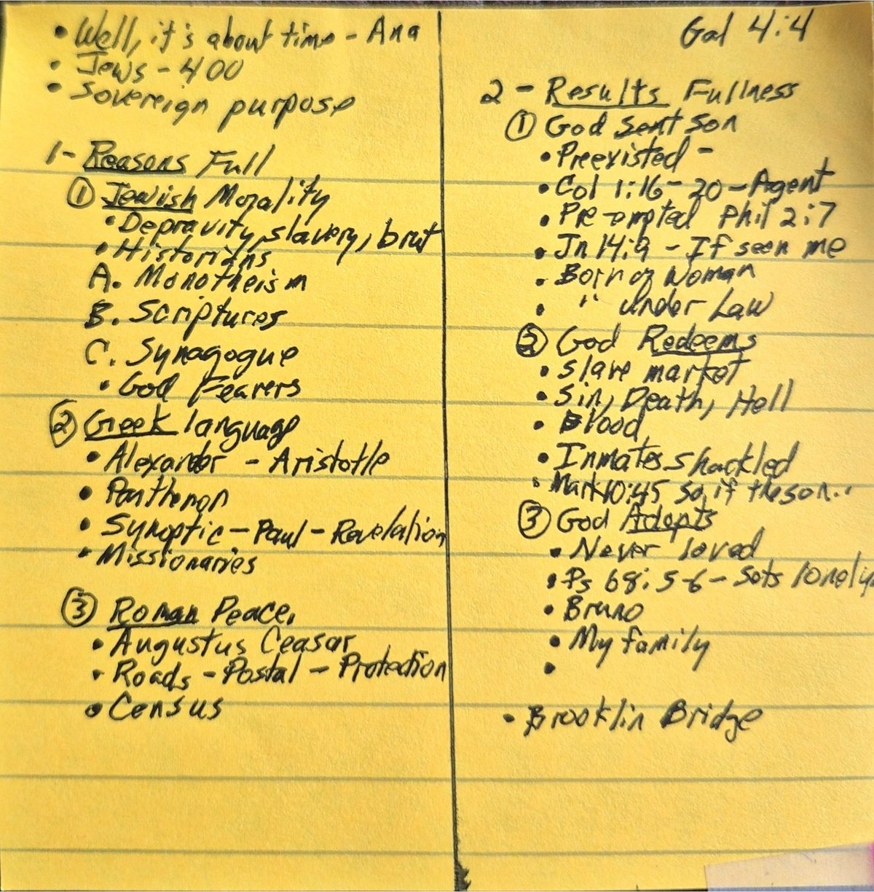

The Art of Preaching — A Ten-Unit CourseEl Arte de la Predicación — Un Curso de Diez Unidades
Professor: Dr. Wayne Cook · Seminary Director: Dr. Ted RogersProfesor: Dr. Wayne Cook · Director del Seminario: Dr. Ted Rogers
Please register above to beginPor favor regístrese arriba para comenzar
Note: Scripture quotations are from the American Standard Version (1901) for English and the Reina-Valera 1909 for Spanish, both in the public domain.Nota: Las citas bíblicas son de la American Standard Version (1901) para el inglés y la Reina-Valera 1909 para el español, ambas en el dominio público.
Course ProgressProgreso del Curso
0%
0 of 10 units completed0 de 10 unidades completadas
🎓 Congratulations! You have completed all ten units.🎓 ¡Felicitaciones! Ha completado las diez unidades.
Unit One · Stage 1: Build the FoundationUnidad Uno · Etapa 1: Construir el Fundamento
Prepare the FoundationPreparar el Fundamento
Why preach, why prepare, and how to choose a text — the seven gateways into a Biblical sermon.Por qué predicar, por qué prepararse, y cómo elegir un texto — las siete puertas a un sermón bíblico.
1.1 Why Lay and Bivocational Preaching Matters1.1 Por Qué Importa la Predicación Laica y Bivocacional
Forty percent of people surveyed list fear of public speaking as their greatest dread. We are more afraid of speaking in public than we are of dying. So when God calls a layperson, a Sunday-school teacher, or a bivocational pastor to preach, the response is often Moses' response: "Who am I that I should go?" The fear is real, the sense of inadequacy is honest, and the obstacle of inadequate training is genuine. And yet the call comes anyway, because the church across every generation has needed more preachers than the seminary system can produce. WiseSpeak exists to equip those whom God has called but the system has not reached.
El cuarenta por ciento de las personas encuestadas menciona el miedo a hablar en público como su mayor temor. Tememos más hablar en público que morir. Así que cuando Dios llama a un laico, a un maestro de escuela dominical o a un pastor bivocacional a predicar, la respuesta suele ser la de Moisés: «¿Quién soy yo para que vaya?» El miedo es real, el sentido de insuficiencia es honesto, y el obstáculo de una formación inadecuada es genuino. Y sin embargo el llamado llega de todos modos, porque la iglesia, en cada generación, ha necesitado más predicadores de los que el sistema del seminario puede producir. WiseSpeak existe para equipar a aquellos a quienes Dios ha llamado pero el sistema no ha alcanzado.
There are four reasons the layperson should accept the call to preach. The first is Biblical. Amos was not a professional. He told the king of Israel plainly, "I was no prophet, neither was I a prophet's son" (Amos 7:14). He kept livestock and tended sycamore trees. God called him out of that ordinary life to speak prophetic words to a nation. Moses had been raised in Pharaoh's court but spent forty years as a shepherd before God appeared in the burning bush. When Moses protested that he was not eloquent, the Lord answered, "Who hath made man's mouth?" (Exodus 4:11). Jesus came into the world as a proclaimer; someone has said that God had only one Son and made Him a preacher. Paul earned his living by making tents and yet planted churches across the Roman world. Philip is the only person in Scripture explicitly called an evangelist (Acts 21:8), and he was a deacon by office; even his daughters preached. The early Christian movement was overwhelmingly a lay movement. Most of its preachers earned their living at a trade and proclaimed the gospel as the second labor of their lives.
Hay cuatro razones por las que el laico debe aceptar el llamado a predicar. La primera es bíblica. Amós no era un profesional. Le dijo claramente al rey de Israel: «No soy profeta, ni soy hijo de profeta» (Amós 7:14). Criaba ganado y cuidaba higueras silvestres. Dios lo llamó de esa vida ordinaria para hablar palabras proféticas a una nación. Moisés había sido criado en la corte de Faraón, pero pasó cuarenta años como pastor antes de que Dios apareciera en la zarza ardiente. Cuando Moisés protestó que no era elocuente, el Señor respondió: «¿Quién dio la boca al hombre?» (Éxodo 4:11). Jesús vino al mundo como proclamador; alguien ha dicho que Dios tuvo un solo Hijo y lo hizo predicador. Pablo se ganaba la vida haciendo tiendas y, no obstante, plantó iglesias por todo el mundo romano. Felipe es la única persona en la Escritura llamada explícitamente evangelista (Hechos 21:8), y era diácono por oficio; aun sus hijas profetizaban. El movimiento cristiano primitivo fue abrumadoramente un movimiento laico. La mayoría de sus predicadores se ganaba la vida en un oficio y proclamaba el evangelio como la segunda labor de su vida.
The second reason is historical. The Methodist revival in England rested heavily on lay preachers whose names are now forgotten. The Baptists, Congregationalists, and Brethren used them too. North America in its frontier years had few ordained ministers; one of the farmers who plowed his field six days a week would stand up and preach on Sunday. Dwight L. Moody chose to remain a layman though he served full-time in ministry. The work of God advanced because lay people stood up to speak when no professional was available.
La segunda razón es histórica. El avivamiento metodista en Inglaterra descansó en gran medida sobre predicadores laicos cuyos nombres hoy están olvidados. Los bautistas, los congregacionalistas y los Hermanos también los usaron. Norteamérica, en sus años de frontera, tenía pocos ministros ordenados; uno de los granjeros que araba su campo seis días a la semana se ponía de pie y predicaba el domingo. Dwight L. Moody eligió permanecer laico aunque sirvió a tiempo completo en el ministerio. La obra de Dios avanzó porque gente laica se levantó a hablar cuando no había un profesional disponible.
The third reason is the priesthood of all believers. In the Old Testament the priesthood was a closed office held by descendants of Aaron. In the New Testament, Peter declares of the whole church: "Ye also, as living stones, are built up a spiritual house, to be a holy priesthood" (1 Peter 2:5). This means that we do not merely have a priesthood — we are a priesthood. The believer's task is to exercise his gifts for the glory of God, and if the gift of speech is among them, the Lord will use that gift in building His church.
La tercera razón es el sacerdocio de todos los creyentes. En el Antiguo Testamento el sacerdocio era un oficio cerrado, en manos de los descendientes de Aarón. En el Nuevo Testamento, Pedro declara de toda la iglesia: «Vosotros también, como piedras vivas, sed edificados como casa espiritual y sacerdocio santo» (1 Pedro 2:5). Esto significa que no solo tenemos un sacerdocio: somos un sacerdocio. La tarea del creyente es ejercer sus dones para la gloria de Dios, y si el don de la palabra está entre ellos, el Señor usará ese don en la edificación de su iglesia.
The fourth reason is simply that lay preachers can be effective. There are not enough ordained clergy to meet every preaching need today, and there never have been. The Gideons have preached for generations and have done a fine job. Pastors regularly leave their pulpits in the hands of capable lay speakers when they must be away. The work continues because God uses what is offered to Him.
El cuarenta por ciento de las personas encuestadas mencionan el miedo a hablar en público como su mayor temor. Tememos más hablar en público que la muerte. Cuando Dios llama a un laico, a un maestro de escuela dominical, o a un pastor bivocacional a predicar, la respuesta es a menudo la respuesta de Moisés: "¿Quién soy yo para que vaya?" Sin embargo, el llamado viene de todos modos, porque la iglesia en cada generación ha necesitado más predicadores de los que el sistema seminarista puede producir.
Hay cuatro razones por las que el laico debe aceptar el llamado a predicar. La primera es bíblica. Amós no era profesional. Moisés se formó en la corte de Faraón pero pastoreaba ovejas. Jesús vino al mundo como pregonero; "Dios tenía un solo Hijo y lo hizo predicador". Pablo se ganaba la vida como fabricante de tiendas. Felipe era diácono y evangelista. El movimiento cristiano primitivo fue principalmente un movimiento laico.
La segunda razón es histórica. El avivamiento metodista en Inglaterra dependió en gran medida de predicadores laicos. Los bautistas, congregacionalistas y hermanos también los usaron. Norteamérica en sus años fronterizos tenía pocos ministros ordenados. La tercera razón es el sacerdocio de todos los creyentes. Pedro declara: "vosotros también, como piedras vivas, sed edificados como casa espiritual y sacerdocio santo" (1 Pedro 2:5). La cuarta razón es que los predicadores laicos pueden ser efectivos. No hay suficiente clero ordenado para satisfacer todas las necesidades de predicación.
1.2 Why Prepare to Preach1.2 Por Qué Prepararse para Predicar
There are groups in the church that advocate preaching without preparation. They believe the preacher need only stand up and rely on the Holy Spirit for inspiration. The lay people who later comment on this kind of preaching almost always describe the same experience: the sermons are long, disorganized, and repeat the same ideas over and over. Five reasons stand against unprepared preaching.
Hay grupos en la iglesia que abogan por predicar sin preparación. Creen que el predicador solo necesita ponerse de pie y depender del Espíritu Santo para la inspiración. Los laicos que después comentan esta clase de predicación casi siempre describen la misma experiencia: los sermones son largos, desorganizados y repiten las mismas ideas una y otra vez. Cinco razones se oponen a la predicación sin preparación.
First, God demands it. Paul charged young Timothy: "Give diligence to present thyself approved unto God, a workman that needeth not to be ashamed, handling aright the word of truth" (2 Timothy 2:15). It is an awesome thing to speak for God. We are not prophets in the strict sense; we do not receive direct revelation. We are not apostles; we have not seen the risen Christ with physical eyes. We are stewards of the Bible, and our authority is derivative — it depends entirely upon how faithfully we have studied the text. G. Campbell Morgan closeted himself with his Bible every morning and would let nothing but a genuine emergency interrupt him.
Primero, Dios la demanda. Pablo encargó al joven Timoteo: «Procura con diligencia presentarte a Dios aprobado, como obrero que no tiene de qué avergonzarse, que usa bien la palabra de verdad» (2 Timoteo 2:15). Es algo imponente hablar de parte de Dios. No somos profetas en el sentido estricto; no recibimos revelación directa. No somos apóstoles; no hemos visto al Cristo resucitado con ojos físicos. Somos mayordomos de la Biblia, y nuestra autoridad es derivada: depende enteramente de cuán fielmente hayamos estudiado el texto. G. Campbell Morgan se encerraba con su Biblia cada mañana y no permitía que nada, salvo una verdadera emergencia, lo interrumpiera.
Second, the task itself demands it. Every Sunday millions gather to hear a word from God. In Jeremiah's day, false prophets told King Zedekiah whatever he wanted to hear, while the true prophet sat in prison. When the national crisis came, the king sent for Jeremiah in secret and asked, "Is there any word from the Lord?" That is the question every congregation, in every generation, brings to church on Sunday morning. The preacher has no right to give them anything else.
Segundo, la tarea misma lo demanda. Cada domingo, millones se reúnen para oír una palabra de Dios. En los días de Jeremías, los falsos profetas le decían al rey Sedequías lo que él quería oír, mientras el verdadero profeta estaba en la cárcel. Cuando llegó la crisis nacional, el rey mandó llamar a Jeremías en secreto y le preguntó: «¿Hay palabra de Jehová?» Esa es la pregunta que toda congregación, en toda generación, trae a la iglesia el domingo por la mañana. El predicador no tiene derecho a darles otra cosa.
Third, preparation removes the fear of uncertainty. Much of the dread of speaking comes from the inner whisper, "I have nothing to say." Preparation answers that whisper. The preacher who has studied does not need to wonder whether the next sentence will arrive; he has placed his sentences in order ahead of time. The fear does not disappear entirely, but it becomes manageable.
Tercero, la preparación quita el temor de la incertidumbre. Gran parte del pavor de hablar viene del susurro interior: «No tengo nada que decir». La preparación responde a ese susurro. El predicador que ha estudiado no necesita preguntarse si llegará la siguiente frase; ha puesto sus frases en orden de antemano. El miedo no desaparece del todo, pero se vuelve manejable.
Fourth, preparation provides direction. Extemporaneous preaching tends to wander. The preacher may set off in one direction in his introduction and end up somewhere quite different. He chases a rabbit and never recovers the scent of his original quarry. An outline gives the sermon a destination and keeps the preacher walking toward it.
Cuarto, la preparación da dirección. La predicación improvisada tiende a divagar. El predicador puede partir en una dirección en su introducción y terminar en un lugar muy distinto. Persigue a un conejo y nunca recupera el rastro de su presa original. Un bosquejo le da al sermón un destino y mantiene al predicador caminando hacia él.
Fifth, preparation allows the Holy Spirit to work over an extended period. If the Spirit can give us a word to speak in the moment we stand to preach, He can do even more if we have given Him a week to shape our thoughts. Preparation does not compete with the Spirit's power; it gives the Spirit room to work in us before we work in the pulpit.
Hay grupos en la iglesia que defienden la predicación sin preparación. Los laicos que comentan sobre esta clase de predicación casi siempre describen la misma experiencia: los sermones son largos, desorganizados y repiten las mismas ideas. Cinco razones se oponen a la predicación sin preparación. Primero, Dios la demanda — Pablo encargó a Timoteo: "Procura con diligencia presentarte a Dios aprobado". Segundo, la tarea misma la demanda. Tercero, la preparación elimina el miedo a la incertidumbre. Cuarto, la preparación proporciona dirección. Quinto, la preparación permite que el Espíritu Santo trabaje durante un período prolongado.
1.3 The Sermon as a House1.3 El Sermón como una Casa
It helps to think of a sermon as a house under construction. The text is the foundation — because it is the Word of God, it provides the stability that holds the whole sermon up. The introduction is the entryway: it leads people into the sermon, and like the entryway of a house, it should be relatively small, because no one is supposed to spend much of his life there. The divisions of the sermon are the support beams; their function is to hold the structure up, not to be admired in themselves. The illustrations are the windows that let light in. The conclusion is the exit. Each part is built with care because no part can be left to chance.
Ayuda pensar en un sermón como una casa en construcción. El texto es el fundamento: porque es la Palabra de Dios, provee la estabilidad que sostiene todo el sermón. La introducción es el zaguán: conduce a las personas dentro del sermón, y como el zaguán de una casa, debe ser relativamente pequeño, porque nadie ha de pasar allí gran parte de su vida. Las divisiones del sermón son las vigas de soporte; su función es sostener la estructura, no ser admiradas en sí mismas. Las ilustraciones son las ventanas que dejan entrar la luz. La conclusión es la salida. Cada parte se construye con cuidado porque ninguna puede dejarse al azar.
The foundational materials of every unified sermon are six: the text, the idea, the probing question, the keyword, the subject, and the objective. In this unit you learn to use the text. In the units that follow, you will learn to use the others. By the end of Unit 2 you will have all six in hand, and from Unit 3 onward you will use them to construct outlines.
Ayuda pensar en un sermón como una casa en construcción. El texto es el fundamento. La introducción es la entrada. Las divisiones son las vigas de soporte. Las ilustraciones son las ventanas que dejan entrar la luz. La conclusión es la salida. Los materiales fundamentales de todo sermón unificado son seis: el texto, la idea, la pregunta de sondeo, la palabra clave, el sujeto y el objetivo.
1.4 The Text: Laying the Foundation1.4 El Texto: Estableciendo el Fundamento
The literal meaning of the word text is "to weave." The text is the fabric on which the sermon is fashioned. Since the time of Origen in the third century, Christian preaching has been derived from a text — but having a text does not by itself guarantee that the preacher has submitted his mind to the Bible. H. H. Farmer warned against the danger that a preacher will use "the scripture words merely as a perch on which his own ideas, like a lot of twittering birds, may alight and preen themselves." The theme of the text and the theme of the sermon must be the same.
El significado literal de la palabra texto es «tejer». El texto es la tela sobre la cual se confecciona el sermón. Desde los tiempos de Orígenes en el siglo tercero, la predicación cristiana se ha derivado de un texto; pero tener un texto no garantiza por sí mismo que el predicador haya sometido su mente a la Biblia. H. H. Farmer advirtió contra el peligro de que el predicador use «las palabras de la Escritura meramente como una percha donde sus propias ideas, como un montón de pájaros parlanchines, vienen a posarse y acicalarse». El tema del texto y el tema del sermón deben ser el mismo.
Some years ago I heard a pastor preach from Psalm 142:4 — David, depressed and despondent, writing from a cave: "no man cared for my soul." The pastor preached on "those who care about lost souls," and went through Father, Son, Spirit, heaven, and hell as those who care. The sermon was Biblical and useful — but it had nothing to do with the text. The pastor needed a different text, because his theme and the theme of Psalm 142 simply did not match. Compare that with an outline I once heard from Isaiah 6:1–8 on "visions in an encounter with God": (1) a vision of God, (2) a vision of inadequacy, (3) a vision of service. There the theme of the text and the theme of the sermon were one and the same.
El significado literal de la palabra texto es "tejer". El texto es la tela sobre la cual se construye el sermón. Pero tener un texto no garantiza por sí mismo que el predicador haya sometido su mente a la Biblia. H. H. Farmer advirtió contra el peligro de que un predicador use "las palabras de la Escritura simplemente como una percha donde sus propias ideas, como un montón de pájaros gorjeando, pueden posarse y acicalarse". El tema del texto y el tema del sermón deben ser el mismo.
1.5 Seven Methods of Text Selection1.5 Siete Métodos de Selección de Texto
There are seven distinct methods by which a preacher may select a text. Each is legitimate; the choice depends on the occasion, the congregation, and the gift of the preacher.
Hay siete métodos distintos por los cuales un predicador puede seleccionar un texto. Cada uno es legítimo; la elección depende de la ocasión, de la congregación y del don del predicador.
1. Preach on a whole book. It is possible to preach a single sermon on an entire book of the Bible, especially shorter ones — Genesis, Ruth, Jonah, Job, Esther. When you do, select a summary verse to read as the scripture lesson. Eric Hayden in Preaching Through the Bible gives a one-word summary, a theme, and a central verse for every book. For Ephesians he uses the word church, the verse Ephesians 5:30 ("we are members of his body"), and the theme "the essential character of the church." From this he develops three points: the church as intimate relationship, vital union, and loving possession.
1. Predicar sobre un libro entero. Es posible predicar un solo sermón sobre un libro completo de la Biblia, especialmente los más cortos: Génesis, Rut, Jonás, Job, Ester. Cuando lo haga, escoja un versículo de resumen para leer como lección bíblica. Eric Hayden, en Preaching Through the Bible, da una palabra de resumen, un tema y un versículo central para cada libro. Para Efesios usa la palabra iglesia, el versículo Efesios 5:30 («somos miembros de su cuerpo»), y el tema «el carácter esencial de la iglesia». De esto desarrolla tres puntos: la iglesia como relación íntima, unión vital y posesión amorosa.
2. Preach on a chapter. Many chapters in the Bible are excellent material for a single sermon: Genesis 3, Psalm 1, Psalm 22, Psalm 23, Psalm 119, Isaiah 53, John 3, John 10, 1 Corinthians 13, Hebrews 11. A sermon from Hebrews 11 might examine "examples of faith." A summary verse may serve as the scripture lesson, instead of reading the whole chapter aloud.
2. Predicar sobre un capítulo. Muchos capítulos de la Biblia son material excelente para un solo sermón: Génesis 3, Salmo 1, Salmo 22, Salmo 23, Salmo 119, Isaías 53, Juan 3, Juan 10, 1 Corintios 13, Hebreos 11. Un sermón de Hebreos 11 podría examinar «ejemplos de fe». Un versículo de resumen puede servir como lección bíblica, en lugar de leer todo el capítulo en voz alta.
3. Preach on a theme. Much doctrinal preaching is thematic rather than expository — the preacher uses verses gathered from across the Bible to develop a single doctrine. New Testament preaching itself was largely thematic: the kerygma, the Cross, judgment, the love of God. Themes might include grace, the Lordship of Christ, baptism, stewardship, the authority of Scripture, the security of the believer, the fellowship of the church, or the attributes of God (omniscience, omnipotence, omnipresence).
3. Predicar sobre un tema. Mucha predicación doctrinal es temática más que expositiva: el predicador usa versículos reunidos de toda la Biblia para desarrollar una sola doctrina. La predicación neotestamentaria misma fue en gran parte temática: el kerigma, la Cruz, el juicio, el amor de Dios. Los temas pueden incluir la gracia, el señorío de Cristo, el bautismo, la mayordomía, la autoridad de la Escritura, la seguridad del creyente, la comunión de la iglesia, o los atributos de Dios (omnisciencia, omnipotencia, omnipresencia).
4. Preach on a word. A single word can carry an entire sermon. Words like sin, forgiveness, repentance, judgment, reconciliation, or love each contain enough theological weight to support a full message. The Greek word doulos ("bondservant") is what James calls himself in James 1:1; William Barclay's analysis of doulos develops four implications: absolute obedience, absolute humility, absolute loyalty, and absolute pride. When you do a word study, you do not need to use the Greek or Hebrew form in the pulpit. The congregation has little interest in the original word itself; they care about what the word means and how it lands in their lives.
4. Predicar sobre una palabra. Una sola palabra puede sostener todo un sermón. Palabras como pecado, perdón, arrepentimiento, juicio, reconciliación o amor contienen cada una suficiente peso teológico para sostener un mensaje completo. La palabra griega doulos («siervo») es como Santiago se llama a sí mismo en Santiago 1:1; el análisis que William Barclay hace de doulos desarrolla cuatro implicaciones: obediencia absoluta, humildad absoluta, lealtad absoluta y orgullo absoluto. Cuando haga un estudio de palabra, no necesita usar la forma griega o hebrea en el púlpito. La congregación tiene poco interés en la palabra original misma; les importa lo que la palabra significa y cómo aterriza en sus vidas.
5. Preach on a miracle or a parable. Someone defined the parable as "an earthly story with a heavenly meaning." The New Testament records as many as seventy parables of Jesus; about a third of His teaching is in parable form. Miracles can be handled like enacted parables — there are spiritual truths within the incident itself. The Sower, the Hidden Treasure, the Pearl of Great Price, the Unmerciful Servant, the Good Samaritan, the Rich Fool, the Prodigal Son — each is a sermon waiting to be preached. So is the healing of the blind man in John 9, or Jesus' calming of the storm in Matthew 8.
5. Predicar sobre un milagro o una parábola. Alguien definió la parábola como «una historia terrenal con un significado celestial». El Nuevo Testamento registra hasta setenta parábolas de Jesús; cerca de un tercio de su enseñanza está en forma de parábola. Los milagros pueden tratarse como parábolas representadas: hay verdades espirituales dentro del incidente mismo. El Sembrador, el Tesoro Escondido, la Perla de Gran Precio, el Siervo Despiadado, el Buen Samaritano, el Rico Insensato, el Hijo Pródigo: cada uno es un sermón esperando ser predicado. También lo es la sanidad del ciego en Juan 9, o cuando Jesús calma la tormenta en Mateo 8.
6. Preach on a character. People are genuinely interested in the lives of other people. The Bible offers characters in vast variety. Some, like Demas or Enoch, have only a few lines written about them; others, like Abraham or Moses, have many chapters. There are characters who inspire (Barnabas) and characters who warn (Absalom, Judas). There are saints and scoundrels, great loves and great hates. Drawing pastoral lessons from the lives of Biblical personalities is one of the easiest forms of preaching, and one of the most engaging for the congregation.
6. Predicar sobre un personaje. La gente está genuinamente interesada en las vidas de otras personas. La Biblia ofrece personajes en vasta variedad. Algunos, como Demas o Enoc, tienen solo unas pocas líneas escritas sobre ellos; otros, como Abraham o Moisés, tienen muchos capítulos. Hay personajes que inspiran (Bernabé) y personajes que advierten (Absalón, Judas). Hay santos y sinvergüenzas, grandes amores y grandes odios. Sacar lecciones pastorales de las vidas de los personajes bíblicos es una de las formas más fáciles de predicación, y una de las más cautivadoras para la congregación.
7. Preach consecutively after doing an analysis. A preaching analysis is the work of moving through a book or section of the Bible in advance, discovering the outlines that the Scripture itself naturally contains. From this analysis you can plan a series of consecutive sermons through the book. The advantage is that you preach the whole counsel of God rather than only your favorite passages, and much of the preparation is done in advance. The disadvantage is that consecutive preaching requires discipline; the preacher must follow the text rather than his own moods. Consecutive analysis will be examined more fully in a later unit.
Hay siete métodos distintos para seleccionar un texto. 1. Predicar sobre un libro entero (Génesis, Rut, Jonás, Job, Ester). 2. Predicar sobre un capítulo (Salmo 23, Isaías 53, 1 Corintios 13, Hebreos 11). 3. Predicar sobre un tema (gracia, señorío, bautismo, mayordomía, atributos de Dios). 4. Predicar sobre una palabra (pecado, perdón, arrepentimiento, doulos, ágape). 5. Predicar sobre un milagro o parábola (el Sembrador, el Buen Samaritano, el Rico Insensato, la calma de la tormenta). 6. Predicar sobre un personaje (Abraham, Moisés, Bernabé, Absalón, Judas). 7. Predicar consecutivamente después de hacer un análisis — trabajar a través de un libro descubriendo los bosquejos que la Escritura contiene naturalmente.
"And how shall they preach, except they be sent? even as it is written, How beautiful are the feet of them that bring glad tidings of good things!"Romans 10:15 (ASV)"¿Y cómo predicarán si no fueren enviados? Como está escrito: ¡Cuán hermosos son los pies de los que anuncian el evangelio de la paz, de los que anuncian el evangelio de los bienes!"Romanos 10:15 (RV1909)
Unit 1 — Practice: Match Text-Selection MethodsUnidad 1 — Práctica: Empareje Métodos de Selección de Texto
For each Scripture passage below, identify which of the seven text-selection methods would best fit. Use one of: book, chapter, theme, word, parable/miracle, character, consecutive.Para cada pasaje a continuación, identifique cuál de los siete métodos de selección de texto encajaría mejor. Use uno de: libro, capítulo, tema, palabra, parábola/milagro, personaje, consecutivo.
Highly recommended:Altamente recomendado:The practice exercises do not count toward your assessment score, but we strongly encourage you to work through them. The discipline of actually filling in the keyword, the subject, and the outline points — rather than just reading about them — is where the learning sticks.Los ejercicios de práctica no cuentan para su puntaje de evaluación, pero le recomendamos encarecidamente que los complete. La disciplina de realmente escribir la palabra clave, el sujeto y los puntos del bosquejo — en lugar de solo leer sobre ellos — es donde el aprendizaje se afianza.
Hebrews 11Hebreos 11
Book of JonahLibro de Jonás
Doulos (Greek for bondservant)Doulos (griego para esclavo)
Life of BarnabasVida de Bernabé
The Good SamaritanEl Buen Samaritano
The doctrine of grace (verses across the Bible)La doctrina de la gracia (versículos por toda la Biblia)
Unit 1 — AssessmentUnidad 1 — Evaluación
TypeTipoMultiple choiceOpción múltiple
To passAprobar90%
Short-essay scenarios — required for Th.M. & M.Div.; optional for Certificate and AssociateEscenarios de ensayo — obligatorios para M.Teol. y M.Div.; opcionales para Certificado y Asociado
Unit Two · Stage 1: Build the FoundationUnidad Dos · Etapa 1: Construir el Fundamento
Develop an IdeaDesarrollar una Idea
Idea, probing question, keyword, subject, objective — the five tools that turn a text into a sermon.Idea, pregunta de sondeo, palabra clave, sujeto, objetivo — las cinco herramientas que convierten un texto en sermón.
2.1 The Idea2.1 La Idea
After you have a text, the next foundational material is the idea. The idea is the general topic of the sermon, and it must come from the Scripture itself. Donald Miller laid down a rule that has shaped a generation of preachers: the theme of the text and the theme of the sermon must be the same. If they are not, the text is no longer a text — it is a pretext, a starting point for the preacher's own thoughts. The idea answers the question, "What is the general topic of this text?"
Después de tener un texto, el siguiente material fundamental es la idea. La idea es el tema general del sermón, y debe surgir de la Escritura misma. Donald Miller estableció una regla que ha moldeado a una generación de predicadores: el tema del texto y el tema del sermón deben ser el mismo. Si no lo son, el texto deja de ser texto y se vuelve un pretexto, un punto de partida para los propios pensamientos del predicador. La idea responde a la pregunta: «¿Cuál es el tema general de este texto?»
Examples of an idea include: faith, the kingdom of God, hope, law, grieving the Holy Spirit, works, love, fasting, baptism, singleness, growing, family. Each of these is a real Biblical idea — but each is also far too general to preach in one sermon. Try preaching on faith. You could speak about the qualities of faith, the demands of faith, examples of faith, men of faith, or reasons faith is important — and each of these would itself be a full sermon. The idea is the raw quarry stone. It must be cut down before it can be set in a wall.
Ejemplos de una idea incluyen: la fe, el reino de Dios, la esperanza, la ley, el contristar al Espíritu Santo, las obras, el amor, el ayuno, el bautismo, la soltería, el crecer, la familia. Cada una de estas es una idea bíblica real, pero cada una es también demasiado general para predicarse en un solo sermón. Intente predicar sobre la fe. Podría hablar de las cualidades de la fe, las exigencias de la fe, ejemplos de fe, hombres de fe, o razones por las que la fe es importante, y cada uno de estos sería en sí mismo un sermón completo. La idea es la piedra en bruto de la cantera. Debe ser cortada antes de poder colocarse en un muro.
The tool that cuts the idea down is the probing question. But before you reach for that tool, you have to have the stone. Open your text and ask the simple question: "What is this passage about?" Whatever single noun or phrase comes back is your idea. Resist the temptation to make it clever. The idea should be plain. Cleverness comes later.
Después que tenga un texto, el siguiente material fundamental es la idea. La idea es el tema general del sermón, y debe venir de la Escritura misma. Donald Miller estableció una regla: el tema del texto y el tema del sermón deben ser el mismo. Si no lo son, el texto ya no es un texto — es un pretexto. Ejemplos de una idea: fe, el reino de Dios, esperanza, ley, amor, ayuno, bautismo, crecimiento, familia. Cada una es demasiado general para predicar en un solo sermón. La idea es la piedra de cantera en bruto; debe cortarse antes de colocarse en un muro.
2.2 The Probing Question2.2 La Pregunta de Sondeo
The probing question is the tool that narrows the idea to a manageable size. The news industry uses these same questions to produce a story. Rudyard Kipling wrote a poem in The Elephant's Child that is the easiest way to remember them:
La pregunta de sondeo es la herramienta que reduce la idea a un tamaño manejable. La industria de las noticias usa estas mismas preguntas para producir una nota. Rudyard Kipling escribió un poema en The Elephant’s Child que es la manera más fácil de recordarlas:
Kipling's Six Honest Servants
I keep six honest serving men
They taught me all I knew,
Their names are What and Why and When
And How and Where and Who.
Los Seis Sirvientes de Kipling
Mantengo a seis sirvientes honestos
Me enseñaron todo lo que sabía.
Sus nombres son Qué, Por qué, Cuándo,
Cómo, Dónde y Quién.
For preaching purposes, Kipling's six become eight by adding which and how much. So the eight interrogatives are: who, which, what, why, when, where, how, and how much. The probing question is formed by putting the idea together with one of these interrogatives in a complete sentence question.
Para los propósitos de la predicación, las seis de Kipling se vuelven ocho al añadir cuál y cuánto. Así, los ocho interrogativos son: quién, cuál, qué, por qué, cuándo, dónde, cómo y cuánto. La pregunta de sondeo se forma al unir la idea con uno de estos interrogativos en una pregunta de oración completa.
Take the idea of hope. Each interrogative produces a different probing question, and each probing question will produce a different sermon:
Tome la idea de la esperanza. Cada interrogativo produce una pregunta de sondeo distinta, y cada pregunta de sondeo producirá un sermón distinto:
Who generally points to people. "Who has hope?" Which points to types or kinds. "Which kinds of hope are valid?" What points to steps, ways, or qualities. "What are the values of hope?" Why points to reasons. "Why is hope necessary?" When points to times. "When do we need hope?" Where points to places. "Where do we find hope?" How points to procedures or ways. "How is hope obtained, or lost?" How much points to quantity. "How much hope do we need?"
Quién generalmente apunta a personas. «¿Quién tiene esperanza?» \nCuál apunta a tipos o clases. «¿Cuáles clases de esperanza son válidas?» \nQué apunta a pasos, maneras o cualidades. «¿Cuáles son los valores de la esperanza?» \nPor qué apunta a razones. «¿Por qué es necesaria la esperanza?» \nCuándo apunta a tiempos. «¿Cuándo necesitamos esperanza?» \nDónde apunta a lugares. «¿Dónde hallamos esperanza?» \nCómo apunta a procedimientos o maneras. «¿Cómo se obtiene, o se pierde, la esperanza?» \nCuánto apunta a cantidad. «¿Cuánta esperanza necesitamos?»
Notice that the same idea — hope — has just produced eight different sermons. Each is legitimate. Each is Biblical. Each will require a different sermon outline. The probing question has done the cutting work that the idea alone could not do.
La pregunta de sondeo es la herramienta que reduce la idea a un tamaño manejable. Los ocho interrogativos son: quién, cuál, qué, por qué, cuándo, dónde, cómo y cuánto. Tome la idea de esperanza. Cada interrogativo produce una pregunta de sondeo diferente, y cada pregunta producirá un sermón diferente: "¿Quién tiene esperanza?", "¿Cuáles tipos de esperanza son válidos?", "¿Cuáles son los valores de la esperanza?", "¿Por qué es necesaria la esperanza?", "¿Cuándo necesitamos esperanza?", "¿Dónde encontramos esperanza?", "¿Cómo se obtiene la esperanza?", "¿Cuánta esperanza necesitamos?" La misma idea acaba de producir ocho sermones diferentes.
2.3 The Keyword2.3 La Palabra Clave
The keyword arises naturally from the probing question. It is usually a plural noun, and it is the single most important word in your sermon's structure — because the keyword is what unites the outline. Every point of the sermon will be a particular instance of the keyword.
La palabra clave surge naturalmente de la pregunta de sondeo. Suele ser un sustantivo plural, y es la palabra más importante en la estructura de su sermón, porque la palabra clave es lo que une el bosquejo. Cada punto del sermón será un caso particular de la palabra clave.
Three rules govern the keyword. First, it is always plural. Almost without exception, your keyword will end in -s. Check yours: if it does not end in -s and is not an irregular plural like "people" or "men," it is probably wrong. Second, only one keyword per sermon. Just as you must use only one interrogative, you must use only one keyword. Third, avoid generic words like "things." "Three things about prayer" is not a keyword; it is laziness. The keyword should be as specific as possible to the actual content of your divisions.
Tres reglas gobiernan la palabra clave. Primera: siempre es plural. Casi sin excepción, su palabra clave terminará en -s. Verifique la suya: si no termina en -s y no es un plural irregular, probablemente está equivocada. Segunda: solo una palabra clave por sermón. Así como debe usar un solo interrogativo, debe usar una sola palabra clave. Tercera: evite palabras genéricas como «cosas». «Tres cosas sobre la oración» no es una palabra clave; es pereza. La palabra clave debe ser tan específica como sea posible respecto al contenido real de sus divisiones.
Watch how the keyword arises from each probing question on the idea of faith:
Observe cómo la palabra clave surge de cada pregunta de sondeo sobre la idea de la fe:
Who are some people of great faith? Keyword = people. Which are the elements of faith? Keyword = elements. What are the ingredients of faith? Keyword = ingredients. What are the effects of faith? Keyword = effects. (Possible outline: seeing the invisible, doing the impossible, believing the incredible.) Why have faith? Keyword = reasons. (Possible outline: abundant life, eternal life.) When should we have faith? Keyword = times. (When discouraged, when distracted, when disappointed.) Where may faith be found? Keyword = places. (Before the throne, in the closet, near the cross.) How do we show faith? Keyword = ways. (By word, by walk, by witness.) How much faith do we need? Keyword = amounts. (Enough to cover sorrow, enough to fill our lives, enough to overflow into joy.)
¿Quiénes son algunas personas de gran fe? Palabra clave = personas. \n¿Cuáles son los elementos de la fe? Palabra clave = elementos. \n¿Cuáles son los ingredientes de la fe? Palabra clave = ingredientes. \n¿Cuáles son los efectos de la fe? Palabra clave = efectos. (Bosquejo posible: ver lo invisible, hacer lo imposible, creer lo increíble.) \n¿Por qué tener fe? Palabra clave = razones. (Bosquejo posible: vida abundante, vida eterna.) \n¿Cuándo debemos tener fe? Palabra clave = tiempos. (Cuando estamos desanimados, distraídos, decepcionados.) \n¿Dónde puede hallarse la fe? Palabra clave = lugares. (Ante el trono, en el aposento, junto a la cruz.) \n¿Cómo mostramos la fe? Palabra clave = maneras. (Por palabra, por andar, por testimonio.) \n¿Cuánta fe necesitamos? Palabra clave = cantidades. (Suficiente para cubrir la tristeza, suficiente para llenar nuestras vidas, suficiente para desbordar en gozo.)
La palabra clave surge naturalmente de la pregunta de sondeo. Es generalmente un sustantivo plural, y es la palabra más importante en la estructura de su sermón — porque la palabra clave une el bosquejo. Tres reglas: siempre es plural (terminando casi siempre en -s); solo una palabra clave por sermón; evite palabras genéricas como "cosas". Algunas palabras clave útiles: razones, maneras, tiempos, lugares, elementos, ingredientes, pasos, principios, lecciones, ejemplos, problemas, promesas, peligros, beneficios, advertencias.
2.4 The Subject2.4 El Sujeto
Having a clear subject is what prevents aimless wandering in preaching. I remember walking through the woods with my father as a boy. I would have been hopelessly lost — every tree looked the same — but my father pulled out his compass at intervals. The compass gave him a fixed point of reference; we did not wander. The subject of a sermon is its compass.
Tener un sujeto claro es lo que evita el divagar sin rumbo en la predicación. Recuerdo caminar por el bosque con mi padre cuando era niño. Yo me habría perdido sin remedio, pues cada árbol parecía igual, pero mi padre sacaba su brújula a intervalos. La brújula le daba un punto fijo de referencia; no divagábamos. El sujeto de un sermón es su brújula.
The subject is the keyword plus a modifier. A modifier is anything that describes or limits the keyword. Three forms of modifier are common. The first is the adjective: "seven deadly sins" — the words "seven" and "deadly" both modify the keyword "sins." The second is the prepositional phrase: "ways of gaining faith" — the keyword is "ways," and "of gaining faith" is a prepositional phrase that modifies it. The third is the subordinate clause: "qualities that God possesses" — "qualities" is the keyword, and "that God possesses" is a clause that modifies it.
El sujeto es la palabra clave más un modificador. Un modificador es cualquier cosa que describa o limite la palabra clave. Tres formas de modificador son comunes. La primera es el adjetivo: «siete pecados mortales», donde las palabras «siete» y «mortales» modifican la palabra clave «pecados». La segunda es la frase preposicional: «maneras de ganar fe», donde la palabra clave es «maneras», y «de ganar fe» es una frase preposicional que la modifica. La tercera es la cláusula subordinada: «cualidades que Dios posee», donde «cualidades» es la palabra clave, y «que Dios posee» es una cláusula que la modifica.
The subject answers the question, "What is the sermon about?" If you ask the probing question, "What are some ways of gaining faith?", the keyword is "ways" and the subject is "ways of gaining faith." Each division of the outline will be one specific way of gaining faith. The congregation, when they take notes, will be able to write the subject at the top of their page and write each numbered point underneath. They will know what the sermon is about, and so will you.
Tener un sujeto claro es lo que previene el deambular sin rumbo en la predicación. El sujeto es la palabra clave más un modificador. Tres formas: adjetivo ("siete pecados capitales"), frase preposicional ("maneras de obtener fe"), o cláusula subordinada ("cualidades que Dios posee"). El sujeto responde a la pregunta: "¿De qué trata el sermón?"
2.5 The Objective2.5 El Objetivo
The objective is the goal of the sermon. It answers the question, "What do I want people to do?" The objective should be phrased as an action, not as a belief or attitude — because beliefs and attitudes will follow when actions are right, but actions will not always follow when beliefs and attitudes are merely informed.
El objetivo es la meta del sermón. Responde a la pregunta: «¿Qué quiero que la gente haga?» El objetivo debe expresarse como una acción, no como una creencia o actitud, porque las creencias y actitudes seguirán cuando las acciones sean correctas, pero las acciones no siempre seguirán cuando las creencias y actitudes están meramente informadas.
A useful formula is to begin the objective with the words "people will…" If your action is salvation, the objective might be: "People will respond during the invitation to receive Christ as Savior." If your subject deals with anger, the objective might be: "People will begin to control their anger during difficult situations." If your subject deals with prayer, the objective might be: "People will set aside a specific time each day for prayer this week." Each of these is concrete, each is measurable, and each gives the conclusion of your sermon a clear destination.
Una fórmula útil es comenzar el objetivo con las palabras «la gente…». Si su acción es la salvación, el objetivo podría ser: «La gente responderá durante la invitación para recibir a Cristo como Salvador». Si su tema trata del enojo, el objetivo podría ser: «La gente comenzará a controlar su enojo durante situaciones difíciles». Si su tema trata de la oración, el objetivo podría ser: «La gente apartará un tiempo específico cada día para la oración esta semana». Cada uno de estos es concreto, cada uno es medible, y cada uno le da a la conclusión de su sermón un destino claro.
When you have completed the five tools of Unit 2 — idea, probing question, keyword, subject, and objective — you have completed the foundation. From Unit 3 forward you will use these foundational materials to construct outlines.
El objetivo es la meta del sermón. Responde a la pregunta: "¿Qué quiero que la gente haga?" El objetivo debe formularse como una acción, no como una creencia o actitud. Una fórmula útil es comenzar con "la gente va a…" — "La gente responderá a la invitación para recibir a Cristo como Salvador"; "La gente comenzará a controlar su ira"; "La gente apartará un tiempo específico cada día para orar."
"Give diligence to present thyself approved unto God, a workman that needeth not to be ashamed, handling aright the word of truth."2 Timothy 2:15 (ASV)"Procura con diligencia presentarte á Dios aprobado, como obrero que no tiene de qué avergonzarse, que traza bien la palabra de verdad."2 Timoteo 2:15 (RV1909)
Unit 2 — Practice: The Keyword MethodUnidad 2 — Práctica: El Método de la Palabra Clave
This is the central exercise of the course. Work through one full keyword sequence — idea, probing question, keyword, subject, objective. Your answers are checked automatically where possible. The "Show Model Answer" button reveals a sample so you can compare.Este es el ejercicio central del curso. Trabaje a través de una secuencia completa de palabra clave — idea, pregunta de sondeo, palabra clave, sujeto, objetivo. Sus respuestas se verifican automáticamente donde sea posible. El botón "Mostrar Respuesta Modelo" revela una muestra para comparar.
Highly recommended:Altamente recomendado:The practice exercises do not count toward your assessment score, but we strongly encourage you to work through them. The discipline of actually filling in the keyword, the subject, and the outline points — rather than just reading about them — is where the learning sticks.Los ejercicios de práctica no cuentan para su puntaje de evaluación, pero le recomendamos encarecidamente que los complete. La disciplina de realmente escribir la palabra clave, el sujeto y los puntos del bosquejo — en lugar de solo leer sobre ellos — es donde el aprendizaje se afianza.
Step 1 — Choose an IdeaPaso 1 — Escoja una Idea
Pick any general Biblical idea (one or two words). Examples: faith, prayer, grace, baptism, family, love, hope, forgiveness.Escoja cualquier idea bíblica general (una o dos palabras). Ejemplos: fe, oración, gracia, bautismo, familia, amor, esperanza, perdón.
IdeaIdea
Step 2 — Form a Probing QuestionPaso 2 — Formule una Pregunta de Sondeo
Combine your idea with one of the eight interrogatives (who, which, what, why, when, where, how, how much) into a complete sentence question.Combine su idea con uno de los ocho interrogativos (quién, cuál, qué, por qué, cuándo, dónde, cómo, cuánto) en una pregunta completa.
QuestionPregunta
Eight sample probing questions on "faith":Ocho preguntas de sondeo de muestra sobre "fe": • Who are some people of great faith? • Which kinds of faith does the Bible commend? • What are the effects of faith? • Why is faith necessary? • When should we exercise faith? • Where is faith found? • How is faith strengthened? • How much faith do we need? • ¿Quiénes son algunas personas de gran fe? • ¿Cuáles tipos de fe elogia la Biblia? • ¿Cuáles son los efectos de la fe? • ¿Por qué es necesaria la fe? • ¿Cuándo debemos ejercer fe? • ¿Dónde se encuentra la fe? • ¿Cómo se fortalece la fe? • ¿Cuánta fe necesitamos?
Step 3 — Identify the KeywordPaso 3 — Identifique la Palabra Clave
Extract the keyword from your probing question. It must be plural (almost always ending in -s) and as specific as possible. Avoid generic words like "things."Extraiga la palabra clave de su pregunta de sondeo. Debe ser plural (casi siempre terminando en -s) y lo más específica posible. Evite palabras genéricas como "cosas."
KeywordPalabra Clave
Step 4 — Form the SubjectPaso 4 — Forme el Sujeto
Build the subject by adding a modifier to the keyword. Modifier types: adjective ("seven deadly sins"), prepositional phrase ("ways of gaining faith"), or subordinate clause ("qualities that God possesses").Construya el sujeto agregando un modificador a la palabra clave. Tipos de modificador: adjetivo ("siete pecados capitales"), frase preposicional ("maneras de obtener fe"), o cláusula subordinada ("cualidades que Dios posee").
SubjectSujeto
Step 5 — Write the ObjectivePaso 5 — Escriba el Objetivo
State the goal of the sermon as an action, not a belief or attitude. Begin with "People will…" Concrete and measurable.Exprese la meta del sermón como una acción, no como una creencia o actitud. Comience con "La gente va a…" Concreto y medible.
ObjectiveObjetivo
Sample objectives:Objetivos de muestra: • People will respond during the invitation to receive Christ as Savior. • People will set aside fifteen minutes each day this week for Scripture and prayer. • People will speak words of forgiveness to one person who has wronged them. • People will begin to control their anger during difficult situations. • La gente responderá durante la invitación para recibir a Cristo como Salvador. • La gente apartará quince minutos cada día esta semana para la Escritura y la oración. • La gente hablará palabras de perdón a una persona que les ha hecho daño. • La gente comenzará a controlar su ira durante situaciones difíciles.
Unit 2 — AssessmentUnidad 2 — Evaluación
TypeTipoMultiple choiceOpción múltiple
To passAprobar90%
Short-essay scenarios — required for Th.M. & M.Div.; optional for Certificate and AssociateEscenarios de ensayo — obligatorios para M.Teol. y M.Div.; opcionales para Certificado y Asociado
Unit Three · Stage 2: Construct the OutlineUnidad Tres · Etapa 2: Construir el Bosquejo
Construct Your OutlineConstruya su Bosquejo
The WiseSpeak outline at a glance — from subject to parallel divisions. El bosquejo WiseSpeak de un vistazo — del tema a las divisiones paralelas.
Five marks of a good outline, and the deductive method that produces it.Cinco marcas de un buen bosquejo, y el método deductivo que lo produce.
3.1 How Many Divisions?3.1 ¿Cuántas Divisiones?
Most homiletic writers agree that two to five divisions is the right range for a sermon. Less than two is not enough to develop a theme adequately. More than five becomes too much for the congregation to follow and remember. Three is a classical default, and not without reason. Craig Skinner quotes the limerick that justifies it:
La mayoría de los autores de homilética concuerda en que de dos a cinco divisiones es el rango correcto para un sermón. Menos de dos no basta para desarrollar un tema adecuadamente. Más de cinco se vuelve demasiado para que la congregación lo siga y recuerde. Tres es el valor clásico por defecto, y no sin razón. Craig Skinner cita la quintilla que lo justifica:
Skinner's limerick
There was a young fellow from Lyme, Who lived with three wives at a time; When they asked, "Why the third?" He replied, "One's absurd; And bigamy, sir, is a crime!"
La quintilla de Skinner
Había un joven de Lyme, que vivía con tres esposas a la vez; Cuando preguntaron, "¿Por qué la tercera?" Él respondió: "Una es absurda; ¡Y la bigamia, señor, es un crimen!"
The structure of a sermon deserves more attention than most preachers give it. Some homiletic writers advise: "Don't make the outline obtrusive." I have never been able to imagine an outline that was too noticeable. An old bony cow may not be pretty, but it is still preferable to a cow lying dead in the field with no bones at all. Some of the most effective preachers in history made their outlines visible — they not only stated each point but repeated the whole outline at the start of every new section. The congregation came away knowing exactly what they had heard.
La mayoría de los escritores homiléticos coinciden en que de dos a cinco divisiones es el rango correcto para un sermón. Tres es un valor predeterminado clásico. La estructura de un sermón merece más atención de la que la mayoría de los predicadores le da. Una vaca vieja huesuda puede no ser bonita, pero es preferible a una vaca tendida muerta en el campo sin huesos.
3.2 Five Marks of a Good Outline3.2 Cinco Marcas de un Buen Bosquejo
A well-built outline shows five characteristics. They function together; weakness in any one of them will weaken the whole sermon.
Un bosquejo bien construido muestra cinco características. Funcionan juntas; la debilidad en cualquiera de ellas debilitará todo el sermón.
1. Unity. The whole sermon is about one thing — not three things, not five things, but one. Unity is the most important of the five marks because without it nothing else will hold. The keyword is your main tool for unity; every division must be a particular instance of the keyword. Consider this poor outline: (I) All Christians need to pray; (II) The Psalms lead us to praise God's holy name; (III) Some other remarks about prayer. Three points, all about prayer in some way, but disjointed — there is no real subject. The outline could be repaired by selecting a clear subject like "necessities in prayer," and arranging the points beneath it: (I) the need to request, (II) the need to praise, (III) the need to confess.
1. Unidad. Todo el sermón trata de una sola cosa: no de tres cosas, no de cinco cosas, sino de una. La unidad es la más importante de las cinco marcas porque sin ella nada más se sostendrá. La palabra clave es su herramienta principal para la unidad; cada división debe ser un caso particular de la palabra clave. Considere este bosquejo deficiente: (I) Todos los cristianos necesitan orar; (II) Los Salmos nos llevan a alabar el santo nombre de Dios; (III) Algunas otras observaciones sobre la oración. Tres puntos, todos sobre la oración de algún modo, pero inconexos: no hay un sujeto real. El bosquejo podría repararse escogiendo un sujeto claro como «necesidades en la oración», y ordenando los puntos debajo: (I) la necesidad de pedir, (II) la necesidad de alabar, (III) la necesidad de confesar.
2. Order. Order is the relationship of the parts to each other and to the whole. Each division should be distinct from the others, and none should be equal to the subject. Take 2 Corinthians 13:14: "The grace of the Lord Jesus Christ, and the love of God, and the communion of the Holy Spirit, be with you all." A subject like "the blessings we receive from God" will produce a flawed outline because the second division ("the love of God") repeats the word God already in the subject. A better subject is "the blessings we receive from the Trinity," which yields a polished outline: (I) the grace of the Son, (II) the love of the Father, (III) the fellowship of the Spirit.
2. Orden. El orden es la relación de las partes entre sí y con el todo. Cada división debe ser distinta de las demás, y ninguna debe ser igual al sujeto. Tome 2 Corintios 13:14: «La gracia del Señor Jesucristo, y el amor de Dios, y la comunión del Espíritu Santo sean con todos vosotros». Un sujeto como «las bendiciones que recibimos de Dios» producirá un bosquejo defectuoso, porque la segunda división («el amor de Dios») repite la palabra Dios que ya está en el sujeto. Un mejor sujeto es «las bendiciones que recibimos de la Trinidad», que produce un bosquejo pulido: (I) la gracia del Hijo, (II) el amor del Padre, (III) la comunión del Espíritu.
3. Movement. The outline goes somewhere. There is a clear starting point and an identifiable destination. Edgar Jackson observed: "Contrary to generally accepted practice, it is psychologically sound to make your strongest point first." Lost attention is hard to regain. At the same time, it is wise to put the most evangelistic point last, because the sermon will move into the invitation from there, and an evangelistic peak makes the transition natural. A useful pattern is: (I) a strong point to gain attention, (II) a sustaining point that keeps attention, (III) the most evangelistic point, leading into the invitation.
3. Movimiento. El bosquejo va a alguna parte. Hay un punto de partida claro y un destino identificable. Edgar Jackson observó: «Contrario a la práctica generalmente aceptada, es psicológicamente acertado poner el punto más fuerte primero». La atención perdida es difícil de recuperar. Al mismo tiempo, es sabio poner el punto más evangelístico al final, porque desde allí el sermón pasará a la invitación, y un clímax evangelístico hace natural la transición. Un patrón útil es: (I) un punto fuerte para captar la atención, (II) un punto sostenedor que mantiene la atención, (III) el punto más evangelístico, que conduce a la invitación.
4. Proportion. The divisions are roughly equal in length and weight. The temptation is to lavish ninety percent of the sermon on the first point and rush through the others — the tail wagging the dog. If a point is important enough to make, it deserves to be developed. If it cannot be developed, perhaps it should not be a separate point at all.
4. Proporción. Las divisiones son aproximadamente iguales en longitud y peso. La tentación es derrochar el noventa por ciento del sermón en el primer punto y apresurar los demás: la cola moviendo al perro. Si un punto es suficientemente importante para mencionarse, merece ser desarrollado. Si no puede desarrollarse, quizá no debería ser un punto aparte en absoluto.
5. Parallelism. The divisions match each other in grammatical structure. If the first division is a phrase, all the others should be phrases — not sentences or single words. Verbs should be active rather than passive where possible. Take a flawed outline from Matthew 14:14–21 on "Ways Jesus demonstrates His compassion": (I) Jesus healed their sick, (II) They were shown love by Him, (III) They were fed by Him. Two of the three are passive. Recast in active and parallel form: (I) He healed them, (II) He loved them, (III) He fed them. The three lines now sound like three lines, and the congregation will remember them.
5. Paralelismo. Las divisiones se corresponden entre sí en estructura gramatical. Si la primera división es una frase, todas las demás deben ser frases, no oraciones ni palabras sueltas. Los verbos deben ser activos más que pasivos donde sea posible. Tome un bosquejo defectuoso de Mateo 14:14–21 sobre «Maneras en que Jesús demuestra su compasión»: (I) Jesús sanó a sus enfermos, (II) Ellos fueron amados por Él, (III) Ellos fueron alimentados por Él. Dos de los tres son pasivos. Reformúlelos en forma activa y paralela: (I) Él los sanó, (II) Él los amó, (III) Él los alimentó. Las tres líneas ahora suenan como tres líneas, y la congregación las recordará.
Do not force alliteration onto a text it will not bear. Many a fine outline has been ruined by a preacher who insisted that every point begin with the same letter and ended up bending the meaning of the text to do it. Parallelism in grammar is helpful; alliteration is sometimes helpful but never required.
Un buen bosquejo muestra cinco características. 1. Unidad — el sermón completo trata de una sola cosa. 2. Orden — cada división es distinta de las demás, y ninguna es igual al sujeto. 3. Movimiento — el bosquejo va a alguna parte. Edgar Jackson observó: "Es psicológicamente sensato hacer primero su punto más fuerte." 4. Proporción — las divisiones son aproximadamente iguales en longitud y peso. 5. Paralelismo — las divisiones coinciden gramaticalmente. Si la primera división es una frase, las demás también deben ser frases. Use voz activa cuando sea posible. No fuerce la aliteración.
3.3 The Deductive Method3.3 El Método Deductivo
There are two principal ways of building a sermon outline: deduction and induction. This unit covers deduction; Unit 4 will cover induction. Deduction is reasoning from the general to the specific. You begin with a general statement — for example, "God is great" — and then point out specific ways that statement is true: (I) great in His knowledge, (II) great in His power, (III) great in His presence. The general is broken down into the specific.
Hay dos maneras principales de construir un bosquejo de sermón: la deducción y la inducción. Esta unidad cubre la deducción; la Unidad 4 cubrirá la inducción. La deducción es razonar de lo general a lo específico. Usted comienza con una afirmación general —por ejemplo, «Dios es grande»— y luego señala maneras específicas en que esa afirmación es verdadera: (I) grande en su conocimiento, (II) grande en su poder, (III) grande en su presencia. Lo general se descompone en lo específico.
In preaching, deduction works like this: after discovering the idea contained in your text and forming a subject, you state the subject as a general truth and then list specific instances of it. Each point is a subdivision of the larger subject. Topical preaching is almost always deductive, but expository preaching often uses deduction as well — the preacher takes a verse, identifies its main affirmation, and then walks through the specific ways it is true.
En la predicación, la deducción funciona así: después de descubrir la idea contenida en su texto y formar un sujeto, usted enuncia el sujeto como una verdad general y luego enumera casos específicos de ella. Cada punto es una subdivisión del sujeto mayor. La predicación temática es casi siempre deductiva, pero la predicación expositiva también usa con frecuencia la deducción: el predicador toma un versículo, identifica su afirmación principal, y luego recorre las maneras específicas en que es verdadera.
I once preached a message called "Christ Across Canada" using Luke 19:39–40, where Jesus told the crowds that if His followers were silent, the very stones would cry out. My idea was that nature itself declares the name of Christ. My subject was "reminders of the name of Christ throughout Canada." Using deduction, the four points became:
Una vez prediqué un mensaje titulado «Cristo por todo Canadá» usando Lucas 19:39–40, donde Jesús dijo a las multitudes que si sus seguidores callaban, las mismas piedras clamarían. Mi idea era que la naturaleza misma declara el nombre de Cristo. Mi sujeto era «recordatorios del nombre de Cristo por todo Canadá». Usando la deducción, los cuatro puntos fueron:
(I) He is the Living Water at Niagara (John 4:10). (II) He is the Bread of Life through the plains (John 6:35). (III) He is the Solid Rock on the mountains (1 Corinthians 10:4). (IV) He is the True Vine in the Okanagan Valley (John 15:5).
(I) Él es el Agua Viva en Niágara (Juan 4:10). (II) Él es el Pan de Vida por las praderas (Juan 6:35). (III) Él es la Roca firme en las montañas (1 Corintios 10:4). (IV) Él es la Vid verdadera en el valle de Okanagan (Juan 15:5).
Notice that every point has a Scripture reference. This is the rule for deductive preaching: every point must be supported by a verse. If you cannot find a verse to support a point, you should not preach the point. The preacher's authority is the Word of God, and the moment he begins making points the Bible does not make, he has stepped outside that authority.
Hay dos formas principales de construir un bosquejo: deducción e inducción. La deducción razona de lo general a lo específico. Comienza con una afirmación general — "Dios es grande" — y luego señala formas específicas en que es cierta: (I) grande en Su conocimiento, (II) grande en Su poder, (III) grande en Su presencia. La predicación temática es casi siempre deductiva. La regla para la predicación deductiva: cada punto debe estar respaldado por un versículo.
3.4 The Topical Sermon3.4 El Sermón Temático
A topical sermon takes its idea from a text but draws its supporting material from across the Bible. Many doctrinal sermons are topical because doctrine is rarely confined to a single passage. Many of the sermons Jesus preached were topical in form. The topical sermon can be just as Biblical as the expository — provided that every point is anchored in a verse.
Un sermón temático toma su idea de un texto, pero saca su material de apoyo de toda la Biblia. Muchos sermones doctrinales son temáticos porque la doctrina rara vez se confina a un solo pasaje. Muchos de los sermones que Jesús predicó eran temáticos en su forma. El sermón temático puede ser tan bíblico como el expositivo, siempre que cada punto esté anclado en un versículo.
A Good Friday sermon I have preached more than once is "The Seven Words of the Cross." Its idea is the Cross; its keyword is "words"; its subject is "the seven words of the Cross." The outline runs:
Un sermón de Viernes Santo que he predicado más de una vez es «Las siete palabras de la Cruz». Su idea es la Cruz; su palabra clave es «palabras»; su sujeto es «las siete palabras de la Cruz». El bosquejo es así:
(I) A word of pardon (Luke 23:34) — "Father, forgive them, for they know not what they do."
(II) A word of promise (Luke 23:39–43) — "Today shalt thou be with me in Paradise."
(III) A word of provision (John 19:26–27) — "Behold thy son… behold thy mother."
(IV) A word of pain (John 19:28–29) — "I thirst."
(V) A word of dereliction (Matthew 27:46) — "My God, my God, why hast thou forsaken me?"
(VI) A word of triumph (John 19:30) — "It is finished."
(VII) A word of commitment (Luke 23:46) — "Father, into thy hands I commend my spirit."
(I) Una palabra de perdón (Lucas 23:34): «Padre, perdónalos, porque no saben lo que hacen». \n(II) Una palabra de promesa (Lucas 23:39–43): «Hoy estarás conmigo en el paraíso». \n(III) Una palabra de provisión (Juan 19:26–27): «He ahí tu hijo… he ahí tu madre». \n(IV) Una palabra de dolor (Juan 19:28–29): «Tengo sed». \n(V) Una palabra de desamparo (Mateo 27:46): «Dios mío, Dios mío, ¿por qué me has desamparado?» \n(VI) Una palabra de triunfo (Juan 19:30): «Consumado es». \n(VII) Una palabra de entrega (Lucas 23:46): «Padre, en tus manos encomiendo mi espíritu».
Seven points violates the normal rule of three to five, and indeed when I preach this sermon I do not use subpoints. As a general principle, when a sermon has more than three points, drop the subpoints. The congregation cannot hold both a long outline and a layered one in their heads at the same time.
Un sermón temático toma su idea de un texto pero extrae su material de apoyo de toda la Biblia. Muchos sermones doctrinales son temáticos. El sermón temático puede ser tan bíblico como el expositivo — siempre que cada punto esté anclado en un versículo. Cuando un sermón tiene más de tres puntos, elimine los subpuntos.
"Let all things be done decently and in order."1 Corinthians 14:40 (ASV)"Pero hágase todo decentemente y con orden."1 Corintios 14:40 (RV1909)
Unit 3 — Practice: Build a Deductive OutlineUnidad 3 — Práctica: Construya un Bosquejo Deductivo
Build a deductive outline of three points. The check will verify your point count, scan for parallel grammatical structure, and look for active rather than passive verbs.Construya un bosquejo deductivo de tres puntos. La verificación comprobará el número de puntos, escaneará la estructura gramatical paralela, y buscará verbos activos en lugar de pasivos.
Highly recommended:Altamente recomendado:The practice exercises do not count toward your assessment score, but we strongly encourage you to work through them. The discipline of actually filling in the keyword, the subject, and the outline points — rather than just reading about them — is where the learning sticks.Los ejercicios de práctica no cuentan para su puntaje de evaluación, pero le recomendamos encarecidamente que los complete. La disciplina de realmente escribir la palabra clave, el sujeto y los puntos del bosquejo — en lugar de solo leer sobre ellos — es donde el aprendizaje se afianza.
Subject & Three DivisionsSujeto y Tres Divisiones
Choose any subject (or use one from your Unit 2 practice). Write three parallel points. Aim for active voice and matching grammatical form across all three lines.Escoja cualquier sujeto (o use uno de su práctica de la Unidad 2). Escriba tres puntos paralelos. Apunte a la voz activa y a una forma gramatical coincidente en las tres líneas.
SubjectSujeto
Sample (Subject: Ways Jesus demonstrated His compassion, Matthew 14:14–21):Muestra (Sujeto: Maneras en que Jesús demostró Su compasión, Mateo 14:14–21): I. He healed them II. He loved them III. He fed them
Notice: all three points start with the same subject ("He"), use the same verb tense (past), and use active voice. That is parallelism. I. Los sanó II. Los amó III. Los alimentó
Observe: los tres puntos usan el mismo sujeto, el mismo tiempo verbal, y voz activa. Eso es paralelismo.
Unit 3 — AssessmentUnidad 3 — Evaluación
TypeTipoMultiple choiceOpción múltiple
To passAprobar90%
Short-essay scenarios — required for Th.M. & M.Div.; optional for Certificate and AssociateEscenarios de ensayo — obligatorios para M.Teol. y M.Div.; opcionales para Certificado y Asociado
The Jeopardy approach to preaching — the answer is given in the text, and your job is to discover the question. Induction, the textual sermon, and the expository sermon.El enfoque tipo Jeopardy aplicado a la predicación: el texto da la respuesta y nuestra tarea es descubrir la pregunta. Inducción, sermón textual y sermón expositivo.
4.1 Why Two Days on Induction4.1 Por Qué Dos Días para la Inducción
In my experience, students have had more difficulty grasping the inductive method of sermon outlining than any other part of this course. For that reason I am giving you two days to work on induction and two days to work on the textual method. Read the material on the first day and complete one outline. On day two, reread the material and complete any additional outlines called for in the activity. Repeat the same procedure for days three and four. Take it slowly. The technique looks simple once you have it, but it is built upside-down from what most beginning preachers expect, and that takes some getting used to.
En mi experiencia, los estudiantes han tenido más dificultad para captar el método inductivo de bosquejo de sermones que cualquier otra parte de este curso. Por eso le doy dos días para trabajar en la inducción y dos días para trabajar en el método textual. Lea el material el primer día y haga un bosquejo. El segundo día, vuelva a leer el material y complete los bosquejos adicionales que pida la actividad. Repita el mismo procedimiento para los días tres y cuatro. Vaya despacio. La técnica parece simple una vez que se domina, pero está construida al revés de lo que la mayoría de los predicadores principiantes esperan, y eso requiere acostumbrarse.
4.2 D. Induction4.2 D. Inducción
Another way of forming an outline is through induction. Induction is a type of reasoning which begins with the specific and moves to the general — the opposite approach to deduction. It is possible to observe the mountains, the stars, and the seas, and then conclude that there must be an awesome God who created them. One looks at specific examples and forms a general conclusion. In preaching, you begin with the points found in a text and work backward to form a subject. This is used for producing both textual and expository sermons. The process is something like the Jeopardy television program: the answer is given within the text, and you must discover the question. Begin with the parallel statements you can see in the passage, list them, and only then ask, "What single subject ties these together? What question are these statements answering?" An example may be taken from John 1:1 and 14.
Otra manera de formar un bosquejo es a través de la inducción. La inducción es un tipo de razonamiento que comienza con lo específico y se mueve hacia lo general — el enfoque opuesto a la deducción. Es posible observar las montañas, las estrellas y los mares, y luego concluir que debe haber un Dios asombroso que los creó. Uno mira ejemplos específicos y forma una conclusión general. En la predicación, usted comienza con los puntos encontrados en un texto y trabaja hacia atrás para formar un sujeto. Esto se usa para producir tanto sermones textuales como expositivos. El proceso es algo parecido al programa de televisión Jeopardy: la respuesta está dada dentro del texto, y usted debe descubrir la pregunta. Comience con las declaraciones paralelas que pueda ver en el pasaje, anótelas, y solo después pregunte: "¿Qué sujeto único une estas? ¿Qué pregunta responden estas declaraciones?" Un ejemplo puede tomarse de Juan 1:1 y 14.
Text: John 1:1 and 14 (NKJV)Texto: Juan 1:1 y 14 (RVG) 1:1 — "In the beginning was the Word, and the Word was with God, and the Word was God." 1:14 — "And the Word became flesh and dwelt among us, and we beheld His glory, the glory as of the only begotten of the Father, full of grace and truth."
Notice that the central idea relates to the Word. Several parallel statements may be arranged into a simple outline: 1. The Word was in the beginning (v. 1) 2. The Word was with God (v. 1) 3. The Word was God (v. 1) 4. The Word became flesh (v. 14)
After writing these down, work backwards to discover the idea, the probing question, the keyword and the subject. These statements are so familiar I will not try to make them more parallel — this is an exception to the parallelism rule. Notice that division four uses "became" instead of "was," and that two and three use "God." Normally it is best not to repeat a word in two divisions but not all of them.
Idea = Word Keyword = Facts (or truths, teachings, statements) Subject = Facts (keyword) about the Word (modifier) P.Q. = What are some facts about the Word?
The outline itself looks very similar to a topical outline. The only difference is that each point comes from the text and not from supporting texts. Because the divisions have come directly from the text, it is not necessary to use supporting Scriptures as with the topical outline. 1:1 — "En el principio era el Verbo, y el Verbo era con Dios, y el Verbo era Dios." 1:14 — "Y el Verbo fue hecho carne, y habitó entre nosotros, y vimos su gloria, gloria como del unigénito del Padre, lleno de gracia y de verdad."
Note que la idea central se relaciona con el Verbo. Varias declaraciones paralelas pueden organizarse en un bosquejo simple: 1. El Verbo era en el principio (v. 1) 2. El Verbo era con Dios (v. 1) 3. El Verbo era Dios (v. 1) 4. El Verbo se hizo carne (v. 14)
Después de escribir estas, trabaje hacia atrás para descubrir la idea, la pregunta probadora, la palabra clave y el sujeto. Estas declaraciones son tan conocidas que no intentaré hacerlas más paralelas — esta es una excepción a la regla de paralelismo. Note que la división cuatro usa "se hizo" en vez de "era," y que dos y tres usan "Dios." Normalmente es mejor no repetir una palabra en dos divisiones pero no en todas.
Idea = Verbo Palabra clave = Hechos (o verdades, enseñanzas, declaraciones) Sujeto = Hechos (palabra clave) sobre el Verbo (modificador) P.P. = ¿Cuáles son algunos hechos sobre el Verbo?
El bosquejo se parece mucho a un bosquejo tópico. La única diferencia es que cada punto viene del texto y no de textos de apoyo. Como las divisiones vienen directamente del texto, no es necesario usar Escrituras de apoyo como en el bosquejo tópico.
Now try it yourself. Read Psalm 103:1–5. The Psalmist is praising God for His goodness; you can find at least five separate reasons in those verses. List the ones you can identify, then take them and discover the idea, the probing question, the keyword, and the subject. Then do the same with 1 Peter 2:9 — Peter strings together several parallel descriptions of God's people; find four of them and work backward to a subject. Below is a sample of how those outlines might come out; yours may be quite different and equally valid.
Ahora inténtelo usted. Lea Salmo 103:1–5. El Salmista está alabando a Dios por Su bondad; usted puede encontrar al menos cinco razones separadas en esos versículos. Liste las que pueda identificar, luego tómelas y descubra la idea, la pregunta probadora, la palabra clave y el sujeto. Luego haga lo mismo con 1 Pedro 2:9 — Pedro encadena varias descripciones paralelas del pueblo de Dios; encuentre cuatro de ellas y trabaje hacia atrás hasta un sujeto. A continuación está una muestra de cómo podrían quedar esos bosquejos; los suyos pueden ser bastante diferentes e igualmente válidos.
Sample 1 — Psalm 103:1–5Muestra 1 — Salmo 103:1–5 Idea = Blessing Keyword = Reasons Subject = Reasons to count our blessings P.Q. = What are the reasons to count our blessings? Classification = Textual
Outline: I. Because God forgives us (v. 3a) II. Because God heals us (v. 3b) III. Because God saves us (v. 4a) IV. Because God crowns us (v. 4b) V. Because God satisfies us (v. 5)
Sample 2 — 1 Peter 2:9 Idea = Elect Keyword = Descriptions Subject = Descriptions of God's Elect P.Q. = What are the descriptions of God's elect? Classification = Textual
Outline: I. A Chosen Community II. A Royal Priesthood III. A Holy Nation IV. A Peculiar People Idea = Bendición Palabra clave = Razones Sujeto = Razones para contar nuestras bendiciones P.P. = ¿Cuáles son las razones para contar nuestras bendiciones? Clasificación = Textual
Bosquejo: I. Porque Dios nos perdona (v. 3a) II. Porque Dios nos sana (v. 3b) III. Porque Dios nos salva (v. 4a) IV. Porque Dios nos corona (v. 4b) V. Porque Dios nos satisface (v. 5)
Muestra 2 — 1 Pedro 2:9 Idea = Escogidos Palabra clave = Descripciones Sujeto = Descripciones de los Escogidos de Dios P.P. = ¿Cuáles son las descripciones de los escogidos de Dios? Clasificación = Textual
Bosquejo: I. Una Comunidad Escogida II. Un Sacerdocio Real III. Una Nación Santa IV. Un Pueblo Peculiar
4.3 E. Textual Sermon4.3 E. El Sermón Textual
When the main divisions of a sermon come from the text, as in the examples above, the sermon is called a textual sermon. The points come from the text, but the explanation of a textual sermon comes from the preacher. This is the simplest form of induction in preaching, and often the points are found in a single verse or two. Usually with a textual sermon, there is not enough information within the text to explain the point completely. In this case the preacher will explain the point from his general Biblical understanding. The text supplies the skeleton; the preacher supplies the flesh.
Cuando las divisiones principales de un sermón vienen del texto, como en los ejemplos anteriores, el sermón se llama un sermón textual. Los puntos vienen del texto, pero la explicación de un sermón textual viene del predicador. Esta es la forma más simple de inducción en la predicación, y a menudo los puntos se encuentran en un solo versículo o dos. Usualmente con un sermón textual, no hay suficiente información dentro del texto para explicar el punto completamente. En este caso el predicador explicará el punto a partir de su entendimiento bíblico general. El texto provee el esqueleto; el predicador provee la carne.
Text: 1 Peter 2:4–6 (NKJV)Texto: 1 Pedro 2:4–6 (RVG) Verse 4: "Coming to Him as to a living stone, rejected indeed by men, but chosen by God and precious," Verse 5: "you also, as living stones, are being built up a spiritual house, a holy priesthood, to offer up spiritual sacrifices acceptable to God through Jesus Christ." Verse 6: "Therefore it is also contained in the Scripture, 'Behold, I lay in Zion a chief cornerstone, elect, precious, and he who believes on Him will by no means be put to shame.'"
Text = 1 Peter 2:4–6 Keyword = Qualities Subject = Qualities of Living Stones P.Q. = What are some qualities of living stones? Classification = Textual
Outline: 1. Living stones are divinely chosen (v. 4) 2. Living stones are divinely composed (v. 4) 3. Living stones are divinely capped (v. 6)
Notice the alliteration: chosen / composed / capped. That isn't required, but when it comes naturally it helps the hearer remember. Versículo 4: "Acercándoos a él, piedra viva, desechada ciertamente por los hombres, mas para Dios escogida y preciosa," Versículo 5: "vosotros también, como piedras vivas, sed edificados como casa espiritual y sacerdocio santo, para ofrecer sacrificios espirituales aceptables a Dios por medio de Jesucristo." Versículo 6: "Por lo cual también dice en la Escritura: 'He aquí, pongo en Sion la principal piedra del ángulo, escogida, preciosa; y el que creyere en él, no será avergonzado.'"
Texto = 1 Pedro 2:4–6 Palabra clave = Cualidades Sujeto = Cualidades de las Piedras Vivas P.P. = ¿Cuáles son algunas cualidades de las piedras vivas? Clasificación = Textual
Bosquejo: 1. Las piedras vivas son divinamente escogidas (v. 4) 2. Las piedras vivas son divinamente compuestas (v. 4) 3. Las piedras vivas son divinamente coronadas (v. 6)
Note la aliteración: escogidas / compuestas / coronadas. Esto no es requerido, pero cuando viene naturalmente ayuda al oyente a recordar.
Now take some of the selected texts below and form inductive outlines of your own. Begin by discovering the point(s) and writing them out. From those, try to discover the question being answered by the Biblical writer. Then derive keywords, subjects, and the probing question. The outlines may have between two and four points each. I have provided two more examples to get your eye in.
Ahora tome algunos de los textos seleccionados a continuación y forme bosquejos inductivos propios. Comience por descubrir el punto o puntos y escríbalos. De ellos, trate de descubrir la pregunta que responde el escritor bíblico. Luego derive las palabras clave, los sujetos y la pregunta probadora. Los bosquejos pueden tener entre dos y cuatro puntos cada uno. He provisto dos ejemplos más para entrenar el ojo.
Example A — 1 John 2:16Ejemplo A — 1 Juan 2:16 "For everything in the world — the lust of the flesh, the lust of the eyes, and the pride of life — comes not from the Father but from the world."
Idea = The World P.Q. = What are some enticements of the world? Keyword = Enticements Subject = Enticements of the world
Outline: 1. The lust of the flesh 2. The lust of the eyes 3. The pride of life
Example B — John 16:8 "When he comes, he will convict the world of guilt in regard to sin and righteousness and judgment."
Idea = Holy Spirit P.Q. = What are some convictions brought about by the Holy Spirit? Keyword = Convictions Subject = Convictions of the Holy Spirit
Outline: 1. He convicts of sin 2. He convicts of righteousness 3. He convicts of judgment
Practice texts to try yourself: Psalms 1:1; Acts 2:42; James 1:19; 1 Peter 2:17; 1 Peter 3:12. "Porque todo lo que hay en el mundo — los deseos de la carne, los deseos de los ojos, y la soberbia de la vida — no proviene del Padre, sino del mundo."
Idea = El Mundo P.P. = ¿Cuáles son algunos atractivos del mundo? Palabra clave = Atractivos Sujeto = Atractivos del mundo
Bosquejo: 1. Los deseos de la carne 2. Los deseos de los ojos 3. La soberbia de la vida
Ejemplo B — Juan 16:8 "Y cuando él venga, convencerá al mundo de pecado, de justicia y de juicio."
Idea = Espíritu Santo P.P. = ¿De qué convicciones es traído el mundo por el Espíritu Santo? Palabra clave = Convicciones Sujeto = Convicciones del Espíritu Santo
Bosquejo: 1. Convence de pecado 2. Convence de justicia 3. Convence de juicio
Textos para practicar: Salmo 1:1; Hechos 2:42; Santiago 1:19; 1 Pedro 2:17; 1 Pedro 3:12.
4.4 F. Expository Sermon4.4 F. El Sermón Expositivo
In the expository sermon, both the divisions and the explanations for them come from the text. Whereas only the divisions come from the text with a textual sermon, both the divisions and the subdivisions usually come from the text with an expository sermon. An expository sermon often makes use of more verses than a textual sermon. The greatest difference, however, is the treatment. An expository sermon seeks to explain the meaning of the passage studied more fully than the textual sermon. Structurally the expository sermon is most related to the text. The preacher is the messenger; the text is the message.
En el sermón expositivo, tanto las divisiones como sus explicaciones vienen del texto. Mientras que solo las divisiones vienen del texto en un sermón textual, tanto las divisiones como las subdivisiones usualmente vienen del texto en un sermón expositivo. Un sermón expositivo a menudo hace uso de más versículos que un sermón textual. La mayor diferencia, sin embargo, es el tratamiento. Un sermón expositivo busca explicar el significado del pasaje estudiado más plenamente que el sermón textual. Estructuralmente, el sermón expositivo es el más relacionado con el texto. El predicador es el mensajero; el texto es el mensaje.
Text: Psalm 23Texto: Salmo 23 P.Q. = What are the activities of the Shepherd? Keyword = Activities Subject = The Shepherd's Activities
I. The Shepherd's Provision A. For our requirements — I shall not want B. For our rest — Makes me to lie down C. For our refreshment — Beside still waters D. For our restoration — Restores my soul
II. The Shepherd's Protection A. With his plan — Leadeth me in paths B. With his presence — With me through the valley C. With his power — Rod and staff
III. The Shepherd's Preparation A. Of a harvest — In enemies' presence B. Of a healing — Anointing with oil C. Of a happiness — Goodness and mercy D. Of a home — Dwell in the house
Notice that not only the main divisions but also the subdivisions are drawn from the text itself. The threefold P pattern (Provision / Protection / Preparation) emerges from the passage and is reinforced at the subdivision level. This is what makes it expository rather than merely textual. P.P. = ¿Cuáles son las actividades del Pastor? Palabra clave = Actividades Sujeto = Las Actividades del Pastor
I. La Provisión del Pastor A. Para nuestros requerimientos — Nada me faltará B. Para nuestro descanso — Me hace descansar C. Para nuestro refrigerio — Junto a aguas de reposo D. Para nuestra restauración — Confortará mi alma
II. La Protección del Pastor A. Con su plan — Me guiará por sendas B. Con su presencia — Conmigo en el valle C. Con su poder — Vara y cayado
III. La Preparación del Pastor A. De una cosecha — En presencia de los enemigos B. De una sanidad — Ungir con aceite C. De una felicidad — Bondad y misericordia D. De un hogar — Habitar en la casa
Note que no solo las divisiones principales sino también las subdivisiones se sacan del texto mismo. El patrón triple de P (Provisión / Protección / Preparación) emerge del pasaje y se refuerza al nivel de subdivisión. Esto es lo que lo hace expositivo en vez de meramente textual.
Activity: try forming an expository outline from Psalm 1:1–6. The Psalm contrasts two ways of life. Look at it carefully and let the text itself give you the divisions. Below is one possible expository outline drawn from the Psalm — yours may be quite different but equally valid.
Actividad: trate de formar un bosquejo expositivo de Salmo 1:1–6. El Salmo contrasta dos maneras de vivir. Mírelo cuidadosamente y deje que el texto mismo le dé las divisiones. A continuación hay un bosquejo expositivo posible sacado del Salmo — el suyo puede ser bastante diferente pero igualmente válido.
Text: Psalm 1:1–6Texto: Salmo 1:1–6 P.Q. = What are the two primary ways of life? Keyword = Ways Subject = Two Ways of Life
I. The Righteous Way A. Blessed for Following God's Wisdom i. Does not walk ii. Does not stand iii. Does not sit B. Blessed for Knowing God's Word C. Blessed for Doing God's Work i. Planted ii. Growing iii. Fruitbearing
II. The Wicked Way A. He will not endure the sifting B. He will not stand the judgment C. He will not be in the congregation D. He will not survive the condemnation P.P. = ¿Cuáles son los dos caminos primarios de la vida? Palabra clave = Caminos Sujeto = Dos Caminos de la Vida
I. El Camino del Justo A. Bendecido por Seguir la Sabiduría de Dios i. No anda ii. No está iii. No se sienta B. Bendecido por Conocer la Palabra de Dios C. Bendecido por Hacer la Obra de Dios i. Plantado ii. Creciendo iii. Llevando fruto
II. El Camino del Impío A. No soportará el cernido B. No se sostendrá en el juicio C. No estará en la congregación D. No sobrevivirá la condenación
4.5 Putting Induction, Textual, and Expository Together4.5 Reuniendo Inducción, Textual y Expositivo
Induction is the reasoning style: start with specifics in the text, conclude to a general subject. The textual sermon is the simplest application: divisions come from the text, but the preacher supplies the explanation from broader Biblical knowledge. The expository sermon is the fullest application: divisions and subdivisions both come from the text, and the explanation closely tracks the passage. All three sit on the same foundation — the conviction that the text drives the sermon, not the other way around. Topical preaching reasons from a subject down to texts; inductive preaching reasons from texts up to a subject. Both are legitimate, but inductive preaching gives the Bible the first word and the last word in the message.
La inducción es el estilo de razonamiento: comience con las especificidades del texto y concluya hacia un sujeto general. El sermón textual es la aplicación más simple: las divisiones vienen del texto, pero el predicador provee la explicación desde un conocimiento bíblico más amplio. El sermón expositivo es la aplicación más completa: tanto las divisiones como las subdivisiones vienen del texto, y la explicación sigue de cerca el pasaje. Las tres descansan sobre el mismo fundamento — la convicción de que el texto maneja el sermón, no al revés. La predicación tópica razona desde un sujeto hacia textos; la predicación inductiva razona desde textos hacia un sujeto. Ambas son legítimas, pero la predicación inductiva le da a la Biblia la primera palabra y la última palabra del mensaje.
Short-essay scenarios — required for Th.M. & M.Div.; optional for Certificate and AssociateEscenarios de ensayo — obligatorios para M.Teol. y M.Div.; opcionales para Certificado y Asociado
Unit Five · Stage 3: Develop the SermonUnidad Cinco · Etapa 3: Desarrollar el Sermón
Amplify the OutlineAmplificar el Bosquejo
EAI — explanation, application, illustration — plus four alternative methods for developing each division.EAI — explicación, aplicación, ilustración — más cuatro métodos alternativos para desarrollar cada división.
5.1 The EAI Method5.1 El Método EAI
One of the simplest ways of developing the sermon after completing the outline is to use explanation, application, and illustration for each division. For purposes of this course we will call this the EAI Method. The order of these three elements may vary — you may start with illustration, proceed with application, and conclude with explanation. The same procedure is used for every point until the sermon is finished. Each of the three parts would normally receive the same attention, although they may not be exactly the same length. Repeat the procedure for topical, textual, or expository messages.
Una de las formas más simples de desarrollar el sermón después de completar el bosquejo es usar explicación, aplicación e ilustración para cada división. Para los propósitos de este curso lo llamaremos el Método EAI. El orden de estos tres elementos puede variar — puede comenzar con la ilustración, proceder con la aplicación y concluir con la explicación. El mismo procedimiento se usa para cada punto hasta que el sermón se termine. Cada una de las tres partes normalmente recibiría la misma atención, aunque no necesariamente la misma longitud exacta. Repita el procedimiento para mensajes temáticos, textuales o expositivos.
5.2 Explanation5.2 Explicación
Explanation means "to bring out the meaning, to make plain, to make clear." This may take several different forms. (1) Explaining the meaning of the text — the interpreter asks, "What exactly was the Biblical writer saying to his hearers?" Here one seeks to draw out and explain the meaning of the text. (2) Narration — one gives the bare account of an event. You might tell the story of a Biblical character such as Daniel or Abraham. (3) Description — you describe how something appears to the five senses. You are painting a picture with words.
Explicación significa "sacar el significado, aclarar, hacer claro." Esto puede tomar varias formas diferentes. (1) Explicar el significado del texto — el intérprete pregunta: "¿Qué exactamente estaba diciendo el escritor bíblico a sus oyentes?" Aquí uno busca extraer y explicar el significado del texto. (2) Narración — uno da el relato simple de un evento. Podría contar la historia de un personaje bíblico como Daniel o Abraham. (3) Descripción — usted describe cómo algo aparece a los cinco sentidos. Está pintando un cuadro con palabras.
5.3 Application — Master of All5.3 Aplicación — La Maestra de Todo
Application is the master of all whereas the illustration is the servant of all. Charles H. Spurgeon said that application is where the sermon actually begins. It seeks to relate Biblical truth to people's lives. Otherwise it is just an historical Bible study. While there may be some value in such a study, it will not have much of an impact upon people's lives. Harry Emerson Fosdick said that people are not interested in what God said to the Jebusites. They are interested in what God is saying to them today through the story of the Jebusites.
Research suggests that unless the application is made by the speaker, it will not be made by the hearers. Application should be very personal — use "we" in speaking and answer "What should we do?" It should be in the present tense and should answer "What should we do right now?" It should be dynamic and changing — the truths of Scripture do not change, but applications of these truths do change with the times. It should suggest ways and means — "How are we to put this into practice today?"
La aplicación es la maestra de todo, mientras que la ilustración es la sierva de todo. Charles H. Spurgeon dijo que la aplicación es donde el sermón realmente comienza. Busca relacionar la verdad bíblica con las vidas de las personas. De lo contrario es solo un estudio bíblico histórico. Aunque puede haber algún valor en tal estudio, no tendrá mucho impacto sobre las vidas de las personas. Harry Emerson Fosdick dijo que las personas no están interesadas en lo que Dios dijo a los jebuseos. Están interesadas en lo que Dios les está diciendo hoy a través de la historia de los jebuseos.
La investigación sugiere que a menos que la aplicación sea hecha por el orador, no será hecha por los oyentes. La aplicación debe ser muy personal — use "nosotros" al hablar y responda "¿Qué debemos hacer?" Debe estar en tiempo presente y debe responder "¿Qué debemos hacer ahora mismo?" Debe ser dinámica y cambiante — las verdades de la Escritura no cambian, pero las aplicaciones de estas verdades sí cambian con los tiempos. Debe sugerir maneras y medios — "¿Cómo vamos a poner esto en práctica hoy?"
Three steps to make an application:Tres pasos para hacer una aplicación: (1) Then — what the text said to its original hearers. (2) Universal — the timeless principle that transcends culture. (3) Now — the specific application for today.
Example: #1 Then. Jesus calmed the storm on the Sea of Galilee, and the storm in the lives of the disciples (Matthew 8:24-27). #2 Universal. Jesus has the power to calm outer and inner storms that rage in people's lives. #3 Now. Jesus calms outer and inner storms today such as loneliness, sickness, fear, and anxiety. (1) Entonces — lo que el texto dijo a sus oyentes originales. (2) Universal — el principio atemporal que trasciende la cultura. (3) Ahora — la aplicación específica para hoy.
Ejemplo: #1 Entonces. Jesús calmó la tormenta en el mar de Galilea, y la tormenta en las vidas de los discípulos (Mateo 8:24-27). #2 Universal. Jesús tiene el poder de calmar tormentas externas e internas que rugen en las vidas de las personas. #3 Ahora. Jesús calma tormentas externas e internas hoy tales como soledad, enfermedad, miedo y ansiedad.
5.4 Illustration — Servant of All5.4 Ilustración — La Sierva de Todo
No book is completely adequate for producing illustrations. The word "illustrate" means to throw light upon. A human interest story makes the sermon come alive. Try for at least one good illustration per division — every point you make should be illustrated. I usually also use one in the introduction and one in the conclusion. Many students and pastors report that the finding of good illustrations is the most difficult task they face.
Six sources of illustrations: (1) The Bible itself — biographies, parables, figures, or historical events. When you do this, the congregation may not know you are illustrating; you have the advantage of teaching the Bible at the same time. (2) Observation — keep a notebook of observations from nature, science, psychology, and people. Be discreet about using examples of church members or family. (3) Newspapers, newscasts, and news magazines — current events make Scripture feel immediate. (4) General reading and viewing — history, literature, films, novels. (5) Pastoral work — visits often produce illustrations; sometimes ask permission to share a story. (6) Personal experience — a form of testimony where you tell about something that happened to you.
Ningún libro es completamente adecuado para producir ilustraciones. La palabra "ilustrar" significa arrojar luz sobre. Una historia de interés humano hace que el sermón cobre vida. Procure al menos una buena ilustración por división — cada punto que haga debe ser ilustrado. Usualmente también uso una en la introducción y una en la conclusión. Muchos estudiantes y pastores reportan que encontrar buenas ilustraciones es la tarea más difícil que enfrentan.
Seis fuentes de ilustraciones: (1) La Biblia misma — biografías, parábolas, figuras o eventos históricos. Cuando hace esto, la congregación puede no saber que está ilustrando; tiene la ventaja de enseñar la Biblia al mismo tiempo. (2) Observación — mantenga un cuaderno de observaciones de la naturaleza, ciencia, psicología y personas. Sea discreto al usar ejemplos de miembros de la iglesia o de la familia. (3) Periódicos, noticieros y revistas de noticias — los eventos actuales hacen que la Escritura se sienta inmediata. (4) Lectura y observación general — historia, literatura, películas, novelas. (5) Trabajo pastoral — las visitas a menudo producen ilustraciones; a veces pida permiso para compartir una historia. (6) Experiencia personal — una forma de testimonio donde cuenta sobre algo que le sucedió a usted.
5.5 Additional Subdivision Methodologies5.5 Metodologías Adicionales de Subdivisión
Apart from EAI there are several other methods for forming subpoints. With any of these the subpoints should appear in the preacher's notes but should very rarely be stated while delivering the sermon. Because preaching is an oral art form, too many subpoints are confusing rather than enlightening.
1. The keyword method. A keyword is used in forming the subdivisions the same way a keyword links the main divisions. Each division could actually be a second sermon. Job 1:1 and Job 21:7 yield two great questions: "Why do the good suffer?" (subdivisions named with keyword positive results: Job learned of his pride, of patience, of God's providence) and "Why do the wicked prosper?" (subdivisions named with keyword reasons: things are not always as they appear; God's patience and mercy; one day God will make all things right).
2. The series of statements method. No attempt is made to discover a keyword for the subdivisions. The statements are rapid-fire concepts designed to provoke thought and stimulate word pictures. Mark 5:25-34, "He Touched Me" — Subject = Areas Jesus made the woman whole. Under "Christ made her physically whole" you might list: She had a foolish faith / She had an ignorant faith / She had a genuine faith. The healing was free; it was immediate.
3. The combination method. Combine several methods, using one for one division and another for the next. The explanation method might be used for one point and the series of statements or keyword method for others.
4. EAI revisited. Return to EAI when the unit's content calls for substantial development on a single point — explanation drawn from the text, application drawn from the universal-to-now bridge, illustration drawn from any of the six sources above.
1. El método de palabra clave. Una palabra clave se usa al formar las subdivisiones de la misma manera que una palabra clave enlaza las divisiones principales. Cada división podría ser realmente un segundo sermón. Job 1:1 y Job 21:7 producen dos grandes preguntas: "¿Por qué sufren los buenos?" (subdivisiones con palabra clave resultados positivos: Job aprendió de su orgullo, de la paciencia, de la providencia de Dios) y "¿Por qué prosperan los impíos?" (subdivisiones con palabra clave razones: las cosas no son siempre como parecen; la paciencia y misericordia de Dios; un día Dios pondrá todas las cosas en orden).
2. El método de serie de declaraciones. No se hace ningún intento de descubrir una palabra clave para las subdivisiones. Las declaraciones son conceptos rápidos diseñados para provocar pensamiento y estimular imágenes verbales. Marcos 5:25-34, "Él Me Tocó" — Sujeto = Áreas en que Jesús sanó completamente a la mujer. Bajo "Cristo la sanó físicamente" podría listar: Ella tenía una fe necia / Ella tenía una fe ignorante / Ella tenía una fe genuina. La sanidad fue gratis; fue inmediata.
3. El método de combinación. Combine varios métodos, usando uno para una división y otro para la siguiente. El método de explicación podría usarse para un punto y el método de serie de declaraciones o de palabra clave para otros.
4. EAI revisitado. Regrese a EAI cuando el contenido de la unidad requiera desarrollo sustancial en un solo punto — explicación extraída del texto, aplicación extraída del puente universal-a-ahora, ilustración extraída de cualquiera de las seis fuentes arriba.
Short-essay scenarios — required for Th.M. & M.Div.; optional for Certificate and AssociateEscenarios de ensayo — obligatorios para M.Teol. y M.Div.; opcionales para Certificado y Asociado
Unit Six · Stage 4: Finishing TouchesUnidad Seis · Etapa 4: Toques Finales
Beautify and RefineEmbellecer y Refinar
Beauty, simplicity, the title, transitions, introduction, conclusion, and the preaching analysis tool.Belleza, simplicidad, título, transiciones, introducción, conclusión y la herramienta de análisis de predicación.
6.1 A Touch of Beauty6.1 Un Toque de Belleza
Outlines seem to be stronger, and are remembered more easily, when each point is five or fewer words in length. Another important ingredient of beauty is parallelism. With parallelism you try to extend the exact wording of each division for as long as possible. In most instances parallelism helps the hearers to remember the message, and it produces a nicer outline. This may or may not involve alliteration, the repetition of a sound.
Los bosquejos parecen ser más fuertes, y se recuerdan con más facilidad, cuando cada punto tiene cinco palabras o menos de extensión. Otro ingrediente importante de la belleza es el paralelismo. Con el paralelismo se trata de extender la redacción exacta de cada división tanto como sea posible. En la mayoría de los casos el paralelismo ayuda a los oyentes a recordar el mensaje, y produce un bosquejo más agradable. Esto puede o no implicar la aliteración, la repetición de un sonido.
A message is usually stronger if it is in the active voice instead of the passive voice. Voice is a grammatical term used to tell whether the subject of the sentence is acting or receiving the action expressed by the verb. "John the Baptist proclaimed the arrival of Christ" (active) is stronger than "The arrival of Christ was preached by John the Baptist" (passive). Sometimes you may begin with a rough outline in which two of the points are active and one is passive; it may be possible to change the voice of the passive point without changing the meaning. Sometimes the divisions may be reworded so that a nicer outline is developed while retaining the essential integrity of the text.
Los bosquejos parecen ser más fuertes, y se recuerdan más fácilmente, cuando cada punto tiene cinco palabras o menos de longitud. Otro ingrediente importante de la belleza es el paralelismo. Con el paralelismo usted intenta extender el lenguaje exacto de cada división durante el mayor tiempo posible. En la mayoría de los casos el paralelismo ayuda a los oyentes a recordar el mensaje, y produce un bosquejo más bonito. Esto puede o no involucrar la aliteración, la repetición de un sonido.
Un mensaje usualmente es más fuerte si está en voz activa en lugar de voz pasiva. Voz es un término gramatical usado para decir si el sujeto de la oración está actuando o recibiendo la acción expresada por el verbo. "Juan el Bautista proclamó la llegada de Cristo" (activa) es más fuerte que "La llegada de Cristo fue predicada por Juan el Bautista" (pasiva). A veces puede comenzar con un bosquejo aproximado en el que dos de los puntos son activos y uno es pasivo; puede ser posible cambiar la voz del punto pasivo sin cambiar el significado. A veces las divisiones pueden ser reformuladas para que se desarrolle un bosquejo más bonito mientras se retiene la integridad esencial del texto.
Refining "Results of Repentance" (Luke 15:21-22):Refinando "Resultados del Arrepentimiento" (Lucas 15:21-22): Rough draft: 1. It covered their shame 2. They are given privilege 3. Their position is restored
Revised: (alliterate with "p"; active voice throughout; present tense; verbs alliterate with "g") 1. It Grants Pardon. 2. It Gives Privilege. 3. It Gains Position. Borrador: 1. Cubrió su vergüenza 2. Les es dado privilegio 3. Su posición es restaurada
Revisado: (aliterar con "p"; voz activa en todo; tiempo presente; verbos aliterando con "c") 1. Concede Perdón. 2. Confiere Privilegio. 3. Conquista Posición.
6.2 The Beauty of Simplicity6.2 La Belleza de la Simplicidad
For us to use words like justification, spiritual, faith, repentance, righteous, calling, fellowship, conversion, holiness, ordain, sanctification, glorification, propitiation, or redemption is often to miss the mark. Most people in the pew will not understand what we are talking about. Even simpler words like church, letter, faith, or grace will often not communicate. If we are trying to attract people with little or no church background, we must be understandable. It is important therefore to explain in simple terms what we want to say. Jesus managed to communicate important theological concepts with the use of parables.
Para nosotros usar palabras como justificación, espiritual, fe, arrepentimiento, justo, llamado, comunión, conversión, santidad, ordenar, santificación, glorificación, propiciación o redención a menudo es no dar en el blanco. La mayoría de las personas en las bancas no entenderá de qué estamos hablando. Incluso palabras más simples como iglesia, carta, fe o gracia a menudo no comunicarán. Si estamos tratando de atraer a personas con poco o ningún trasfondo eclesial, debemos ser comprensibles. Es importante, por lo tanto, explicar en términos simples lo que queremos decir. Jesús logró comunicar conceptos teológicos importantes con el uso de parábolas.
6.3 The Finishing Touches — Title, Transition, Introduction6.3 Los Toques Finales — Título, Transición, Introducción
A sermon is composed of three primary parts: the introduction, the body, and the conclusion. We have been working primarily on the body up to this point. Now we will insert the finishing touches.
Un sermón se compone de tres partes primarias: la introducción, el cuerpo y la conclusión. Hasta este punto hemos trabajado principalmente en el cuerpo. Ahora insertaremos los toques finales.
Title. The title is the name you give to the sermon — what it is called. The primary purpose for having a title is for advertising the sermon. You are trying to catch the listener's attention. Some pastors post the sermon title on the church sign; others place the title in the bulletin. The title may sometimes be the same as the subject, but this is not always true. Many effective titles relate to human needs: "How to Raise Your Kids," "How to Have a Happy Home," "How to Cope with Stress," "How to Manage Your Money."
Título. El título es el nombre que usted le da al sermón: cómo se llama. El propósito primario de tener un título es anunciar el sermón. Usted está tratando de captar la atención del oyente. Algunos pastores ponen el título del sermón en el letrero de la iglesia; otros lo colocan en el boletín. El título a veces puede ser igual al sujeto, pero esto no siempre es así. Muchos títulos eficaces se relacionan con necesidades humanas: «Cómo criar a sus hijos», «Cómo tener un hogar feliz», «Cómo enfrentar el estrés», «Cómo administrar su dinero».
Transition. The transition is a moving from one section of the sermon to another. You need a transition from the introduction into the body, between the divisions, and in moving from the divisions to the conclusion. The major transition is going from the introduction to the body. This transition should include the subject and may be stated, "Let us examine (transition) some answers as to who Christ is (statement of the subject)."
Transición. La transición es el paso de una sección del sermón a otra. Usted necesita una transición de la introducción al cuerpo, entre las divisiones, y al pasar de las divisiones a la conclusión. La transición mayor es la que va de la introducción al cuerpo. Esta transición debe incluir el sujeto y puede enunciarse así: «Examinemos (transición) algunas respuestas sobre quién es Cristo (enunciado del sujeto)».
Introduction. An introduction leads into the sermon and should comprise five to twenty percent of a sermon. The introduction seeks to gain attention, to let the people know why the sermon is important, to give the purpose of the sermon, and to establish rapport with the audience. I nearly always prepare the introduction after completing everything else. I like to know what I am introducing before putting it down. Two primary types: textual introduction (discusses geography, history, archaeology, setting and customs surrounding the text) and subject introduction (introduces the topic itself in a unique and interesting way — often by free association from a personal memory or current event).
Título. El título es el nombre que le da al sermón — cómo se llama. El propósito principal de tener un título es para anunciar el sermón. Está tratando de captar la atención del oyente. Algunos pastores colocan el título del sermón en el letrero de la iglesia; otros lo ponen en el boletín. El título a veces puede ser igual al sujeto, pero esto no siempre es cierto. Muchos títulos efectivos se relacionan con necesidades humanas: "Cómo Criar a Sus Hijos," "Cómo Tener un Hogar Feliz," "Cómo Sobrellevar el Estrés," "Cómo Administrar Su Dinero."
Transición. La transición es el movimiento de una sección del sermón a otra. Necesita una transición de la introducción al cuerpo, entre las divisiones, y al pasar de las divisiones a la conclusión. La transición principal es ir de la introducción al cuerpo. Esta transición debe incluir el sujeto y puede expresarse: "Examinemos (transición) algunas respuestas sobre quién es Cristo (declaración del sujeto)."
Introducción. Una introducción lleva al sermón y debe comprender del cinco al veinte por ciento de un sermón. La introducción busca ganar atención, hacer saber a las personas por qué el sermón es importante, dar el propósito del sermón y establecer la conexión con la audiencia. Casi siempre preparo la introducción después de completar todo lo demás. Me gusta saber qué estoy introduciendo antes de escribirla. Dos tipos primarios: introducción textual (discute geografía, historia, arqueología, escenario y costumbres alrededor del texto) e introducción del sujeto (introduce el tema mismo de una manera única e interesante — a menudo por asociación libre desde una memoria personal o un evento actual).
6.4 The Conclusion6.4 La Conclusión
The conclusion leads out of the sermon. It should include the objective — a practical way to implement what you have said. The conclusion is not a place to introduce new material. You may restate your major ideas or draw conclusions from the points. I usually go directly from the final division into the invitation without a sharp break. Four methods:
La conclusión conduce fuera del sermón. Debe incluir el objetivo: una manera práctica de poner en práctica lo que usted ha dicho. La conclusión no es lugar para introducir material nuevo. Puede reformular sus ideas principales o sacar conclusiones de los puntos. Yo normalmente paso directamente de la división final a la invitación sin un corte brusco. Cuatro métodos:
1. The Illustration or Story Conclusion. A powerful, moving illustration right before the final appeal softens hearts and allows the Holy Spirit to speak without restraint. Roy Fish recounts Robert Ingersoll, the noted infidel, repeatedly daring his audiences to stand if any still claimed Christ — until two teenage girls rose in a midwestern theater and walked the aisle singing "Stand Up, Stand Up for Jesus," joined by almost the entire audience. 2. The Summary Conclusion. A restatement and recapitulation of the main ideas. New ideas should not be introduced. One exception: an appeal drawn directly from the text — Jesus' "Go and do likewise" at the end of the Good Samaritan (Luke 10:37, NKJV). 3. The Inference Conclusion. After stating the main ideas, draw out inferences from them. From a subject "reasons for believing in the Resurrection" — empty tomb, disciples' boldness, verified appearances — infer: "Therefore we may conclude that we serve a Lord who is alive today." 4. The Prayer Conclusion. Some pastors make an appeal and then conclude with a prayer before the invitation. Effective when done well, but runs the risk of breaking the continuity of the appeal.
1. La Conclusión de Ilustración o Historia. Una ilustración poderosa y conmovedora justo antes del llamado final suaviza los corazones y permite al Espíritu Santo hablar sin restricción. Roy Fish narra a Robert Ingersoll, el notorio incrédulo, desafiando repetidamente a sus audiencias a ponerse de pie si alguno aún reclamaba a Cristo — hasta que dos jóvenes adolescentes se levantaron en un teatro del medio oeste y caminaron por el pasillo cantando "Firmes y Adelante," seguidas por casi toda la audiencia. 2. La Conclusión de Resumen. Una reafirmación y recapitulación de las ideas principales. No se deben introducir nuevas ideas. Una excepción: un llamado extraído directamente del texto — el "Ve, y haz tú lo mismo" de Jesús al final del Buen Samaritano (Lucas 10:37, RVG). 3. La Conclusión de Inferencia. Después de declarar las ideas principales, extraiga inferencias de ellas. De un sujeto "razones para creer en la Resurrección" — tumba vacía, audacia de los discípulos, apariciones verificadas — infiera: "Por tanto, podemos concluir que servimos a un Señor que está vivo hoy." 4. La Conclusión de Oración. Algunos pastores hacen un llamado y luego concluyen con una oración antes de la invitación. Efectivo cuando se hace bien, pero corre el riesgo de romper la continuidad del llamado.
6.5 The Preaching Analysis6.5 El Análisis de Predicación
Now that you understand the mechanics of constructing a sermon, here is one final tool: the preaching analysis. This tool will help you examine the Bible book by book and find sermonic subjects. If you do a preaching analysis of the books of the Bible, you will have enough possible sermon topics and outlines to last your complete ministry — though such an analysis of the whole Bible could very well take most of your years of ministry.
Ahora que usted entiende la mecánica de construir un sermón, aquí tiene una última herramienta: el análisis de predicación. Esta herramienta le ayudará a examinar la Biblia libro por libro y a encontrar sujetos sermonarios. Si hace un análisis de predicación de los libros de la Biblia, tendrá suficientes posibles temas y bosquejos de sermones para durar todo su ministerio, aunque tal análisis de toda la Biblia bien podría tomar la mayoría de sus años de ministerio.
A preaching analysis involves going through the text and using induction to find the probing question and an outline. It is much different from a chapter or passage outline; it begins with the discovery of common concepts within the text. The concepts may cover from one to several verses. After identifying these concepts, you use an inductive approach to discover the probing question. Often the probing question will contain the subject of the passage. Sometimes there will be a probing question within a larger probing question. Beside the probing question and concepts, you may want to write the verses. After completing the analysis, you may go back and begin to form outlines. Not all the analysis outlines are suitable for preaching outlines, but they can help in formulating them. Many pastors find an analysis especially helpful when preaching consecutive sermons through a book.
Ahora que entiende la mecánica de construir un sermón, aquí tiene una herramienta final: el análisis de predicación. Esta herramienta le ayudará a examinar la Biblia libro por libro y a encontrar sujetos sermónicos. Si hace un análisis de predicación de los libros de la Biblia, tendrá suficientes temas y bosquejos posibles de sermón para durar todo su ministerio completo — aunque tal análisis de toda la Biblia podría tomar la mayor parte de sus años de ministerio.
Un análisis de predicación implica recorrer el texto y usar la inducción para encontrar la pregunta sondeadora y un bosquejo. Es muy diferente de un bosquejo de capítulo o pasaje; comienza con el descubrimiento de conceptos comunes dentro del texto. Los conceptos pueden cubrir de uno a varios versículos. Después de identificar estos conceptos, usa un enfoque inductivo para descubrir la pregunta sondeadora. A menudo la pregunta sondeadora contendrá el sujeto del pasaje. A veces habrá una pregunta sondeadora dentro de una pregunta sondeadora más grande. Al lado de la pregunta sondeadora y los conceptos, puede que quiera escribir los versículos. Después de completar el análisis, puede regresar y comenzar a formar bosquejos. No todos los bosquejos del análisis son adecuados para bosquejos de predicación, pero pueden ayudar a formularlos. Muchos pastores encuentran un análisis especialmente útil al predicar sermones consecutivos a través de un libro.
Short-essay scenarios — required for Th.M. & M.Div.; optional for Certificate and AssociateEscenarios de ensayo — obligatorios para M.Teol. y M.Div.; opcionales para Certificado y Asociado
Unit Seven · Stage 5: Prepare and DeliverUnidad Siete · Etapa 5: Preparar y Predicar
Preaching from the Inside OutPredicar de Adentro hacia Afuera
Thorough study and a full manuscript, then internalization, a simple keyword note, and natural delivery. The method is not "prepare less." It is to prepare until the sermon belongs to the preacher.Estudio minucioso y un manuscrito completo; luego la interiorización, una sencilla nota de palabras clave y una entrega natural. El método no es "prepararse menos". Es prepararse hasta que el sermón le pertenezca al predicador.
7.1 The Purpose of This Unit7.1 El Propósito de Esta Unidad
This unit examines an actual preaching practice: thorough study and manuscript development, followed by internalization, a simple keyword-based retrieval note, and extemporaneous delivery. It bridges the work of building a sermon, which the earlier units taught, and the work of delivering one, which the next unit takes up.
Esta unidad examina una práctica real de predicación: estudio minucioso y desarrollo de un manuscrito, seguidos de la interiorización, una sencilla nota de recuperación basada en palabras clave y la entrega extemporánea. Sirve de puente entre el trabajo de construir un sermón, que enseñaron las unidades anteriores, y el trabajo de predicarlo, que trata la unidad siguiente.
StudyEstudiar
DevelopDesarrollar
InternalizeInteriorizar
Reduce to cuesReducir a señales
Preach naturallyPredicar con naturalidad
The keyword does not contain the sermon. It unlocks the sermon.La palabra clave no contiene el sermón. Lo abre.
7.2 Case Study: Galatians 4:4 — God's Perfect Plan7.2 Estudio de Caso: Gálatas 4:4 — El Plan Perfecto de Dios
"But when the fulness of the time came, God sent forth his Son, born of a woman, born under the law."Galatians 4:4 (ASV)"Mas venido el cumplimiento del tiempo, Dios envió su Hijo, hecho de mujer, hecho súbdito á la ley."Gálatas 4:4 (RV1909)
The surviving materials preserve different stages of one sermon's development. The handwritten Galatians 4:4 note below is an earlier retrieval form. The surviving Word manuscript, reproduced later in this unit, developed the same material into a First Advent / Second Advent structure. They are related materials, not an exact note-and-manuscript pair from the same revision, so do not read the note as a copy of that final manuscript.
Los materiales que se conservan muestran distintas etapas del desarrollo de un mismo sermón. La nota manuscrita de Gálatas 4:4 que aparece abajo es una forma de recuperación anterior. El manuscrito de Word que se conserva, reproducido más adelante en esta unidad, desarrolló el mismo material en una estructura de Primer Advenimiento / Segundo Advenimiento. Son materiales relacionados, no un par exacto de nota y manuscrito de la misma revisión; por eso no lea la nota como una copia de ese manuscrito final.
The manuscript develops Jewish morality, Alexander and Greek culture and language, the Septuagint, Roman peace, roads, safety, and postal communication at length. The small note reduces those large blocks of prepared thought to a handful of cues.
El manuscrito desarrolla extensamente la moralidad judía, Alejandro y la cultura y el idioma griegos, la Septuaginta, la paz romana, los caminos, la seguridad y el correo. La pequeña nota reduce esos grandes bloques de pensamiento preparado a unas cuantas señales.

The actual handwritten pulpit note Wayne Cook used to preach Galatians 4:4 (English original).La nota manuscrita original que Wayne Cook usó para predicar Gálatas 4:4 (original en inglés).
Español — Duplicado de la Nota para el Púlpito
Gál. 4:4
1. La Preparación — Moralidad judía — Idioma griego — Alejandro / Aristóteles — Paz romana — Caminos / correo / protección — Censo
2. La Provisión — Dios envió a su Hijo — Redención — Adopción — Mercado de esclavos — Sangre — Barna
3. El Privilegio — Familia — Puente de Brooklyn
Duplicado en español de la nota original usada para predicar "La Plenitud del Tiempo" (Gálatas 4:4).
7.3 The Simplicity of the Keyword Model7.3 La Sencillez del Modelo de Palabras Clave
A keyword is not a miniature sermon. It is a personal retrieval signal. "Alexander / Aristotle" can reopen a developed historical discussion. A story label such as "Brooklyn Bridge" can retrieve an entire narrative. The note functions as an index into prepared material already stored in the mind.
Una palabra clave no es un sermón en miniatura. Es una señal personal de recuperación. "Alejandro / Aristóteles" puede volver a abrir toda una exposición histórica ya desarrollada. Una etiqueta de historia como "Puente de Brooklyn" puede recuperar una narración entera. La nota funciona como un índice del material preparado que ya está guardado en la mente.
Working Model
Point → Explain → Apply → Illustrate. The point tells the preacher where he is; explanatory and biblical cues restore the chain of thought; application identifies what the truth asks of the hearer; illustration becomes a memorable landmark. The preacher knows what to think about next without memorizing exactly how he will say it.
Modelo de Trabajo
Punto → Explicar → Aplicar → Ilustrar. El punto le dice al predicador dónde está; las señales explicativas y bíblicas restauran la cadena de pensamiento; la aplicación identifica lo que la verdad le pide al oyente; la ilustración se convierte en un punto de referencia memorable. El predicador sabe en qué pensar a continuación sin haber memorizado exactamente cómo lo dirá.
7.4 Stories as Memory Anchors7.4 Las Historias como Anclas de la Memoria
Stories are unusually efficient retrieval units because they contain sequence, people, setting, tension, and outcome. A short cue can "decompress" into substantial material. The same quality helps the congregation: a remembered story can retrieve the truth attached to it.
Las historias son unidades de recuperación extraordinariamente eficientes porque contienen secuencia, personas, escenario, tensión y desenlace. Una señal breve puede "descomprimirse" en abundante material. La misma cualidad ayuda a la congregación: una historia que se recuerda puede traer consigo la verdad que va unida a ella.
Older homiletical cautions rightly warn against allowing an illustration to eclipse biblical truth. Yet Jesus often taught through parables in which the story did more than decorate a proposition: the story carried or disclosed the truth. The test is whether the story serves the text and advances understanding and application.
Las advertencias homiléticas más antiguas previenen con razón contra permitir que una ilustración eclipse la verdad bíblica. Sin embargo, Jesús enseñó a menudo por medio de parábolas en las que la historia hacía más que adornar una proposición: la historia llevaba o revelaba la verdad. La prueba es si la historia sirve al texto y hace avanzar la comprensión y la aplicación.
7.5 Internalization, Not Memorization7.5 Interiorizar, No Memorizar
The goal is not sentence memorization. The preacher internalizes the sermon's location and direction: where each major idea belongs and how the ideas connect. Strong structure creates freedom. If wording changes, an illustration moves, or a thought is expanded or shortened, the preacher still knows where the sermon is going.
La meta no es memorizar oraciones. El predicador interioriza la ubicación y la dirección del sermón: dónde va cada idea principal y cómo se conectan las ideas. Una estructura sólida crea libertad. Si cambia la redacción, si una ilustración se mueve de lugar, o si un pensamiento se amplía o se acorta, el predicador sigue sabiendo hacia dónde va el sermón.
The manuscript is where the preacher develops the sermon. The pulpit note is where the preacher retrieves it.El manuscrito es donde el predicador desarrolla el sermón. La nota de púlpito es donde el predicador lo recupera.
The Forgotten-Bible TestLa Prueba de la Biblia Olvidada
On one occasion I arrived without my Bible. I borrowed a Bible from the church library, wrote my outline on a borrowed Post-it note, and preached. Members said it was the same as usual. The lesson is not that a preacher needs neither Bible nor preparation. The opposite is true: the sermon had been prepared and internalized so thoroughly that recreating the retrieval map was sufficient to guide delivery.
En una ocasión llegué sin mi Biblia. Tomé prestada una Biblia de la biblioteca de la iglesia, escribí mi bosquejo en una nota adhesiva prestada y prediqué. Los miembros dijeron que fue igual que siempre. La lección no es que el predicador no necesite ni Biblia ni preparación. Es todo lo contrario: el sermón se había preparado e interiorizado tan a fondo que bastó con volver a trazar el mapa de recuperación para guiar la entrega.
7.6 Full Manuscript — Preserved Case Material7.6 Manuscrito Completo — Material de Caso Conservado
The following is reproduced from the surviving Galatians 4:4 Word file rather than rewritten for this unit. The notes in the margin identify features of the manuscript that matter for the preaching method. The file ends with the preacher's own condensed outline of the same sermon, shown after the manuscript.
Lo que sigue se reproduce del archivo de Word de Gálatas 4:4 que se conserva, en lugar de reescribirse para esta unidad. Las notas al margen señalan rasgos del manuscrito que importan para el método de predicación. El archivo termina con el bosquejo condensado del mismo sermón hecho por el predicador, que se muestra después del manuscrito. Las citas bíblicas dentro del manuscrito están traducidas de la versión inglesa que usó el predicador.
Text: Galatians 4:4 But when the fullness of time had come, God sent forth his Son, born of woman, born under the law.
Texto: Gálatas 4:4 Pero cuando llegó la plenitud del tiempo, Dios envió a su Hijo, nacido de mujer, nacido bajo la ley.
Title: God's Perfect Plan
Título: El Plan Perfecto de Dios
Introduction. The movie Arrival, released a few years ago, depicts several mysterious alien spacecraft suddenly appearing around the globe. Dr. Louise Banks, a brilliant linguist, is tasked with understanding a mysterious alien language. As she delves into this language, she discovers a strange truth about time. It is not just a straight linear line.
Introducción. La película La llegada (Arrival), estrenada hace algunos años, presenta varias naves extraterrestres misteriosas que aparecen de repente alrededor del mundo. A la Dra. Louise Banks, una lingüista brillante, se le encarga comprender un misterioso idioma extraterrestre. Mientras se adentra en ese idioma, descubre una verdad extraña acerca del tiempo: no es simplemente una línea recta.
Our text talks about God's time, the perfect time ...the arrival of our Lord Jesus during an advent. The word "advent" means "a coming" or "arrival." During this season, we learn of God's perfect plan with the coming of our Savior into the world. So Galatians 4:4 states, "But when the fullness of time had come, God sent forth his Son, born of woman, born under the law."
Nuestro texto habla del tiempo de Dios, el tiempo perfecto... la llegada de nuestro Señor Jesús en un advenimiento. La palabra "adviento" significa "una venida" o "llegada". Durante esta temporada aprendemos del plan perfecto de Dios con la venida de nuestro Salvador al mundo. Así lo dice Gálatas 4:4: "Pero cuando llegó la plenitud del tiempo, Dios envió a su Hijo, nacido de mujer, nacido bajo la ley."
I want to look today at not one, but the dual Advents of Jesus.
Hoy quiero considerar no uno, sino los dos advenimientos de Jesús.
I. The First Advent. Jesus’ arrival in Bethlehem. "Well, it's about time!" is an expression we use when someone is late and we are frustrated. Surely people wondered why God did not send the Messiah when expected. 400 years had elapsed since there had even been a prophet in Israel. God seemed distant and silent. But in looking back we can see how God had carefully prepared for this arrival.
I. El Primer Advenimiento. La llegada de Jesús a Belén. "¡Ya era hora!" es una expresión que usamos cuando alguien llega tarde y estamos frustrados. Seguramente la gente se preguntaba por qué Dios no enviaba al Mesías cuando se le esperaba. Habían pasado 400 años sin que hubiera siquiera un profeta en Israel. Dios parecía distante y callado. Pero al mirar atrás podemos ver cómo Dios había preparado cuidadosamente esta llegada.
A. Prophecies of the birth. There were over 300 prophecies in the Old Testament about the Messiah. Today we're going to look at two related to Jesus' birth.
A. Profecías del nacimiento. Había más de 300 profecías en el Antiguo Testamento acerca del Mesías. Hoy vamos a considerar dos relacionadas con el nacimiento de Jesús.
Isaiah 7:14: The Virgin Birth. "A virgin shall have a son, and shall call his name Emmanuel, which means God with us."
Isaías 7:14: El nacimiento virginal. "Una virgen tendrá un hijo, y llamará su nombre Emanuel, que significa Dios con nosotros."
During the time of Isaiah, the Kingdom of Judah, the southern Kingdom of Israel, was under threat from the powerful Assyrian Empire. Because Ahaz's enemies were forming an alliance, Ahaz decided to get his own partner -- Egypt. Isaiah went up to the king and told him to trust in the Lord and not in a scheming alliance with Egypt. But Ahaz is unfaithful and doubts that God is really going to come through for him. So Isaiah said, "Ask the Lord for a sign." Ahaz hypocritically says, "I don't want to insult God by asking for a sign.' Isaiah said, "Well God will give you a sign anyway. A virgin shall have a son, and shall call his name Emmanuel, which means God with us."
En tiempos de Isaías, el reino de Judá, el reino del sur de Israel, estaba amenazado por el poderoso Imperio asirio. Como los enemigos de Acaz estaban formando una alianza, Acaz decidió buscarse su propio aliado: Egipto. Isaías subió a ver al rey y le dijo que confiara en el Señor y no en una alianza intrigante con Egipto. Pero Acaz es infiel y duda de que Dios realmente vaya a responder por él. Entonces Isaías le dijo: "Pide al Señor una señal". Acaz responde con hipocresía: "No quiero ofender a Dios pidiéndole una señal". Isaías le dijo: "Pues Dios te dará una señal de todos modos. Una virgen tendrá un hijo, y llamará su nombre Emanuel, que significa Dios con nosotros."
Isaiah prophesied that a young woman would conceive and bear a son, naming him Immanuel, which means "God with us." The immediate context of the prophecy was a sign of God's protection for Judah, so somehow, I believe God fulfilled the prophecy in that day. But an even more astounding New Testament prophecy was to come, ultimately pointing to the miraculous birth of the Messiah, Jesus the Christ.
Isaías profetizó que una joven concebiría y daría a luz un hijo, y lo llamaría Emanuel, que significa "Dios con nosotros". El contexto inmediato de la profecía era una señal de la protección de Dios para Judá, así que, de alguna manera, creo que Dios cumplió la profecía en aquel tiempo. Pero todavía había de venir un cumplimiento aún más asombroso en el Nuevo Testamento, que finalmente apuntaba al nacimiento milagroso del Mesías, Jesús el Cristo.
So this prophecy of the Virgin birth was given. Then 700 years slowly pass by. The great hour arrives, the clock of eternity runs out; it is time for the Savior to be born. Now we see God picking out a human mother to bring his son into the world. In Galilee he found a young woman named Mary who was engaged to Joseph to be the child's mother.
Así fue dada esta profecía del nacimiento virginal. Luego pasan lentamente 700 años. Llega la gran hora, el reloj de la eternidad se cumple; es tiempo de que nazca el Salvador. Ahora vemos a Dios escogiendo a una madre humana para traer a su Hijo al mundo. En Galilea encontró a una joven llamada María, comprometida con José, para ser la madre del niño.
Micah 5:2: The Birthplace of the Messiah. “But you, Bethlehem Ephrathah, though you are small among the clans of Judah, out of you will come for me one who will be ruler over Israel." Micah prophesied during a time of political turmoil and division in Israel. His prophecies often focused on the hope of restoration and the coming of a righteous ruler.
Miqueas 5:2: El lugar de nacimiento del Mesías. "Pero tú, Belén Efrata, aunque eres pequeña entre los clanes de Judá, de ti me saldrá el que será gobernante en Israel." Miqueas profetizó en un tiempo de agitación política y división en Israel. Sus profecías a menudo se centraban en la esperanza de la restauración y en la venida de un gobernante justo.
Micah specifically identified Bethlehem as the birthplace of the coming Messiah. This small town, associated with King David's lineage, was an unlikely place for the birth of a great ruler. However, the prophecy points to the humble beginnings of Jesus, the long-awaited Messiah. The religious leaders under Herod rightly identified Bethlehem as the place of the child's birth. To remove the threat of a king, Herod killed all the infants in the area under 2 years of age. So first there are prophecies about the birth, preparing the nation for the coming of the Messiah. He would be born of a virgin and in Bethlehem.
Miqueas identificó específicamente a Belén como el lugar de nacimiento del Mesías que había de venir. Este pueblo pequeño, asociado con el linaje del rey David, era un lugar improbable para el nacimiento de un gran gobernante. Sin embargo, la profecía señala los humildes comienzos de Jesús, el Mesías tan esperado. Los líderes religiosos bajo Herodes identificaron correctamente a Belén como el lugar del nacimiento del niño. Para eliminar la amenaza de un rey, Herodes mató a todos los niños de la zona menores de dos años. Así que primero hay profecías acerca del nacimiento, que preparaban a la nación para la venida del Mesías. Nacería de una virgen y en Belén.
B. High Jewish Morality
B. La elevada moralidad judía
Religiously, the ancient world was sunk in a moral abyss so deep that even pagans cried out against it. Spiritual hunger was everywhere evident as witnessed by the prevalent appeal within every social stratum for spiritual insight from religions introduced from the east. The religions in apparent ascendancy within the empire were exactly those ancient religions which had once been confronted by the prophets of God when the Hebrew peoples first entered the Promised Land.
En lo religioso, el mundo antiguo estaba hundido en un abismo moral tan profundo que aun los paganos clamaban contra él. El hambre espiritual era evidente por todas partes, como lo muestra el atractivo generalizado, en todos los estratos sociales, de las religiones traídas del oriente en busca de comprensión espiritual. Las religiones que aparentemente iban en ascenso dentro del imperio eran precisamente aquellas religiones antiguas a las que se habían enfrentado los profetas de Dios cuando los hebreos entraron por primera vez en la Tierra Prometida.
When many pagans saw the difference of Judaism....a high standard of morality they were attracted to it. They believed in one God and even worshipped in the Jewish synagogues. Cornelius was one of these. To actually become a Jew required circumcision of the men. For many that was a step too far. But they were called God-fearers because they feared God and wanted an association with the God of Israel.
Cuando muchos paganos vieron lo distinto que era el judaísmo... una elevada norma de moralidad, se sintieron atraídos por él. Creían en un solo Dios y aun adoraban en las sinagogas judías. Cornelio fue uno de ellos. Para hacerse judío de verdad, los hombres debían circuncidarse. Para muchos eso era ir demasiado lejos. Pero se les llamaba temerosos de Dios, porque temían a Dios y querían estar asociados con el Dios de Israel.
C. Prominent Greek Language and Culture.
C. La preeminencia del idioma y la cultura griegos.
Alexander the Great, who lived in the 4th century B.C., began the conquest of the civilized world, and took with him his teacher Aristotle. And Alexander the Great made the whole civilized world Hellenist, Greek. Greek institutions, Greek philosophy, Greek architecture, Greek culture and Greek language; from one side of the empire to the other, the whole civilized world became Greek. They spoke Greek.
Alejandro Magno, que vivió en el siglo IV a. C., emprendió la conquista del mundo civilizado y llevó consigo a su maestro Aristóteles. Y Alejandro Magno hizo helenista, griego, a todo el mundo civilizado. Instituciones griegas, filosofía griega, arquitectura griega, cultura griega e idioma griego; de un extremo del imperio al otro, todo el mundo civilizado se volvió griego. Hablaban griego.
When Alexander died at the age of thirty-three, he was the same age as our Lord. When Alexander the Great died, his empire was divided by his four generals into four quadrants, and they carried through that Greek Hellenization of the civilized world.
Cuando Alejandro murió a los treinta y tres años, tenía la misma edad que nuestro Señor. Al morir Alejandro Magno, sus cuatro generales dividieron su imperio en cuatro partes, y ellos llevaron adelante esa helenización griega del mundo civilizado.
In Egypt, in 280 BC, the Bible of the Hebrews was translated into Greek, into the Septuagint, and that was the same Bible that the first apostles and Christ used.
En Egipto, en el año 280 a. C., la Biblia de los hebreos fue traducida al griego, en la Septuaginta, y esa fue la misma Biblia que usaron los primeros apóstoles y Cristo.
When the Christian preachers and the evangelists went forth, declaring the wondrous works of God in Christ Jesus, they spoke in the universal language. From one side to the other they preached in Greek, and the whole world could understand. When Paul wrote his letter to the great capital city at Rome, called the Book of Romans, he wrote it in Greek. And when the apostle John wrote his letters to the seven churches of Asia, he wrote them in Greek. From one extremity of the empire to the other, it was Greek.
Cuando los predicadores y los evangelistas cristianos salieron a proclamar las maravillas de Dios en Cristo Jesús, hablaban en el idioma universal. De un extremo al otro predicaban en griego, y todo el mundo podía entender. Cuando Pablo escribió su carta a la gran ciudad capital, Roma, el libro de Romanos, la escribió en griego. Y cuando el apóstol Juan escribió sus cartas a las siete iglesias de Asia, las escribió en griego. De un extremo del imperio al otro, era el griego.
And those first Christian preachers, soulwinners, proclaimers of the wonderful grace of God, when they stood anywhere in the civilized world, they could be understood and they could hear Greek. Little did Alexander the Great or his successors dream that in building a Greek empire they were preparing the way, the plerōma, for the grace of God in the coming of Christ Jesus. "In the fullness of the time, God sent forth His Son, born of a woman"[Galatians 4:4].
Y aquellos primeros predicadores cristianos, ganadores de almas, proclamadores de la maravillosa gracia de Dios, dondequiera que se pusieran de pie en el mundo civilizado, podían ser entendidos y podían oír el griego. Poco imaginaban Alejandro Magno o sus sucesores que, al construir un imperio griego, estaban preparando el camino, el plerōma, para la gracia de Dios en la venida de Cristo Jesús. "Cuando vino la plenitud del tiempo, Dios envió a su Hijo, nacido de mujer" [Gálatas 4:4].
D. Roman Peace.
D. La paz romana.
Most people in the Mediterranean world were grateful to Rome. You could go from one side of the Empire to the other. The Romans rid the whole world of pirates on the sea and robbers on the land so that merchants and people could travel from one side to the other without fear of molestation. They did not need to fear robbers or invading armies. There was peace in the lands. The Romans also laced the entire civilized world with Roman roads. They are traveled on even today, those paved roads. And they inaugurated the finest postal service that the earth had ever known so that letters could be written and carried in dispatch all over the known world. And they brought to the world the Pax Romana, the universal peace.
La mayoría de la gente del mundo mediterráneo estaba agradecida con Roma. Se podía ir de un extremo del Imperio al otro. Los romanos libraron al mundo entero de los piratas en el mar y de los ladrones en tierra, de modo que los comerciantes y la gente podían viajar de un lado al otro sin temor a ser asaltados. No tenían que temer a los ladrones ni a los ejércitos invasores. Había paz en las tierras. Los romanos también cubrieron todo el mundo civilizado con calzadas romanas. Todavía hoy se transita por ellas, por esos caminos empedrados. E inauguraron el mejor servicio de correo que la tierra había conocido, de manera que se podían escribir cartas y despacharlas por todo el mundo conocido. Y trajeron al mundo la Pax Romana, la paz universal.
The Christian missionaries and the apostles of our Lord and the preachers of the gospel of Jesus went forth over Roman highways, down Roman roads, in peace and in safety, declaring the saving grace of the Son of God, the plerōma, the fullness of the time. Paul's letters could be circulated using Roman postal service. Little did any Caesar ever realize, that what he was doing in building the Empire, he was making ready, and making way for the coming of the preaching of Jesus our Lord; a miracle of God’s grace.
Los misioneros cristianos, los apóstoles de nuestro Señor y los predicadores del evangelio de Jesús salieron por las carreteras romanas, por los caminos romanos, en paz y con seguridad, proclamando la gracia salvadora del Hijo de Dios, el plerōma, la plenitud del tiempo. Las cartas de Pablo podían circular por medio del correo romano. Poco se imaginó jamás ningún César que lo que hacía al construir el Imperio era preparar y abrir camino para la predicación de Jesús nuestro Señor; un milagro de la gracia de Dios.
2. The Second Advent....the Second Coming.
2. El Segundo Advenimiento... la Segunda Venida.
Paul writes in 1 Thessalonians 4:13-18 Brothers and sisters, we do not want you to be uninformed about those who sleep in death, so that you do not grieve like the rest of mankind, who have no hope. 14 For we believe that Jesus died and rose again, and so we believe that God will bring with Jesus those who have fallen asleep in him. 15 According to the Lord’s word, we tell you that we who are still alive, who are left until the coming of the Lord, will certainly not precede those who have fallen asleep. 16 For the Lord himself will come down from heaven, with a loud command, with the voice of the archangel and with the trumpet call of God, and the dead in Christ will rise first. 17 After that, we who are still alive and are left will be caught up together with them in the clouds to meet the Lord in the air. And so we will be with the Lord forever. 18 Therefore encourage one another with these words.
Pablo escribe en 1 Tesalonicenses 4:13-18: Hermanos, no queremos que ignoren lo que pasa con los que duermen en la muerte, para que no se entristezcan como el resto de la humanidad, que no tiene esperanza. 14 Porque creemos que Jesús murió y resucitó, y así creemos que Dios traerá con Jesús a los que durmieron en él. 15 Conforme a la palabra del Señor, les decimos que nosotros, los que vivamos, los que quedemos hasta la venida del Señor, de ninguna manera precederemos a los que durmieron. 16 Porque el Señor mismo descenderá del cielo con voz de mando, con voz de arcángel y con trompeta de Dios, y los muertos en Cristo resucitarán primero. 17 Luego nosotros, los que vivamos, los que hayamos quedado, seremos arrebatados juntamente con ellos en las nubes para recibir al Señor en el aire. Y así estaremos siempre con el Señor. 18 Por tanto, anímense unos a otros con estas palabras.
Jesus is coming back again one day. This event will be parallel to the First Advent Just as the first advent occurred at God’s precise time, the second will also happen when the time is ripe.
Jesús volverá un día. Este acontecimiento será paralelo al Primer Advenimiento. Así como el primer advenimiento ocurrió en el tiempo preciso de Dios, el segundo también sucederá cuando el tiempo esté maduro.
There is a Greek word that has become especially familiar to many Christians. It is the word "parousia" and means an arrival or a coming. It occurs 24 times in the New Testament. When Christians refer to the Parousia, they are talking about a Second Coming of Jesus to earth. Some preachers talk about it constantly, others ignore it.
Hay una palabra griega que se ha vuelto especialmente conocida para muchos cristianos. Es la palabra "parusía", que significa una llegada o una venida. Aparece 24 veces en el Nuevo Testamento. Cuando los cristianos hablan de la Parusía, se refieren a una Segunda Venida de Jesús a la tierra. Algunos predicadores hablan de ella constantemente; otros la pasan por alto.
A. When will it be? Mark 13:32 But about that day or hour no one knows, not even the angels in heaven, nor the Son, but only the Father.
A. ¿Cuándo será? Marcos 13:32 Pero de aquel día o de la hora nadie sabe, ni aun los ángeles en el cielo, ni el Hijo, sino solo el Padre.
Jesus said that no one knows the hour or day--not the angels and not even Jesus himself. After the resurrection the disciples were again curious and he told them pointedly, "It is not for you to know times or epochs which the Father has fixed by his own authority."
Jesús dijo que nadie sabe el día ni la hora, ni los ángeles ni aun Jesús mismo. Después de la resurrección, los discípulos volvieron a tener curiosidad, y él les dijo tajantemente: "No les toca a ustedes saber los tiempos o las épocas que el Padre fijó por su propia autoridad."
In order to understand the Second Coming of Jesus it is useful to look at the Old Testament background. There the prophets wrote and spoke of the Day of the Lord. They divided time into the present evil age which was wholly bad and then there was the future age which would be the golden age of God. Between the two ages was the Day of the Lord. They said three things about the Day of the Lord--it would come quickly; it would shake the universe; and it would bring judgment.
Para entender la Segunda Venida de Jesús es útil mirar el trasfondo del Antiguo Testamento. Allí los profetas escribieron y hablaron del Día del Señor. Dividían el tiempo en la presente edad mala, que era enteramente mala, y luego la edad venidera, que sería la edad de oro de Dios. Entre las dos edades estaba el Día del Señor. Decían tres cosas acerca del Día del Señor: vendría de repente, sacudiría el universo y traería juicio.
When the Christians thought of Jesus' coming again to the earth, they naturally identified it with the Day of the Lord. Paul simply called it "the Day." Much of what is written is in picture language and so it is hard to understand. Still there are certain clues given that provide some information. But there is not enough to give a clear picture.
Cuando los cristianos pensaron en la segunda venida de Jesús a la tierra, la identificaron naturalmente con el Día del Señor. Pablo lo llamaba sencillamente "el Día". Mucho de lo que está escrito está en lenguaje figurado y por eso es difícil de entender. Aun así, hay ciertas pistas que dan alguna información. Pero no bastan para ofrecer un cuadro claro.
Despite this warning, men are still curious about the future. Just as some people have their palms read, some go to mediums, some read tarot cards, and some look up their horoscopes, there are Christians that try to use the Bible to predict the future, like a sacred crystal ball.
A pesar de esta advertencia, los hombres siguen teniendo curiosidad por el futuro. Así como algunas personas se hacen leer la palma de la mano, algunas acuden a médiums, algunas leen las cartas del tarot y algunas consultan su horóscopo, hay cristianos que tratan de usar la Biblia para predecir el futuro, como si fuera una bola de cristal sagrada.
Charles T. Russell, the founder of the Jehovah Witnesses, attracted a great deal of attention in the late 19th century by preaching about the Second Coming. He first predicted that it would come in 1914. When nothing happened, he claimed that he had come anyway--Jesus' rule had begun. His followers also predicted the end of the world for 1974. When this didn't pan out they went back to the drawing board and arrived at a new date, Oct 2, 1984. To say the least, Jehovah Witnesses have failed the test of prophets. The Old Testament said to see if what a prophet said came true. If it did not then the man was a false prophet. Unfortunately not only heretical groups like the Jehovah Witnesses made predictions of the Second Coming.
Charles T. Russell, fundador de los Testigos de Jehová, atrajo mucha atención a fines del siglo XIX predicando acerca de la Segunda Venida. Primero predijo que ocurriría en 1914. Cuando no sucedió nada, afirmó que de todos modos había venido: el reinado de Jesús había comenzado. Sus seguidores también predijeron el fin del mundo para 1974. Cuando eso no resultó, volvieron a empezar y llegaron a una nueva fecha, el 2 de octubre de 1984. Por decir lo menos, los Testigos de Jehová han reprobado la prueba de los profetas. El Antiguo Testamento decía que había que ver si lo que decía un profeta se cumplía. Si no se cumplía, entonces aquel hombre era un falso profeta. Lamentablemente, no solo los grupos heréticos como los Testigos de Jehová han hecho predicciones sobre la Segunda Venida.
I can remember as a teenager having Billy Graham say he expected the end of the world within five years. It is small comfort to know that Billy Graham is in the same company as thousands of others that have likewise been wrong. Nobody, up till this point, has ever been right. Clearly it was not God's purpose that we know that hour. It remains unknown.
Recuerdo que siendo adolescente oí a Billy Graham decir que esperaba el fin del mundo dentro de cinco años. Es poco consuelo saber que Billy Graham está en la misma compañía que miles de otros que igualmente se han equivocado. Nadie, hasta ahora, ha acertado jamás. Claramente no era el propósito de Dios que conociéramos esa hora. Sigue siendo desconocida.
There was one day in American history that was so dark and dreadful that everyone thought that the end of the world was coming. The Senate was meeting at the time and many wanted to abandon all business and wait. But one who was wiser said, "Light the candles and let the business proceed, for how could our Lord better come upon us then doing our appointed work.". So Jesus will come again, but a time that we least expect it.
Hubo un día en la historia de los Estados Unidos tan oscuro y terrible que todos pensaron que venía el fin del mundo. El Senado estaba reunido en ese momento y muchos querían abandonar todos los asuntos y esperar. Pero uno más sabio dijo: "Enciendan las velas y que sigan los asuntos, porque ¿de qué mejor manera podría encontrarnos nuestro Señor que haciendo la obra que se nos ha encomendado?" Así que Jesús vendrá otra vez, pero en un momento en que menos lo esperemos.
B. How quickly will it happen? 1 Thessalonians 5:2 For you are fully aware that the Day of the Lord will come like a thief in the night.
B. ¿Con qué rapidez sucederá? 1 Tesalonicenses 5:2 Porque ustedes saben perfectamente que el día del Señor vendrá así como ladrón en la noche.
A second thing we can know about the Second Coming is that it will come quickly.
Una segunda cosa que podemos saber acerca de la Segunda Venida es que vendrá rápidamente.
That means that Christians of every age must be prepared. Perhaps this is why God left us ignorant. Now all men of every generation must be ready.
Eso significa que los cristianos de toda época deben estar preparados. Tal vez por eso Dios nos dejó sin saberlo. Ahora todos los hombres de toda generación deben estar listos.
The preacher's condensed outline, from the end of the same fileEl bosquejo condensado del predicador, al final del mismo archivo
Text: Galatians 4:4 But when the fullness of time had come, God sent forth his Son, born of woman, born under the law.
Texto: Gálatas 4:4 Pero cuando llegó la plenitud del tiempo, Dios envió a su Hijo, nacido de mujer, nacido bajo la ley.
Title: God's Perfect Plan
Título: El Plan Perfecto de Dios
I. First Advent.
I. El Primer Advenimiento.
A. Prophecies of the birth.
A. Profecías del nacimiento.
Isaiah 7:14: The Virgin Birth. "A virgin shall have a son, and shall call his name Emmanuel, which means God with us."
Isaías 7:14: El nacimiento virginal. "Una virgen tendrá un hijo, y llamará su nombre Emanuel, que significa Dios con nosotros."
Micah 5:2: The Birthplace of the Messiah. “But you, Bethlehem Ephrathah, though you are small among the clans of Judah, out of you will come for me one who will be ruler over Israel."
Miqueas 5:2: El lugar de nacimiento del Mesías. "Pero tú, Belén Efrata, aunque eres pequeña entre los clanes de Judá, de ti me saldrá el que será gobernante en Israel."
B. High Jewish Morality
B. La elevada moralidad judía
C. Prominent Greek Language and Culture.
C. La preeminencia del idioma y la cultura griegos.
D. Roman Peace.
D. La paz romana.
II. The Second Advent....the Second Coming.
II. El Segundo Advenimiento... la Segunda Venida.
Paul writes in 1 Thessalonians 4:13-18 Brothers and sisters, we do not want you to be uninformed about those who sleep in death, so that you do not grieve like the rest of mankind, who have no hope. 14 For we believe that Jesus died and rose again, and so we believe that God will bring with Jesus those who have fallen asleep in him. 15 According to the Lord’s word, we tell you that we who are still alive, who are left until the coming of the Lord, will certainly not precede those who have fallen asleep. 16 For the Lord himself will come down from heaven, with a loud command, with the voice of the archangel and with the trumpet call of God, and the dead in Christ will rise first. 17 After that, we who are still alive and are left will be caught up together with them in the clouds to meet the Lord in the air. And so we will be with the Lord forever. 18 Therefore encourage one another with these words.
Pablo escribe en 1 Tesalonicenses 4:13-18: Hermanos, no queremos que ignoren lo que pasa con los que duermen en la muerte, para que no se entristezcan como el resto de la humanidad, que no tiene esperanza. 14 Porque creemos que Jesús murió y resucitó, y así creemos que Dios traerá con Jesús a los que durmieron en él. 15 Conforme a la palabra del Señor, les decimos que nosotros, los que vivamos, los que quedemos hasta la venida del Señor, de ninguna manera precederemos a los que durmieron. 16 Porque el Señor mismo descenderá del cielo con voz de mando, con voz de arcángel y con trompeta de Dios, y los muertos en Cristo resucitarán primero. 17 Luego nosotros, los que vivamos, los que hayamos quedado, seremos arrebatados juntamente con ellos en las nubes para recibir al Señor en el aire. Y así estaremos siempre con el Señor. 18 Por tanto, anímense unos a otros con estas palabras.
A. When will it be? Mark 13:32 But about that day or hour no one knows, not even the angels in heaven, nor the Son, but only the Father.
A. ¿Cuándo será? Marcos 13:32 Pero de aquel día o de la hora nadie sabe, ni aun los ángeles en el cielo, ni el Hijo, sino solo el Padre.
B. How quickly will it happen? 1 Thessalonians 5:2 For you are fully aware that the Day of the Lord will come like a thief in the night.
B. ¿Con qué rapidez sucederá? 1 Tesalonicenses 5:2 Porque ustedes saben perfectamente que el día del Señor vendrá así como ladrón en la noche.
C. What will happen for the wicked? John 5:28–29 Do not marvel at this, for an hour is coming when all who are in the tombs will hear his voice and come out, those who have done good to the resurrection of life, and those who have done evil to the resurrection of judgment.
C. ¿Qué sucederá con los impíos? Juan 5:28-29 No se maravillen de esto, porque viene la hora en que todos los que están en los sepulcros oirán su voz y saldrán: los que hicieron el bien, a resurrección de vida, y los que hicieron el mal, a resurrección de juicio.
7.7 Practical Exercise7.7 Ejercicio Práctico
Take about three minutes of your own fully prepared sermon material. Reduce it to no more than five or six personally meaningful cues. Put the manuscript away and preach from those cues. Afterwards, identify which cues immediately reopened the prepared material and which did not. Revise the note so that you recognize it at a glance, rather than so that another preacher could read it.
Tome unos tres minutos de su propio material de sermón completamente preparado. Redúzcalo a no más de cinco o seis señales que tengan significado para usted. Guarde el manuscrito y predique a partir de esas señales. Después, identifique qué señales volvieron a abrir de inmediato el material preparado y cuáles no. Revise la nota para que usted la reconozca de un vistazo, no para que otro predicador pueda leerla.
Unit 7 — Practice: Fill in the BlanksUnidad 7 — Práctica: Complete los Espacios
Available to every student as review; these ten items do not count toward passing the unit. Type an answer and select Check. Each response tells you whether it is correct and shows the preferred answer. Several equivalent answers are accepted in English and in Spanish.Disponible para todos los estudiantes como repaso; estos diez ejercicios no cuentan para aprobar la unidad. Escriba una respuesta y seleccione Verificar. Cada respuesta le indica si es correcta y le muestra la respuesta preferida. Se aceptan varias respuestas equivalentes en inglés y en español.
Short-essay scenarios — required for Th.M. & M.Div.; optional for Certificate and AssociateEscenarios de ensayo — obligatorios para M.Teol. y M.Div.; opcionales para Certificado y Asociado
Unit Eight · Stage 5: Prepare and DeliverUnidad Ocho · Etapa 5: Preparar y Predicar
Preparation and DeliveryPreparación y Entrega
Weekly preparation rhythm, methods of delivery, voice, body, eye contact — turning the manuscript into a living sermon.Ritmo semanal de preparación, métodos de entrega, voz, cuerpo, contacto visual — convirtiendo el manuscrito en un sermón vivo.
8.1 Collecting Ideas and Materials8.1 Recogiendo Ideas y Materiales
Specific preparation is the preparation that you do in your weekly routine. Many preachers find weekly sermon preparation exhausting. Reader's Digest once interviewed a preacher who quit because "the Sabbath came too often." Perhaps the Sabbath will not be such a dreaded day if you build sermon preparation into your routine. There are several steps:
1. Get the idea. Most pastors have difficulty here, and many seem to get the idea from the calendar and the clock. The idea may come from the text, a situation, a need, or a thought that pops into the mind. If you cannot find a text that has the idea you wish to use, it may not be Biblical and should not be preached. Some pastors plan their preaching for a year or so in advance by setting aside a few days for a retreat or study. Keep a sermon pad in your pocket — an idea may come while visiting or while attending a conference. Do not risk losing a good idea. 2. Study the text. Read it and reflect on it. Read the Bible both devotionally and exegetically. Some suggest reading a passage several times before starting to work with it. If you work through books of the Bible by systematic analysis, outlines will emerge naturally from your weekly study pattern. 3. Put down everything. Let your mind be creative. No matter how far-fetched an idea may seem, put it down. Sometimes a large drafting sheet helps for initial brainstorming. 4. Start collecting material. Have the idea at least one week in advance — preferably three months to a year. Some pastors keep 104 folders for upcoming sermon topics; as illustrations and information cross their desks, they drop them in the right folder. When the week arrives, the folder already contains much of the work. 5. Gather other materials. Several Bible translations and paraphrases, linguistic tools (Vine's, Wuest, Barclay for word studies), concordances (Strong's, Young's), commentaries (one or two critical sets such as Word and Interpreter's; devotional authors such as Barclay, McGee, Gutzke, Wiersbe — buy by author, not by set), Bible dictionaries (Interpreter's, Zondervan's Pictorial Encyclopedia), and a thematic index for topical references.
La preparación específica es la preparación que hace en su rutina semanal. Muchos predicadores encuentran la preparación semanal del sermón agotadora. Reader's Digest una vez entrevistó a un predicador que renunció porque "el sábado llegaba con demasiada frecuencia." Quizás el sábado no será un día tan temido si construye la preparación del sermón en su rutina. Hay varios pasos:
1. Obtener la idea. La mayoría de los pastores tiene dificultad aquí, y muchos parecen obtener la idea del calendario y el reloj. La idea puede venir del texto, de una situación, una necesidad, o un pensamiento que aparece en la mente. Si no puede encontrar un texto que tenga la idea que desea usar, puede no ser bíblica y no debe ser predicada. Algunos pastores planean su predicación con un año de antelación apartando unos días para retiro o estudio. Mantenga una libreta de sermones en su bolsillo — una idea puede venir mientras visita o asiste a una conferencia. No arriesgue perder una buena idea. 2. Estudiar el texto. Léalo y reflexione sobre él. Lea la Biblia devocional y exegéticamente. Algunos sugieren leer un pasaje varias veces antes de comenzar a trabajar con él. Si trabaja a través de libros de la Biblia por análisis sistemático, los bosquejos emergerán naturalmente de su patrón de estudio semanal. 3. Anotar todo. Permita que su mente sea creativa. No importa cuán descabellada parezca una idea, anótela. A veces una hoja grande de borrador ayuda para la lluvia de ideas inicial. 4. Comenzar a recopilar material. Tenga la idea con al menos una semana de antelación — preferiblemente tres meses a un año. Algunos pastores mantienen 104 carpetas para temas próximos de sermón; conforme las ilustraciones e información cruzan sus escritorios, las depositan en la carpeta correcta. Cuando llega la semana, la carpeta ya contiene la mayor parte del trabajo. 5. Reunir otros materiales. Varias traducciones bíblicas y paráfrasis, herramientas lingüísticas (Vine, Wuest, Barclay para estudios de palabras), concordancias (Strong, Young), comentarios (uno o dos juegos críticos como Word e Interpreter's; autores devocionales como Barclay, McGee, Gutzke, Wiersbe — compre por autor, no por juego), diccionarios bíblicos (Interpreter's, Enciclopedia Pictórica Zondervan), y un índice temático para referencias tópicas.
8.2 The Nine-Step Weekly Rhythm8.2 El Ritmo Semanal de Nueve Pasos
Once material is gathered, four further steps take you from raw notes to pulpit:
6. Arrange the material. Put down a tentative outline. Note references and page numbers for ideas and illustrations you may use within the outline. Later you can type or write the other material into the sermon. 7. Brood over the message. Write down the important ideas. Make any changes in the outline or plan that you need to make. This is a place for imagination and style. 8. Write out the sermon with an oral style. Think of the words as they will sound. Write the body first, then the invitation, and only last the introduction — because the sermon often develops in a different direction than originally anticipated. 9. Prepare to preach. Most immediate preparation can be done on Sunday morning. Read through the sermon slowly; preach it through in your mind before breakfast. (a) Prayer. Spirit-filled sermons are not effortless to produce — they are bathed in fervent prayer. Preaching drives the preacher to his knees with inadequacy more than anything else. (b) Studying and restudying. A sermon is always fresher if it has been working in your soul all week. (c) Go over the sermon on your feet at least twice. Once before the mirror; once in the pastor's study during the first part of Sunday School.
Una vez reunido el material, cuatro pasos adicionales lo llevan de notas crudas al púlpito:
6. Organizar el material. Anote un bosquejo tentativo. Anote referencias y números de página para ideas e ilustraciones que pueda usar dentro del bosquejo. Más tarde puede escribir el otro material en el sermón. 7. Meditar sobre el mensaje. Anote las ideas importantes. Haga cualquier cambio en el bosquejo o plan que necesite hacer. Este es un lugar para imaginación y estilo. 8. Escribir el sermón con estilo oral. Piense en las palabras como sonarán. Escriba el cuerpo primero, luego la invitación, y solo al final la introducción — porque el sermón a menudo se desarrolla en una dirección diferente a la anticipada originalmente. 9. Prepararse para predicar. La mayor parte de la preparación inmediata puede hacerse el domingo por la mañana. Lea el sermón lentamente; predíquelo en su mente antes del desayuno. (a) Oración. Los sermones llenos del Espíritu no son sin esfuerzo en su producción — son bañados en oración ferviente. La predicación lleva al predicador de rodillas con sentido de insuficiencia más que cualquier otra cosa. (b) Estudio y reestudio. Un sermón siempre es más fresco si ha estado trabajando en su alma toda la semana. (c) Repase el sermón de pie al menos dos veces. Una vez ante el espejo; una vez en el estudio del pastor durante la primera parte de la Escuela Dominical.
8.3 Methods of Delivery8.3 Métodos de Entrega
John Basigno says that two things are important in preaching: delivery and content. He gives the example of the big league baseball player who earns a huge salary by pitching an inexpensive baseball — the minor leaguer pitches the same ball for a fraction of the salary. The difference is not the baseball but the delivery. A sermon is not a sermon until it has been heard. There are five methods of delivery, and no one method fits everyone — each preacher should discover the way that is most effective for his own gifts.
1. Memorizing. The sermon is written in full and then committed to memory. Very stressful — if one word is forgotten, the preacher may get lost. 2. Reading. The sermon is written beforehand, the notes are carried to the pulpit, and the sermon is read. Jonathan Edwards, Thomas Chalmers, and Peter Marshall all used this method. Not the most popular method, especially in a free-church tradition — many laymen say, "If he is going to read it, he might as well give me the copy and let me read it." 3. Extemporaneous. Preaching without notes or with very limited notes. John Basigno, Norman Vincent Peale, Clarence McCartney, Charles Koller, and V. L. Stanfield all advocate this method. Stanfield calls it "free delivery" — careful preparation, but no notes. Many preachers find it liberating after years of being tied to a manuscript. 4. Limited Notes. Either a brief outline or a highlighted manuscript is carried to the pulpit. Best only for those who can use notes without being tied to them. 5. Impromptu. Speaking at the spur of the moment with limited preparation. Spurgeon sometimes employed something akin to this and succeeded admirably, but it can lead to blunders. Some independent-fundamentalist Baptist preachers once believed it unspiritual to prepare a sermon at all; they tended to be long-winded and repetitious. Do not try to speak impromptu unless you have developed a pronounced talent for this method.
John Basigno dice que dos cosas son importantes en la predicación: la entrega y el contenido. Da el ejemplo del jugador de béisbol de las grandes ligas que gana un salario enorme lanzando una pelota barata — el ligamenor lanza la misma pelota por una fracción del salario. La diferencia no es la pelota sino la entrega. Un sermón no es un sermón hasta que ha sido escuchado. Hay cinco métodos de entrega, y ningún método único se adapta a todos — cada predicador debe descubrir la manera más efectiva para sus propios dones.
1. Memorizar. El sermón se escribe completo y luego se compromete a la memoria. Muy estresante — si se olvida una palabra, el predicador puede perderse. 2. Leer. El sermón se escribe de antemano, las notas se llevan al púlpito y el sermón se lee. Jonathan Edwards, Thomas Chalmers y Peter Marshall todos usaron este método. No es el más popular, especialmente en una tradición de iglesia libre — muchos laicos dicen: "Si va a leerlo, también podría darme la copia y dejarme leerla." 3. Extemporáneo. Predicar sin notas o con notas muy limitadas. John Basigno, Norman Vincent Peale, Clarence McCartney, Charles Koller y V. L. Stanfield todos abogan por este método. Stanfield lo llama "entrega libre" — preparación cuidadosa, pero sin notas. Muchos predicadores lo encuentran liberador después de años de estar atados a un manuscrito. 4. Notas Limitadas. Un bosquejo breve o un manuscrito resaltado se lleva al púlpito. Mejor solo para aquellos que pueden usar notas sin estar atados a ellas. 5. Impromptu. Hablar al momento con preparación limitada. Spurgeon a veces empleó algo parecido y tuvo éxito admirable, pero puede llevar a errores. Algunos predicadores bautistas independientes fundamentalistas una vez creyeron que era no espiritual preparar un sermón en absoluto; tendían a ser prolijos y repetitivos. No intente hablar impromptu a menos que haya desarrollado un talento pronunciado para este método.
8.4 Five Half-Truths About Delivery8.4 Cinco Verdades a Medias Sobre la Entrega
Robert Kirkpatrick warned of five common but incomplete pieces of advice:
1. "Be natural." The call for naturalness is a reaction against the old preacher's horn — a monotone yelling. The problem is that some people are naturally dull. Preaching is an art and naturally bad habits need correcting. Preaching is to be conversational in manner, but not in emphasis or volume. 2. "Learn to use your body and voice correctly." Too much emphasis on technique can be stifling. The time to focus on techniques is before delivery — during the sermon, allow it to flow unhindered. 3. "Be filled with your subject." You may be so filled with the subject that you forget the object — the audience. Watch for cues: coughing, fidgeting, upright heads, and yawning signal inattention; enthusiastic singing, slightly tilted heads, frequent blinking, smiling and nodding signal engagement. 4. "Desire to help others." The desire to help is no guarantee of effectiveness. Earnest desire cannot overcome defects of style and delivery. Some very sincere preachers are incompetent communicators. 5. "God will provide." God does provide, but rarely when the preacher has not made effort beforehand. As Kirkpatrick said: "It is no more sensible for a preacher to expect a miraculous gift of speech than for a missionary to go to the heathen expecting to receive the gift of tongues."
Robert Kirkpatrick advirtió sobre cinco piezas de consejo comunes pero incompletas:
1. "Sea natural." El llamado a la naturalidad es una reacción contra el viejo cuerno del predicador — un grito monótono. El problema es que algunas personas son naturalmente aburridas. La predicación es un arte y los malos hábitos naturales necesitan corrección. La predicación debe ser conversacional en manera, pero no en énfasis o volumen. 2. "Aprenda a usar su cuerpo y voz correctamente." Demasiado énfasis en la técnica puede ser sofocante. El tiempo para enfocarse en técnicas es antes de la entrega — durante el sermón, permita que fluya sin obstáculos. 3. "Esté lleno de su tema." Puede estar tan lleno del sujeto que olvide el objeto — la audiencia. Vigile las señales: toser, inquietud, cabezas erguidas y bostezar señalan falta de atención; canto entusiasta, cabezas ligeramente inclinadas, parpadeo frecuente, sonreír y asentir señalan participación. 4. "Desee ayudar a otros." El deseo de ayudar no garantiza efectividad. El deseo sincero no puede superar defectos de estilo y entrega. Algunos predicadores muy sinceros son comunicadores incompetentes. 5. "Dios proveerá." Dios sí provee, pero rara vez cuando el predicador no ha hecho esfuerzo de antemano. Como dijo Kirkpatrick: "No es más sensato para un predicador esperar un don milagroso de habla que para un misionero ir a los paganos esperando recibir el don de lenguas."
8.5 Verbal Aspects of Delivery8.5 Aspectos Verbales de la Entrega
Voice projection and volume. Aim the voice slightly upward about ten feet above the congregation. One preacher spoke to a nail on the back wall. Volume should usually begin low — the introduction does not call for a lot of volume. The old black preachers' advice: "Start slow. Stay low. Get higher. Catch fire." At times be loud; at other times speak softly and use a pause of four to five seconds after a profound statement.
Pitch, tone, and inflection. Find your optimum pitch level (about three to five notes above the lowest note you can hit). Three kinds of inflection: downward for a completed thought, upward for question or excitement, circumflex (up and down) for strong doubt or emphasis. Reading fairy tales to children improves inflection — we are naturally expressive with children but inhibited with adults. Beware of raising pitch as volume increases; consciously reach down for a lower note when getting louder.
Rate. Two dangers — speaking too rapidly (nervousness) and speaking too slowly (a greater danger). Faster talkers (around 180 words per minute) are more persuasive than slow or average ones (120-150). A rate twenty to twenty-five percent above average is ideal. The pause can be very effective — Jack Benny would pause before his punch line much longer than other comedians. Use pauses for punctuation, effect, and emphasis. Pause for a moment before beginning to speak; this focuses the audience's attention on you.
Conversational voice and enthusiasm. A good speech is the projection of a good conversation. The monotone yell is the greatest danger to conversational speech. The one characteristic all the great preachers share is enthusiasm — sometimes called zeal, unction, fire, energy. It is not the same as volume, nor as oratory. Most students rate their energy too high; on videotape what felt like a six or seven shows as a two or three. "Preaching from the soul" and "dominating the space" both describe enthusiasm — the preacher's presence occupies all the space he and the audience share.
Proyección de voz y volumen. Apunte la voz ligeramente hacia arriba unos diez pies sobre la congregación. Un predicador hablaba a un clavo en la pared del fondo. El volumen usualmente debe comenzar bajo — la introducción no requiere mucho volumen. El consejo de los viejos predicadores afroamericanos: "Comience despacio. Manténgase bajo. Suba. Encienda fuego." A veces sea fuerte; otras veces hable suavemente y use una pausa de cuatro a cinco segundos después de una declaración profunda.
Tono, timbre e inflexión. Encuentre su nivel de tono óptimo (cerca de tres a cinco notas por encima de la nota más baja que puede dar). Tres clases de inflexión: descendente para un pensamiento completo, ascendente para pregunta o emoción, circunfleja (arriba y abajo) para fuerte duda o énfasis. Leer cuentos de hadas a niños mejora la inflexión — somos naturalmente expresivos con los niños pero inhibidos con los adultos. Cuidado con elevar el tono al aumentar el volumen; conscientemente alcance una nota más baja cuando suba el volumen.
Velocidad. Dos peligros — hablar demasiado rápido (nerviosismo) y hablar demasiado lento (un peligro mayor). Los oradores más rápidos (alrededor de 180 palabras por minuto) son más persuasivos que los lentos o promedio (120-150). Una velocidad veinte a veinticinco por ciento por encima del promedio es ideal. La pausa puede ser muy efectiva — Jack Benny pausaba antes de su remate mucho más que otros comediantes. Use pausas para puntuación, efecto y énfasis. Pause un momento antes de comenzar a hablar; esto enfoca la atención de la audiencia sobre usted.
Voz conversacional y entusiasmo. Un buen discurso es la proyección de una buena conversación. El grito monótono es el peligro más grande para el discurso conversacional. La única característica que todos los grandes predicadores comparten es el entusiasmo — a veces llamado celo, unción, fuego, energía. No es lo mismo que volumen, ni que oratoria. La mayoría de los estudiantes califican su energía demasiado alto; en video lo que se sintió como un seis o siete se ve como un dos o tres. "Predicar desde el alma" y "dominar el espacio" describen ambos el entusiasmo — la presencia del predicador ocupa todo el espacio que él y la audiencia comparten.
8.6 The Body in Delivery8.6 El Cuerpo en la Entrega
Albert Mehrabian's research suggests communication is seven percent verbal, thirty-eight percent vocal, and fifty-five percent facial. If words and actions disagree, we tend to believe the actions. Six elements:
1. Authority and confidence. People look for a father figure in a leader. Fear is the great enemy of confidence — fidgeting, rattling change in your pocket, clearing the throat, foot shuffling, stammering, "ah" and "you know" all display lack of poise. Control nervous habits with deep breaths and finger-shaking before the service. Speak with the authority of Scripture — avoid "to my limited knowledge…" or "I don't have all the facts, but…" Billy Graham's "the Bible says…" is very effective. 2. General appearance. The minister's appearance should not call attention to itself. A business suit usually fits, though some preachers targeting younger audiences dress casually. Enter the pulpit with dignity and poise. Take a firm stand a short distance from the pulpit. Do not lean on it or grip its edges — the pulpit is for the Bible and your notes, not to hold you up. 3. Movement. A small pulpit and a lapel mike free movement. Slightly forward is psychologically preferred to a backward defensive hesitation. Some pastors preach the entire sermon in front of the pulpit. Avoid quick jerky movements from nervousness. 4. The face. Smile while preaching; the face needs to appear as though we are delivering the most important message of the hour. Eyebrows raised and lowered; eyes twinkling. Avoid a dead-pan poker face unless delivering a funeral eulogy. 5. Eye contact. Look at the audience constantly. Look at individuals, not at a mass. Maintain contact with some person all the time. Audiences strongly prefer good eye contact. 6. The hands. The hands enhance or detract. Pulling at the ear, twiddling thumbs, stroking a tie or playing with keys disconcerts the audience. When not in use let the hands drop by the side — they will be there when needed. Cultivate gestures: hands, face, and eyes should work together. Above all — sincerity — delivery begins with the personality. Genuine sincerity comes across.
La investigación de Albert Mehrabian sugiere que la comunicación es siete por ciento verbal, treinta y ocho por ciento vocal y cincuenta y cinco por ciento facial. Si las palabras y las acciones no concuerdan, tendemos a creer las acciones. Seis elementos:
1. Autoridad y confianza. La gente busca una figura paterna en un líder. El miedo es el gran enemigo de la confianza — inquietud, agitar el cambio en su bolsillo, aclarar la garganta, arrastrar los pies, tartamudear, "eh" y "tú sabes" todos muestran falta de aplomo. Controle los hábitos nerviosos con respiraciones profundas y agitando los dedos antes del culto. Hable con la autoridad de la Escritura — evite "a mi conocimiento limitado…" o "no tengo todos los hechos, pero…" El "la Biblia dice…" de Billy Graham es muy efectivo. 2. Apariencia general. La apariencia del ministro no debe llamar la atención sobre sí misma. Un traje de negocios usualmente encaja, aunque algunos predicadores dirigidos a audiencias más jóvenes visten casualmente. Entre al púlpito con dignidad y aplomo. Tome una postura firme a una corta distancia del púlpito. No se incline en él ni agarre sus bordes — el púlpito es para la Biblia y sus notas, no para sostenerlo a usted. 3. Movimiento. Un púlpito pequeño y un micrófono de solapa liberan el movimiento. Ligeramente hacia adelante es psicológicamente preferido a una vacilación defensiva hacia atrás. Algunos pastores predican todo el sermón frente al púlpito. Evite movimientos bruscos rápidos por nerviosismo. 4. El rostro. Sonría mientras predica; el rostro necesita aparecer como si estuviéramos entregando el mensaje más importante de la hora. Cejas levantadas y bajadas; ojos brillantes. Evite una cara de póquer sin expresión a menos que esté entregando un elogio fúnebre. 5. Contacto visual. Mire a la audiencia constantemente. Mire a los individuos, no a una masa. Mantenga contacto con alguna persona todo el tiempo. Las audiencias prefieren fuertemente un buen contacto visual. 6. Las manos. Las manos realzan o distraen. Tirar de la oreja, mover los pulgares, acariciar una corbata o jugar con las llaves desconcierta a la audiencia. Cuando no estén en uso deje que las manos caigan al costado — estarán allí cuando se necesiten. Cultive los gestos: manos, rostro y ojos deben trabajar juntos. Sobre todo — sinceridad — la entrega comienza con la personalidad. La sinceridad genuina se transmite.
Short-essay scenarios — required for Th.M. & M.Div.; optional for Certificate and AssociateEscenarios de ensayo — obligatorios para M.Teol. y M.Div.; opcionales para Certificado y Asociado
Unit Nine · Stage 3: Learn from the MastersUnidad Nueve · Etapa 3: Aprenda de los Maestros
Four Great Centuries of PreachingCuatro Grandes Siglos de Predicación
Some students of church history have observed that there are four great centuries of preaching — the first, the fourth, the sixteenth, and the nineteenth. Each century answered a different crisis; each gave us preachers whose voices still teach us how to preach.Algunos estudiosos de la historia de la iglesia han observado que hay cuatro grandes siglos de predicación — el primero, el cuarto, el dieciséis y el diecinueve. Cada siglo respondió a una crisis distinta; cada uno nos legó predicadores cuyas voces aún nos enseñan a predicar.
9.1 Why Study the Preachers9.1 Por Qué Estudiar a los Predicadores
Studying great preachers is studying great preaching in action. A textbook gives you the parts of a sermon; a great preacher shows you how the parts move when a soul is in the balance. You have learned, in the first seven units of this course, every skill the discipline of homiletics has to offer: text selection, the probing question, divisions and movement, induction, application and illustration, beauty and simplicity, delivery. Now we put those tools down for a unit and watch the masters work.
Estudiar a los grandes predicadores es estudiar la gran predicación en acción. Un libro de texto le entrega las partes de un sermón; un gran predicador le muestra cómo se mueven esas partes cuando un alma está en juego. En las primeras siete unidades de este curso usted ha aprendido toda destreza que la homilética puede ofrecer: selección del texto, la pregunta investigadora, divisiones y movimiento, inducción, aplicación e ilustración, belleza y sencillez, entrega. Ahora dejamos a un lado las herramientas durante una unidad y observamos a los maestros trabajar.
There is an old observation among church historians that, while preaching has continued without break for two thousand years, four centuries stand out as great pulpit eras. The first century gave us the apostolic preaching of Jesus and the apostles. The fourth century gave us the Christian rhetoric of Chrysostom and Augustine. The sixteenth century gave us the Reformers. The nineteenth century gave us a flowering of evangelistic and pastoral pulpits that still shapes us. Other centuries had great preachers too — Savonarola in the fifteenth, Wesley and Whitefield in the eighteenth, Graham in the twentieth — but these four are the high water marks. We will visit each in turn.
Existe una vieja observación entre los historiadores de la iglesia: aunque la predicación ha continuado sin interrupción durante dos mil años, hay cuatro siglos que destacan como grandes eras del púlpito. El primer siglo nos dio la predicación apostólica de Jesús y los apóstoles. El cuarto siglo nos dio la retórica cristiana de Crisóstomo y Agustín. El siglo dieciséis nos dio a los Reformadores. El siglo diecinueve nos dio un florecimiento de púlpitos evangelísticos y pastorales que aún nos moldea. Otros siglos también tuvieron grandes predicadores — Savonarola en el quince, Wesley y Whitefield en el dieciocho, Graham en el veinte — pero estos cuatro son las cumbres. Visitaremos cada uno por turno.
9.2 The First Century: Turning the World Upside Down9.2 El Primer Siglo: Trastornando el Mundo
When the believers reached Thessalonica, their enemies complained to the city officials with a phrase that has rung through every great revival since: "These who have turned the world upside down have come here too" (Acts 17:6). It was meant as an accusation; the church has worn it as a badge. How did a handful of Galilean fishermen and one converted Pharisee turn over the Roman world in a single generation? They preached.
Cuando los creyentes llegaron a Tesalónica, sus enemigos se quejaron a las autoridades de la ciudad con una frase que ha resonado en cada gran avivamiento desde entonces: «Estos que trastornan el mundo entero también han venido acá» (Hechos 17:6). Se dijo como acusación; la iglesia la ha llevado como insignia. ¿Cómo pudo un puñado de pescadores galileos y un fariseo convertido voltear el mundo romano en una sola generación? Predicaron.
Jesus is the Master Preacher and the model by which all others are measured. He preached with an authority the crowds had never heard. The Sermon on the Mount opens with the Beatitudes and proceeds through six "you have heard it said... but I say to you" antitheses (Matthew 5–7) — He claims the right to interpret Moses with His own voice. His parables turn the sermon into story; the Prodigal Son, the Good Samaritan, the Sower, and the Pearl of Great Price are still the most quoted illustrations in the world. And He balanced the public crowd with the private disciple — the same lips that fed five thousand on a Galilean hillside took thirteen men aside in an upper room and washed their feet.
Jesús es el Predicador Maestro y el modelo por el cual se miden todos los demás. Predicó con una autoridad que las multitudes nunca habían escuchado. El Sermón del Monte se abre con las Bienaventuranzas y avanza por seis antítesis «oísteis que fue dicho… pero yo os digo» (Mateo 5–7) — reclama el derecho a interpretar a Moisés con su propia voz. Sus parábolas convierten el sermón en relato; el Hijo Pródigo, el Buen Samaritano, el Sembrador y la Perla de Gran Precio siguen siendo las ilustraciones más citadas en el mundo. Y equilibró la multitud pública con el discípulo privado — los mismos labios que alimentaron a cinco mil en una ladera de Galilea apartaron a trece hombres en un aposento alto y les lavaron los pies.
Peter is the apostolic example of preaching under the Spirit's anointing. On the day of Pentecost, having denied his Lord less than two months before, he stood up with the eleven and preached one sermon — and three thousand were saved (Acts 2). It was not eloquence; it was Scripture. He quoted Joel, he quoted David's Psalms, and he proclaimed Jesus crucified and risen. A few weeks later at Solomon's Portico, with a lame man healed at his side, he preached again and another five thousand believed (Acts 3–4). Peter's preaching is what Spirit-filled, Scripture-saturated proclamation looks like when no skill on earth can explain the result.
Pedro es el ejemplo apostólico de predicación bajo la unción del Espíritu. En el día de Pentecostés, habiendo negado a su Señor menos de dos meses antes, se puso en pie con los once y predicó un sermón — y tres mil fueron salvos (Hechos 2). No fue elocuencia; fue Escritura. Citó a Joel, citó los Salmos de David, y proclamó a Jesús crucificado y resucitado. Pocas semanas después en el Pórtico de Salomón, con un cojo sanado a su lado, predicó de nuevo y otros cinco mil creyeron (Hechos 3–4). La predicación de Pedro es lo que parece la proclamación llena del Espíritu y saturada de Escritura cuando ninguna destreza terrenal puede explicar el resultado.
Paul is the missionary preacher, the apologist, and the church's foremost writer of preached theology. On Mars Hill in Athens he stood among the philosophers and built a bridge from their "altar to the Unknown God" straight to the resurrection of Christ (Acts 17). His thirteen epistles are sermons in letter form — they were read aloud to the gathered churches and still preach with the freshness of the day they were written. Paul shows us that the preacher must engage the culture without surrendering the gospel, and that written preaching is preaching too: the page is a pulpit when the words have been forged in love and fire.
Pablo es el predicador misionero, el apologista, y el principal escritor de teología predicada de la iglesia. En el Areópago de Atenas se paró entre los filósofos y construyó un puente desde su «altar al Dios no conocido» directamente a la resurrección de Cristo (Hechos 17). Sus trece epístolas son sermones en forma de carta — se leían en voz alta a las iglesias reunidas y aún predican con la frescura del día en que fueron escritas. Pablo nos muestra que el predicador debe involucrar la cultura sin rendir el evangelio, y que la predicación escrita también es predicación: la página es un púlpito cuando las palabras han sido forjadas en amor y fuego.
And then there is Stephen, the deacon, who preached the sermon that cost him his life (Acts 7). Charged before the Sanhedrin, he answered with a sweeping survey of redemptive history — Abraham, Joseph, Moses, David, Solomon — and closed by pointing to Jesus as the Righteous One they had murdered. The stones started flying before the closing prayer. Stephen reminds us that not every faithful sermon ends in revival. Some end in stones. And in the front row of those who heard him died was a young Pharisee named Saul of Tarsus, who would one day stand on Mars Hill himself.
Y luego está Esteban, el diácono, quien predicó el sermón que le costó la vida (Hechos 7). Acusado ante el Sanedrín, respondió con un amplio recorrido por la historia redentora — Abraham, José, Moisés, David, Salomón — y cerró señalando a Jesús como el Justo a quien habían asesinado. Las piedras empezaron a volar antes de la oración final. Esteban nos recuerda que no todo sermón fiel termina en avivamiento. Algunos terminan en piedras. Y en la primera fila de los que escucharon su muerte había un joven fariseo llamado Saulo de Tarso, quien un día estaría él mismo sobre el Areópago.
9.3 The Fourth Century: The Patristic Pulpit9.3 El Cuarto Siglo: El Púlpito Patrístico
After Constantine's edict in A.D. 313, the church stepped out of the catacombs and into the basilicas. For the first time in two and a half centuries, preachers preached in daylight and lived to preach again next week. Three centuries of underground catechesis had produced a generation of theologically prepared believers; now they needed pulpits worthy of them. The fourth century delivered.
Después del edicto de Constantino en el año 313 d.C., la iglesia salió de las catacumbas y entró en las basílicas. Por primera vez en dos siglos y medio, los predicadores predicaban a plena luz del día y vivían para predicar de nuevo la próxima semana. Tres siglos de catequesis subterránea habían producido una generación de creyentes teológicamente preparados; ahora necesitaban púlpitos dignos de ellos. El cuarto siglo los proveyó.
John Chrysostom (c. 347–407) is the patron saint of expositors. Born in Antioch, trained as an orator under the pagan rhetorician Libanius, he was converted in his early twenties and gave away his fortune to live as a monk. When the church called him back to the city, he became a presbyter at Antioch and preached so powerfully that the city named him Chrysostomos — "Golden Mouth." He preached straight through whole books of Scripture in series after series, verse by verse, with a clarity that congregations could follow and a courage that emperors could not bear. In 397 he was made bishop of Constantinople, the capital itself, and immediately turned the pulpit against the worldliness of the imperial court. The Empress Eudoxia banished him for it. He died in exile in 407, still walking to the next assigned village. Hundreds of his sermons survive — they remain among the most exegetically careful and pastorally tender preaching ever written down.
Juan Crisóstomo (c. 347–407) es el santo patrón de los expositores. Nacido en Antioquía, formado como orador bajo el retórico pagano Libanio, se convirtió a los veintipocos años y entregó su fortuna para vivir como monje. Cuando la iglesia lo llamó de vuelta a la ciudad, fue presbítero en Antioquía y predicaba con tal poder que la ciudad lo llamó Crisóstomos — «Boca de Oro». Predicó a través de libros enteros de la Escritura en serie tras serie, versículo por versículo, con una claridad que las congregaciones podían seguir y un valor que los emperadores no podían soportar. En 397 fue nombrado obispo de Constantinopla, la capital misma, y de inmediato volvió el púlpito contra la mundanalidad de la corte imperial. La emperatriz Eudoxia lo desterró por ello. Murió en el exilio en 407, todavía caminando al próximo pueblo asignado. Cientos de sus sermones sobreviven — siguen estando entre la predicación más cuidadosamente exegética y pastoralmente tierna jamás puesta por escrito.
Augustine of Hippo (354–430) is the patron of theological preaching. A North African rhetorician who had pursued every passion of his age and found each one empty, he was converted in a garden in Milan in 386 reading Romans 13. He became bishop of the small port city of Hippo and stayed there forty years, preaching, writing, and shaping the theology of the Western church. His Confessions is the first spiritual autobiography in literature; his City of God is a theology of history written while Rome was sacked outside his city walls. He is believed to have preached around eight thousand sermons in his lifetime; some five hundred survive. And in Book IV of his On Christian Doctrine he gave the church its first preaching manual — a brilliant fusion of classical rhetoric and Christian content that argues the preacher must aim to teach, to delight, and to move, in that order. Every later preaching textbook, including this one, descends from that book.
Agustín de Hipona (354–430) es el patrón de la predicación teológica. Un retórico norteafricano que había perseguido cada pasión de su época y había hallado cada una vacía, se convirtió en un jardín en Milán en 386 leyendo Romanos 13. Llegó a ser obispo del pequeño puerto de Hipona y permaneció allí cuarenta años, predicando, escribiendo y moldeando la teología de la iglesia occidental. Sus Confesiones son la primera autobiografía espiritual de la literatura; La Ciudad de Dios es una teología de la historia escrita mientras Roma era saqueada fuera de las murallas de su ciudad. Se cree que predicó alrededor de ocho mil sermones en su vida; unos quinientos sobreviven. Y en el Libro IV de Sobre la Doctrina Cristiana dio a la iglesia su primer manual de predicación — una brillante fusión de retórica clásica y contenido cristiano que sostiene que el predicador debe buscar enseñar, deleitar y conmover, en ese orden. Cada manual de predicación posterior, incluyendo este, desciende de ese libro.
9.4 The Sixteenth Century: The Reformers9.4 El Siglo Dieciséis: Los Reformadores
Between the patristic pulpit and the Reformation pulpit lies a thousand years in which preaching never disappeared but largely lost its center. The medieval mass had become a watched event, not a heard one; the homily, when it occurred, was often a Latin reading nobody understood. The Reformers' great recovery was to put the preached Word back at the heart of Christian worship.
Entre el púlpito patrístico y el púlpito de la Reforma se extiende un milenio en el cual la predicación nunca desapareció pero en gran medida perdió su centro. La misa medieval se había vuelto un evento contemplado, no escuchado; la homilía, cuando ocurría, era a menudo una lectura en latín que nadie comprendía. La gran recuperación de los Reformadores fue volver a poner la Palabra predicada en el corazón de la adoración cristiana.
Martin Luther (1483–1546) is the volcano. An Augustinian monk and professor at Wittenberg, he nailed his Ninety-Five Theses to the church door on October 31, 1517, and the Reformation began. He preached almost daily; an estimated two thousand of his sermons survive. But his greatest contribution to preaching was indirect: he translated the Bible into German so that the people in the pew could finally hear, in their own tongue, the text the preacher was preaching. He held that the preached Word — not the sacrament, not the liturgy, however valuable — is the foremost act of Christian worship, because it is the means by which faith comes (Romans 10:17). Where Luther's translation went, the preaching pulpit rose with it.
Martín Lutero (1483–1546) es el volcán. Monje agustino y profesor en Wittenberg, clavó sus Noventa y Cinco Tesis a la puerta de la iglesia el 31 de octubre de 1517, y comenzó la Reforma. Predicaba casi a diario; se calcula que dos mil de sus sermones sobreviven. Pero su mayor aporte a la predicación fue indirecto: tradujo la Biblia al alemán para que la gente en el banco pudiera finalmente oír, en su propio idioma, el texto que el predicador predicaba. Sostenía que la Palabra predicada — no el sacramento, no la liturgia, por valiosos que sean — es el acto principal de la adoración cristiana, porque es el medio por el cual viene la fe (Romanos 10:17). A donde llegó la traducción de Lutero, allí se elevó el púlpito predicador.
John Calvin (1509–1564) is the architect. Driven from France for his evangelical views, he settled reluctantly in Geneva and spent the rest of his life there teaching the city to think and preach biblically. He preached lectio continua — straight through entire books of the Bible — twice on Sundays and several weekdays. Roughly two thousand of his sermons were taken down by stenographers. His Institutes of the Christian Religion, written in his twenties and revised for the rest of his life, is the most influential systematic theology of the Reformation. Calvin shows the preacher that doctrinal depth and pulpit fire are not opposites — that the most rigorous theologian can also be the most pointed evangelist.
Juan Calvino (1509–1564) es el arquitecto. Expulsado de Francia por sus convicciones evangélicas, se estableció a regañadientes en Ginebra y pasó allí el resto de su vida enseñando a la ciudad a pensar y predicar bíblicamente. Predicaba lectio continua — directamente a través de libros enteros de la Biblia — dos veces los domingos y varios días entre semana. Cerca de dos mil de sus sermones fueron tomados por taquígrafos. Sus Institutos de la Religión Cristiana, escritos a sus veinte y tantos años y revisados el resto de su vida, son la teología sistemática más influyente de la Reforma. Calvino muestra al predicador que la profundidad doctrinal y el fuego del púlpito no son opuestos — que el teólogo más riguroso puede ser también el evangelista más penetrante.
Ulrich Zwingli (1484–1531) is the pioneer. Two years after Luther's theses, on January 1, 1519, Zwingli stood up at the Grossmünster in Zurich and announced that, instead of preaching the lectionary readings appointed for the church year, he would preach straight through the Gospel of Matthew, verse by verse, chapter by chapter, week by week. That was the day the Reformation pulpit was born as a recognizable thing. Calvin would perfect the method; Zwingli invented it. He died on the battlefield at Kappel in 1531, still in his forties, but the method he pioneered would outlive him by half a millennium and counting.
Ulrico Zwinglio (1484–1531) es el pionero. Dos años después de las tesis de Lutero, el 1 de enero de 1519, Zwinglio se puso en pie en el Grossmünster de Zúrich y anunció que, en lugar de predicar las lecturas designadas del leccionario para el año eclesiástico, predicaría directamente a través del Evangelio de Mateo, versículo por versículo, capítulo por capítulo, semana por semana. Ese fue el día en que el púlpito de la Reforma nació como algo reconocible. Calvino perfeccionaría el método; Zwinglio lo inventó. Murió en el campo de batalla de Kappel en 1531, aún en sus cuarenta, pero el método que él inició le sobreviviría medio milenio y contando.
John Knox (c. 1514–1572) is the prophet. The Scottish Reformer, trained in part by Calvin in Geneva, returned to a Scotland still bound to Rome and proceeded to dismantle the established church by preaching alone. His confrontations with Mary, Queen of Scots, are the stuff of legend — she said she feared his prayers more than an army of ten thousand men. His private prayer was famous: "Give me Scotland or I die." When the Reformation prevailed in Scotland in 1560, it was largely because John Knox would not stop preaching. His example to us is courage in the pulpit when the throne is in the pew.
Juan Knox (c. 1514–1572) es el profeta. El Reformador escocés, formado en parte por Calvino en Ginebra, volvió a una Escocia aún ligada a Roma y procedió a desmantelar la iglesia establecida por medio de la predicación. Sus confrontaciones con María, Reina de Escocia, son legendarias — ella dijo que temía las oraciones de Knox más que un ejército de diez mil hombres. Su oración privada fue célebre: «Dame a Escocia o muero». Cuando la Reforma prevaleció en Escocia en 1560, fue en gran parte porque Juan Knox no quiso dejar de predicar. Su ejemplo para nosotros es el valor en el púlpito cuando el trono está en el banco.
9.5 The Nineteenth Century: The Great Pulpit Age9.5 El Siglo Diecinueve: La Gran Era del Púlpito
The nineteenth century was a flowering. The Industrial Revolution had crowded the cities; the printing press could now ship sermons across continents within days; literacy had risen; and the awakening movements of the previous century had left whole nations open to gospel preaching. The result was a pulpit age unmatched before or since. Three figures will represent it.
El siglo diecinueve fue un florecimiento. La Revolución Industrial había llenado las ciudades; la imprenta ahora podía enviar sermones por los continentes en días; la alfabetización había aumentado; y los movimientos de avivamiento del siglo anterior habían dejado naciones enteras abiertas a la predicación del evangelio. El resultado fue una era de púlpito inigualada antes o después. Tres figuras la representarán.
Charles Haddon Spurgeon (1834–1892) is the Prince of Preachers. Converted as a teenager during a snowstorm in a Primitive Methodist chapel, he was preaching by sixteen and pastoring his first church at seventeen. Called to New Park Street Chapel in London at nineteen, he soon outgrew it; the Metropolitan Tabernacle was built to seat six thousand and was full every Sunday for almost forty years. He preached without notes — only an outline on a small card — and he preached without a microphone in a building that seated six thousand people. His sermons were taken down by stenographers, printed each Wednesday morning, and shipped throughout the English-speaking world. He suffered chronic depression and chronic gout; he carried on preaching through both. He also founded a pastors' college, an orphanage, and over sixty other ministries. The published volumes of his sermons run to sixty-three thick books — the largest body of sermon literature ever produced by one preacher.
Charles Haddon Spurgeon (1834–1892) es el Príncipe de los Predicadores. Convertido como adolescente durante una tormenta de nieve en una capilla Metodista Primitiva, predicaba a los dieciséis y pastoreaba su primera iglesia a los diecisiete. Llamado a la Capilla de New Park Street en Londres a los diecinueve, pronto la desbordó; el Tabernáculo Metropolitano fue construido para seis mil asientos y se llenaba cada domingo durante casi cuarenta años. Predicaba sin notas — solo un bosquejo en una tarjetita — y predicaba sin micrófono en un edificio para seis mil personas. Sus sermones eran tomados por taquígrafos, impresos cada miércoles por la mañana, y enviados por todo el mundo angloparlante. Sufrió de depresión crónica y de gota crónica; siguió predicando a pesar de ambas. También fundó un colegio de pastores, un orfanato, y más de sesenta otros ministerios. Los volúmenes publicados de sus sermones alcanzan sesenta y tres tomos gruesos — el mayor cuerpo de literatura sermonaria jamás producido por un solo predicador.
Dwight L. Moody (1837–1899) is the lay evangelist. A Massachusetts farm boy who became a Chicago shoe salesman, he was converted at seventeen by a Sunday school teacher and never finished formal schooling. He never sought ordination and refused it when it was offered. He founded a Sunday school in the Chicago slums that grew into a church, then into an evangelistic empire that included two schools (Mount Hermon and Northfield) and the Bible institute in Chicago that now bears his name. He preached in the great hippodromes of London and the open fields of Iowa with equal effectiveness; he is said to have crossed the Atlantic more than a hundred times. The line most often quoted from him — "The world has yet to see what God will do with and for and through and in the man who is fully and wholly consecrated to him" — was reportedly spoken to him by Henry Varley; Moody is said to have responded, "By the grace of God, I'll be that man." Moody shows us that the seminary diploma is not the prerequisite for great preaching; the consecrated heart is.
Dwight L. Moody (1837–1899) es el evangelista laico. Un muchacho de granja de Massachusetts que llegó a ser vendedor de zapatos en Chicago, se convirtió a los diecisiete por medio de un maestro de Escuela Dominical y nunca terminó la educación formal. Nunca buscó la ordenación y la rechazó cuando se le ofreció. Fundó una Escuela Dominical en los suburbios de Chicago que creció en iglesia, luego en un imperio evangelístico que incluyó dos escuelas (Mount Hermon y Northfield) y el instituto bíblico en Chicago que ahora lleva su nombre. Predicó en los grandes hipódromos de Londres y en los campos abiertos de Iowa con igual eficacia; se dice que cruzó el Atlántico más de cien veces. La frase que más se le cita — «El mundo aún no ha visto lo que Dios hará con y por y a través y en el hombre que esté plena y totalmente consagrado a él» — al parecer le fue dicha por Henry Varley; se dice que Moody respondió, «Por la gracia de Dios, yo seré ese hombre». Moody nos muestra que el diploma del seminario no es el requisito para la gran predicación; el corazón consagrado sí lo es.
John Jasper (1812–1901) is the prophet of the African-American pulpit. Born a slave in Fluvanna County, Virginia, he was converted while working in a tobacco factory in Richmond and began preaching the same week. He could neither read nor write; he taught himself to read the Bible during stolen evening hours by spelling out one word at a time. After Emancipation he founded the Sixth Mt. Zion Baptist Church of Richmond in 1867; he pastored it the rest of his life. His most famous sermon, "De Sun Do Move" — a defense of the literal motion of the sun in answer to a parishioner unsettled by the new astronomy — he preached more than two hundred and fifty times across thirty-five years; people came from across the South to hear it, white as well as black. His life was written by William E. Hatcher, a white Baptist pastor in the same city, in a remarkable 1908 biography (John Jasper: The Unmatched Negro Philosopher and Preacher); a later treatment, Rhapsody in Black, brought his story to a wider audience. He stands as proof that the power of the pulpit has never been bound by literacy, race, or formal training, but by the Spirit of God resting on a soul yielded to Him.
John Jasper (1812–1901) es el profeta del púlpito afroamericano. Nacido esclavo en el condado de Fluvanna, Virginia, se convirtió mientras trabajaba en una fábrica de tabaco en Richmond y empezó a predicar la misma semana. No sabía leer ni escribir; se enseñó a sí mismo a leer la Biblia durante horas robadas en la noche, deletreando una palabra a la vez. Después de la Emancipación fundó la Iglesia Bautista Sexta del Monte Sión de Richmond en 1867; la pastoreó el resto de su vida. Su sermón más famoso, «De Sun Do Move» («El Sol Sí Se Mueve») — una defensa del movimiento literal del sol en respuesta a un feligrés perturbado por la nueva astronomía — lo predicó más de doscientas cincuenta veces a lo largo de treinta y cinco años; venía gente de todo el Sur a escucharlo, tanto blancos como negros. Su vida fue escrita por William E. Hatcher, un pastor bautista blanco de la misma ciudad, en una notable biografía de 1908 (John Jasper: The Unmatched Negro Philosopher and Preacher); un tratamiento posterior, Rhapsody in Black, llevó su historia a un público más amplio. Es prueba de que el poder del púlpito nunca ha estado limitado por la alfabetización, la raza, ni la formación formal, sino por el Espíritu de Dios que reposa sobre un alma rendida a Él.
9.6 Honorable Mentions9.6 Menciones Honoríficas
Other centuries had their giants too. Girolamo Savonarola (1452–1498) preached against the corruptions of Renaissance Florence with such fire that the city was at one point ruled from his pulpit; he was hanged and burned in 1498 — a forerunner of the Reformation by twenty years. John Wesley (1703–1791) and George Whitefield (1714–1770), in the eighteenth century, took the gospel out of the parish church and into the open fields of England and the American colonies; Whitefield's open-air crowds sometimes numbered twenty to thirty thousand without amplification. Charles Finney (1792–1875), a New York lawyer turned evangelist, was the transitional figure between the awakenings and the modern revivalism; his "new measures" provoked both revival and controversy. And in our own twentieth century, Billy Graham (1918–2018) carried the simple gospel of John 3:16 to more people, in person, than any preacher in history — an estimated two hundred fifteen million on six continents. They are not in the four great centuries because their centuries belong, on balance, elsewhere; but each is a gift to the universal church.
Otros siglos también tuvieron sus gigantes. Girolamo Savonarola (1452–1498) predicó contra las corrupciones de la Florencia renacentista con tal fuego que la ciudad fue gobernada en un momento desde su púlpito; fue ahorcado y quemado en 1498 — precursor de la Reforma por veinte años. Juan Wesley (1703–1791) y George Whitefield (1714–1770), en el siglo dieciocho, sacaron el evangelio de la iglesia parroquial y lo llevaron a los campos abiertos de Inglaterra y las colonias americanas; las multitudes al aire libre de Whitefield a veces alcanzaban veinte o treinta mil personas sin amplificación. Charles Finney (1792–1875), un abogado neoyorquino convertido en evangelista, fue la figura de transición entre los avivamientos y el revivalismo moderno; sus «nuevas medidas» provocaron tanto avivamiento como controversia. Y en nuestro propio siglo veinte, Billy Graham (1918–2018) llevó el sencillo evangelio de Juan 3:16 a más personas, en persona, que ningún predicador en la historia — un estimado de doscientos quince millones en seis continentes. No están entre los cuatro grandes siglos porque sus siglos pertenecen, en conjunto, a otros lugares; pero cada uno es un don a la iglesia universal.
9.7 What All Four Eras Share9.7 Lo Que Comparten Todas las Cuatro Eras
Look across the four centuries and a common DNA appears. First, every great preaching era was a Word era. Peter preached the Psalms and the Prophets; Chrysostom preached straight through Romans and Matthew; the Reformers' watchword was sola Scriptura; Spurgeon's outlines were verses, not topics. Where the text is honored, the pulpit is renewed; where the text is replaced with something cleverer, the pulpit dies. Second, every great preaching era was a courage era. Stephen was stoned, Chrysostom exiled, Luther outlawed, Knox imprisoned, Jasper born into slavery — and each kept preaching. The pulpit costs something. Third, every great preaching era preached Christ. Paul on Mars Hill, Augustine in Hippo, Luther in Wittenberg, Spurgeon in London, Jasper in Richmond — the name on their lips was the same name. The preacher's job has never changed: to lift Jesus up before a world that, when it sees Him, comes (John 12:32). Fourth, every great preaching era was a Spirit era. Pentecost without the Spirit would have been Peter giving a speech. Chrysostom without the Spirit would have been a clever rhetorician. Luther without the Spirit would have been an academic. The seven skills you have learned in this course are the bow; the Spirit of God is the arrow. Never pretend that one without the other will hit the mark.
Mire usted a través de los cuatro siglos y aparece un ADN común. Primero, cada gran era de predicación fue una era de la Palabra. Pedro predicó los Salmos y los Profetas; Crisóstomo predicó directamente a través de Romanos y de Mateo; el lema de los Reformadores fue sola Scriptura; los bosquejos de Spurgeon eran versículos, no temas. Donde se honra el texto, el púlpito se renueva; donde se reemplaza el texto por algo más ingenioso, el púlpito muere. Segundo, cada gran era de predicación fue una era de valor. Esteban fue apedreado, Crisóstomo exiliado, Lutero proscrito, Knox encarcelado, Jasper nacido en esclavitud — y cada uno siguió predicando. El púlpito cuesta algo. Tercero, cada gran era de predicación predicó a Cristo. Pablo en el Areópago, Agustín en Hipona, Lutero en Wittenberg, Spurgeon en Londres, Jasper en Richmond — el nombre en sus labios era el mismo nombre. La tarea del predicador nunca ha cambiado: levantar a Jesús ante un mundo que, cuando lo ve, viene (Juan 12:32). Cuarto, cada gran era de predicación fue una era del Espíritu. Pentecostés sin el Espíritu hubiera sido Pedro dando un discurso. Crisóstomo sin el Espíritu habría sido un retórico ingenioso. Lutero sin el Espíritu habría sido un académico. Las siete destrezas que ha aprendido usted en este curso son el arco; el Espíritu de Dios es la flecha. Nunca pretenda que uno sin el otro dará en el blanco.
You are about to finish this course. When you do, the same Spirit who anointed every preacher on this list is the Spirit who has been given to you (Acts 1:8). The four great centuries are not closed. There is no reason a fifth great century could not begin in your generation, in your pulpit, in your town. The men in this unit had no advantage over you that matters — they had paper and ink, you have keyboards and platforms; they had crowds, you have congregations; they had the same Holy Spirit. Go and preach.
Está usted a punto de terminar este curso. Cuando lo haga, el mismo Espíritu que ungió a cada predicador de esta lista es el Espíritu que le ha sido dado a usted (Hechos 1:8). Los cuatro grandes siglos no están cerrados. No hay razón por la cual un quinto gran siglo no pueda comenzar en su generación, en su púlpito, en su pueblo. Los hombres de esta unidad no tuvieron sobre usted ninguna ventaja que importe — ellos tenían papel y tinta, usted tiene teclados y plataformas; ellos tenían multitudes, usted tiene congregaciones; ellos tenían el mismo Espíritu Santo. Vaya y predique.
Unit 9 — AssessmentUnidad 9 — Evaluación
All students: 20 multiple-choice. The 10 essay scenarios are required for Th.M. and M.Div., and optional for Certificate and Associate (they do not affect those results).Todos los estudiantes: 20 de opción múltiple. Los 10 escenarios de ensayo son obligatorios para M.Teol. y M.Div., y opcionales para Certificado y Asociado (no afectan esos resultados).
Short-essay scenarios — required for Th.M. & M.Div.; optional for Certificate and AssociateEscenarios de ensayo — obligatorios para M.Teol. y M.Div.; opcionales para Certificado y Asociado
Unit Ten · The Purposes of PreachingUnidad Diez · Los Propósitos de la Predicación
The Four Purposes of PreachingLos Cuatro Propósitos de la Predicación
You have learned a method. The same sermon, built the same way, may be preached toward very different ends. What changes from one sermon to the next is not the craft in your hands but the purpose in your heart. Across the centuries the Christian pulpit has served four great purposes — to teach, to convert, to heal, and to confront.Usted ha aprendido un método. El mismo sermón, construido de la misma manera, puede predicarse con fines muy distintos. Lo que cambia de un sermón a otro no es el arte en sus manos sino el propósito en su corazón. A lo largo de los siglos el púlpito cristiano ha servido a cuatro grandes propósitos — enseñar, convertir, sanar y confrontar.
10.1 Purpose and Structure10.1 Propósito y Estructura
A method is a tool, and a tool can be turned to more than one task. The Apostle Paul gathered the purposes of preaching when he charged Timothy to "preach the word" and to do it "in season, out of season," to "reprove, rebuke, exhort, with all longsuffering and teaching" (2 Timothy 4:2). In that one verse the sermon both comforts and confronts; it teaches and it pleads. The faithful preacher learns to recognize which purpose a given congregation, text, and hour requires, and to bend his method toward it.
Un método es una herramienta, y una herramienta puede emplearse para más de una tarea. El apóstol Pablo reunió los propósitos de la predicación cuando encargó a Timoteo: "predica la palabra; insta a tiempo y fuera de tiempo; redarguye, reprende, exhorta con toda paciencia y enseñanza" (2 Timoteo 4:2). En ese solo versículo el sermón consuela y confronta; enseña y suplica. El predicador fiel aprende a reconocer cuál propósito requieren una congregación, un texto y una hora determinados, y a inclinar su método hacia él.
These four purposes are a matter of the sermon's aim, not its shape. How a sermon is built — topical, textual, expository, or narrative — is a separate question of structure, and structure has little to do with how biblical a sermon is. Every sermon must be biblical; not every sermon is expository. Here our concern is purpose: why we preach a given message, and what we mean it to accomplish. We will take each of the four in turn.
Estos cuatro propósitos son cuestión del fin del sermón, no de su forma. Cómo se construye un sermón — temático, textual, expositivo o narrativo — es una cuestión aparte de estructura, y la estructura tiene poco que ver con cuán bíblico es un sermón. Todo sermón debe ser bíblico; no todo sermón es expositivo. Aquí nuestra atención está en el propósito: por qué predicamos un mensaje dado, y qué pretendemos lograr con él. Tomaremos cada uno de los cuatro por turno.
10.2 Doctrinal Preaching — To Teach10.2 Predicación Doctrinal — Enseñar
The doctrinal sermon takes a basic Christian belief — the cross, the new birth, justification by faith, the Person of Christ, the resurrection, the last things — and preaches it with a view to gaining understanding and acceptance. Its purpose is not merely to inform the mind but to win the heart's consent and then to govern the life. A great doctrine is laid open, explained in plain words, defended where the hearer's questions or the errors of the age require it, and pressed home until the listener not only grasps the truth but lives by it.
El sermón doctrinal toma una creencia cristiana fundamental — la cruz, el nuevo nacimiento, la justificación por la fe, la Persona de Cristo, la resurrección, las últimas cosas — y la predica con miras a la comprensión y la aceptación. Su propósito no es solo informar la mente, sino ganar el consentimiento del corazón y luego gobernar la vida. Una gran doctrina se expone, se explica con palabras sencillas, se defiende donde lo exigen las preguntas del oyente o los errores de la época, y se aplica hasta que el oyente no solo capta la verdad sino que vive conforme a ella.
In its structure, doctrinal preaching is usually topical preaching. A great doctrine is rarely confined to a single passage; it is gathered from throughout the Bible — the new birth from John, Romans, and Peter; the atonement from Isaiah, the Gospels, and Hebrews. So the doctrinal sermon collects its truth from many texts and arranges it around one theme, which is exactly what a topical sermon does. This makes it no less biblical than an expository message. Topical, textual, and expository describe how a sermon is arranged, not how faithful it is to Scripture; every sermon must be biblical, but not every sermon need be expository.
En su estructura, la predicación doctrinal suele ser predicación temática. Una gran doctrina rara vez se limita a un solo pasaje; se reúne de toda la Biblia — el nuevo nacimiento de Juan, Romanos y Pedro; la expiación de Isaías, los Evangelios y Hebreos. Así el sermón doctrinal recoge su verdad de muchos textos y la organiza en torno a un tema, que es justo lo que hace un sermón temático. Esto no lo hace menos bíblico que un mensaje expositivo. Temático, textual y expositivo describen cómo se ordena un sermón, no cuán fiel es a la Escritura; todo sermón debe ser bíblico, pero no todo sermón necesita ser expositivo.
The doctrinal preacher must remember that he is preaching, not lecturing. The constant danger of this kind of sermon is that it hardens into a classroom lesson, as dry as Ezekiel's bones, full of explanation and empty of life. The cure is to keep three things together: make the doctrine clear (take one truth, not ten, and let the whole sermon serve it); make it warm (a doctrine is a window onto the character of God, and should leave the hearer worshiping); and make it applied (every doctrine carries a "therefore" — if Christ is risen, then do not fear the grave). Paul charged Titus to "speak the things which befit the sound doctrine" (Titus 2:1). It is the backbone of a healthy pulpit, and every other purpose depends on it.
El predicador doctrinal debe recordar que está predicando, no dictando una conferencia. El peligro constante de esta clase de sermón es que se endurezca en una lección de aula, tan seca como los huesos de Ezequiel, llena de explicación y vacía de vida. El remedio es mantener juntas tres cosas: hacer la doctrina clara (tome una sola verdad, no diez, y que todo el sermón le sirva); hacerla cálida (una doctrina es una ventana al carácter de Dios, y debe dejar al oyente adorando); y hacerla aplicada (toda doctrina lleva un "por tanto" — si Cristo ha resucitado, no tema la tumba). Pablo encargó a Tito: "habla lo que está de acuerdo con la sana doctrina" (Tito 2:1). Es la columna vertebral de un púlpito sano, y todo otro propósito depende de ella.
10.3 Evangelistic Preaching — To Convert10.3 Predicación Evangelística — Convertir
The evangelistic sermon proclaims the gospel of Jesus Christ and calls the hearer to a decision. Where the doctrinal sermon labors chiefly for understanding, the evangelistic sermon labors for response. It sets the dark truth of sin against the bright truth of grace, lifts up Christ crucified and risen as the only Savior, and presses the listener to receive him — not someday, but today.
El sermón evangelístico proclama el evangelio de Jesucristo y llama al oyente a una decisión. Donde el sermón doctrinal trabaja sobre todo por la comprensión, el evangelístico trabaja por la respuesta. Contrapone la oscura verdad del pecado con la luminosa verdad de la gracia, levanta a Cristo crucificado y resucitado como el único Salvador, e insta al oyente a recibirlo — no algún día, sino hoy.
Urgency is the mark of this preaching. Paul wrote, "now is the acceptable time; behold, now is the day of salvation" (2 Corinthians 6:2). The evangelistic preacher believes that every time the gospel is heard a decision is being made, and that there is no neutral ground. He warms the heart, he reasons with the will, and he does not leave the sermon without a clear and earnest invitation; the whole message rises toward that appeal as toward its summit. Felix trembled under Paul's reasoning of righteousness, temperance, and judgment, yet put off his decision to a more convenient season that never came (Acts 24:25). The evangelist preaches so that his hearers will not make that fatal delay. Every other kind of sermon may borrow this urgency; a doctrinal or pastoral message that ends with a clear call to Christ is the stronger for it.
La urgencia es la marca de esta predicación. Pablo escribió: "he aquí ahora el tiempo aceptable; he aquí ahora el día de salvación" (2 Corintios 6:2). El predicador evangelístico cree que cada vez que se oye el evangelio se toma una decisión, y que no hay terreno neutral. Enciende el corazón, razona con la voluntad, y no deja el sermón sin una invitación clara y ferviente; todo el mensaje asciende hacia ese llamado como hacia su cumbre. Félix tembló bajo el razonamiento de Pablo sobre la justicia, el dominio propio y el juicio, y sin embargo postergó su decisión para una ocasión más conveniente que nunca llegó (Hechos 24:25). El evangelista predica para que sus oyentes no cometan esa demora fatal. Todo otro tipo de sermón puede tomar prestada esta urgencia; un mensaje doctrinal o pastoral que termina con un claro llamado a Cristo es más fuerte por ello.
This sermon is called by several names — pastoral preaching, therapeutic preaching, or life-situation preaching — but they all describe the same thing: a sermon that meets people where they hurt and brings the comfort and counsel of God's Word to bear upon a real human need. Where doctrinal preaching begins with a truth and evangelistic preaching with the gospel call, pastoral preaching often begins with a problem — grief, fear, guilt, loneliness, a marriage under strain, a wound that will not close — and then brings Scripture to that need as balm and as guide.
Este sermón recibe varios nombres — predicación pastoral, predicación terapéutica o predicación de situación de vida — pero todos describen lo mismo: un sermón que encuentra a las personas donde sufren y aplica el consuelo y el consejo de la Palabra de Dios a una necesidad humana real. Donde la predicación doctrinal comienza con una verdad y la evangelística con el llamado del evangelio, la predicación pastoral a menudo comienza con un problema — duelo, temor, culpa, soledad, un matrimonio en tensión, una herida que no cierra — y luego lleva la Escritura a esa necesidad como bálsamo y como guía.
The warrant for this preaching is the shepherd's heart of God himself, who "healeth the broken in heart, and bindeth up their wounds" (Psalm 147:3), and of the Lord Jesus, who said, "Come unto me, all ye that labor and are heavy laden, and I will give you rest" (Matthew 11:28). Paul wrote to a grieving church not with platitudes but with the hope of the resurrection, "that ye sorrow not, even as the rest, who have no hope" (1 Thessalonians 4:13). To approach it well, begin with the real situation your people face, name it honestly, and then let the Scripture speak to it — not the other way around. But here is its peril, and it is a serious one: pastoral preaching must never decay into mere self-help or borrowed pop-psychology — comfort without Christ, advice without authority. The world has counsel enough; the people of God need a word from God. Let the sermon meet the need, but let it heal with Scripture and not merely soothe with sentiment.
El fundamento de esta predicación es el corazón de pastor de Dios mismo, que "sana a los quebrantados de corazón, y venda sus heridas" (Salmo 147:3), y del Señor Jesús, que dijo: "Venid a mí todos los que estáis trabajados y cargados, y yo os haré descansar" (Mateo 11:28). Pablo escribió a una iglesia que lloraba, no con frases huecas, sino con la esperanza de la resurrección, "para que no os entristezcáis como los demás que no tienen esperanza" (1 Tesalonicenses 4:13). Para abordarla bien, comience con la situación real que enfrenta su gente, nómbrela con honestidad, y luego deje que la Escritura le hable — no al revés. Pero aquí está su peligro, y es serio: la predicación pastoral nunca debe degenerar en mera autoayuda o psicología popular prestada — consuelo sin Cristo, consejo sin autoridad. El mundo tiene consejo de sobra; el pueblo de Dios necesita una palabra de Dios. Que el sermón atienda la necesidad, pero que sane con la Escritura y no solo calme con sentimiento.
The ethical sermon — often called prophetic preaching — calls the people of God to righteous living and lays the claims of God's holiness upon their conduct, both personal and public. Where pastoral preaching binds up wounds, ethical preaching probes them; where the one comforts, the other confronts. It names sin plainly, summons the hearer to repentance, and marks out the road of obedience. This is the preaching of the prophets: what does the LORD require of you, asked Micah, but "to do justly, and to love kindness, and to walk humbly with thy God" (Micah 6:8)? It is the preaching of John the Baptist, who told the crowds to "bring forth fruit worthy of repentance" (Matthew 3:8). Above all it is pictured in Nathan, who went to a king guilty of adultery and murder and, by a story that disarmed him, brought him at last to the words "Thou art the man" (2 Samuel 12:7).
El sermón ético — a menudo llamado predicación profética — llama al pueblo de Dios a una vida justa y pone las demandas de la santidad de Dios sobre su conducta, tanto personal como pública. Donde la predicación pastoral venda heridas, la ética las examina; donde una consuela, la otra confronta. Nombra el pecado con claridad, convoca al oyente al arrepentimiento, y traza el camino de la obediencia. Esta es la predicación de los profetas: ¿qué pide Jehová de ti, preguntó Miqueas, sino "hacer justicia, y amar misericordia, y humillarte ante tu Dios" (Miqueas 6:8)? Es la predicación de Juan el Bautista, que dijo a las multitudes: "haced frutos dignos de arrepentimiento" (Mateo 3:8). Sobre todo se retrata en Natán, que fue a un rey culpable de adulterio y homicidio y, con una historia que lo desarmó, lo llevó al fin a las palabras "Tú eres aquel hombre" (2 Samuel 12:7).
Yet ethical preaching has its own danger. It can curdle into mere moralism — a list of duties cut off from the gospel — or into bare social commentary that scolds without saving. The remedy is to root every command in grace. We do not preach righteousness as the way to earn God's favor, but as the glad response of those who have already received it. Law tells us what to do; only the gospel gives us the heart to do it. The ethical sermon presses obedience, but always upon a people first reminded of the mercy that makes obedience possible.
Sin embargo, la predicación ética tiene su propio peligro. Puede cuajarse en mero moralismo — una lista de deberes separada del evangelio — o en simple comentario social que regaña sin salvar. El remedio es arraigar todo mandamiento en la gracia. No predicamos la justicia como el modo de ganar el favor de Dios, sino como la respuesta gozosa de quienes ya lo han recibido. La ley nos dice qué hacer; solo el evangelio nos da el corazón para hacerlo. El sermón ético insta a la obediencia, pero siempre sobre un pueblo al que primero se le ha recordado la misericordia que hace posible la obediencia.
10.6 One Method, Many Aims10.6 Un Método, Muchos Fines
Doctrinal, evangelistic, therapeutic, ethical — to teach, to convert, to heal, to confront. A single sermon will often serve more than one of them at once: a doctrinal message may close with an evangelistic appeal; a pastoral word may carry an ethical edge. The wise preacher knows which purpose his text and his people require, and he bends his craft toward it. The WiseSpeak method you have learned equips you for all four. The skill is the same; what you bring to it is the purpose. Learn to ask, before each sermon, not only "What does this text say?" but "What is this sermon for?"
Doctrinal, evangelística, terapéutica, ética — enseñar, convertir, sanar, confrontar. Un solo sermón a menudo servirá a más de uno de ellos a la vez: un mensaje doctrinal puede cerrar con un llamado evangelístico; una palabra pastoral puede llevar un filo ético. El predicador sabio sabe cuál propósito requieren su texto y su gente, e inclina su arte hacia él. El método de HablaSabia que ha aprendido le capacita para los cuatro. La destreza es la misma; lo que usted aporta es el propósito. Aprenda a preguntar, antes de cada sermón, no solo "¿Qué dice este texto?" sino "¿Para qué es este sermón?"
Unit 10 — AssessmentUnidad 10 — Evaluación
All students: 20 multiple-choice. The 10 essay scenarios are required for Th.M. and M.Div., and optional for Certificate and Associate (they do not affect those results).Todos los estudiantes: 20 de opción múltiple. Los 10 escenarios de ensayo son obligatorios para M.Teol. y M.Div., y opcionales para Certificado y Asociado (no afectan esos resultados).
Short-essay scenarios — required for Th.M. & M.Div.; optional for Certificate and AssociateEscenarios de ensayo — obligatorios para M.Teol. y M.Div.; opcionales para Certificado y Asociado
Chapala Theological SeminarySeminario Teológico de Chapala
Certificate of CompletionCertificado de Finalización
This certifies thatEsto certifica que
[Student Name]
of [Country] has successfully completed the course WiseSpeak: The Art of Preaching
in fulfillment of the requirements for the [Program Track]de [País] ha completado exitosamente el curso WiseSpeak: El Arte de la Predicación
en cumplimiento de los requisitos para [Programa]
Dr. Wayne Cook
ProfessorProfesor
Dr. Ted Rogers
Seminary DirectorDirector del Seminario
Completing this courseCompletar este curso
Preaching (WiseSpeak) is one of the seven foundation courses, and it must be completed before Doctrinal Preaching and Evangelistic Preaching. Once you pass all ten units above, it is recorded toward your program automatically — no separate step is needed.Predicación (WiseSpeak) es uno de los siete cursos de fundamento, y debe completarse antes de Predicación Doctrinal y Predicación Evangelística. Una vez que apruebe las diez unidades anteriores, se registra automáticamente en su programa — no se necesita ningún paso adicional.
![Wayne Cook]()
![Ted Rogers]()